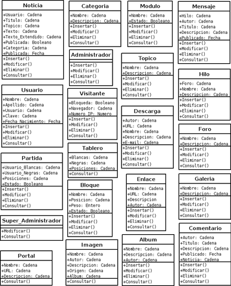
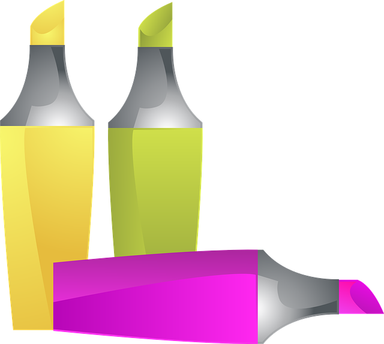
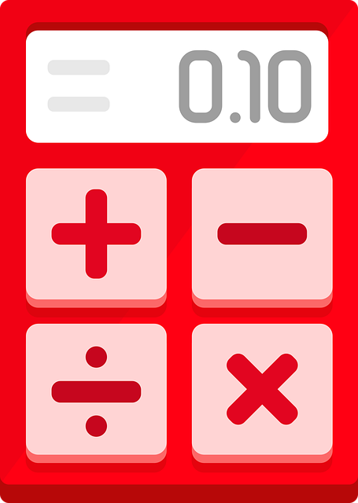
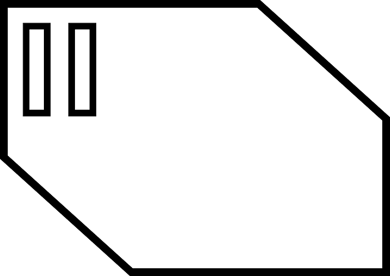
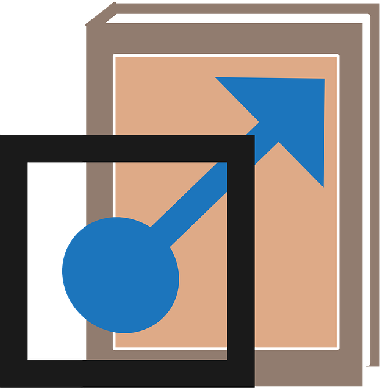
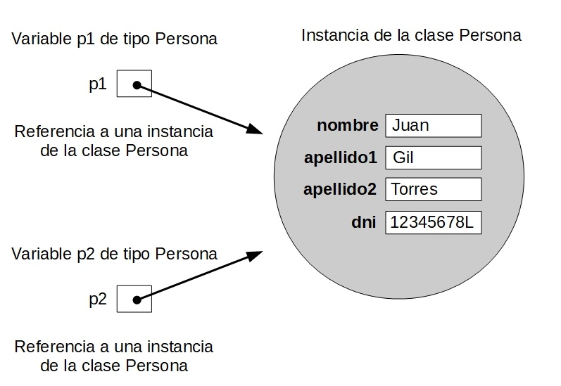
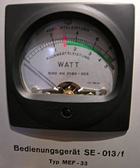
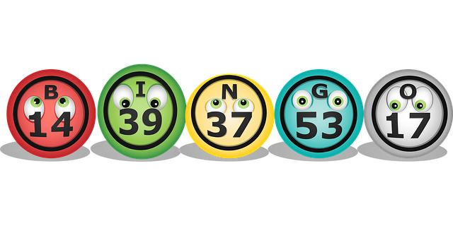

Desarrollo de clases
Desarrollo de clases
Caso práctico
 Tras su primer contacto con la Programación Orientada a Objetos, María está mucho más convencida de los beneficios que se pueden obtener utilizando este tipo de metodología. Las explicaciones de Juan y su breve experiencia con los objetos le hacen ahora ver el mundo de la programación desde otro punto de vista. Este nuevo método de trabajo les va a permitir distribuir las tareas de desarrollo de una manera más eficiente y poder adaptarse a cambios, correcciones y mejoras con mucho menos esfuerzo a la hora de modificar código.
Tras su primer contacto con la Programación Orientada a Objetos, María está mucho más convencida de los beneficios que se pueden obtener utilizando este tipo de metodología. Las explicaciones de Juan y su breve experiencia con los objetos le hacen ahora ver el mundo de la programación desde otro punto de vista. Este nuevo método de trabajo les va a permitir distribuir las tareas de desarrollo de una manera más eficiente y poder adaptarse a cambios, correcciones y mejoras con mucho menos esfuerzo a la hora de modificar código.
María está convencida de que es el momento de empezar a escribir el código de sus propias clases para, a continuación, pasarlas a otros compañeros que las puedan usar. Una vez que otras personas reciban esas clases, podrán desentenderse de cómo están hechas por dentro (principios de encapsulamiento y ocultación de información) y limitarse únicamente a utilizarlas a través de los métodos que conforman su interfaz, la manera de comunicarse con el exterior, definiendo su comportamiento.
Para llevar a cabo esta labor Juan va a proseguir con las explicaciones sobre objetios y clases:
—Ha llegado el momento de empezar a desarrollar nuestras propias clases— le dice Juan.
—Genial, vamos a comenzar a desarrollar la primera biblioteca de clases para BK Programación, ¿no es así?
—Bueno, ésa es la idea. A ver si tenemos nuestro primer paquete de clases, que podríamos llamar com.bkprogramacion.
—Pues venga... ¡Vamos allá!
Un objeto es un caso individual, una instancia, de un elemento creada a partir de una definición (clase).
Componente software reutilizable expresado en términos de atributos (propiedades o características) y métodos (comportamiento). Los programadores pueden usar sus propias clases o las incluidas la biblioteca del lenguaje o de una biblioteca creada por terceros.
Consiste en el ocultamiento del estado de un objeto (de sus datos miembro o atributos) de manera que sólo se puede cambiar mediante las operaciones (métodos) definidas para ese objeto. Cada objeto está aislado del exterior de manera que se protegen los datos contra su modificación por quien no tenga derecho a acceder a ellos, eliminando efectos secundarios y colaterales no deseados. Este modo de proceder permite que el usuario de una clase pueda obviar la implementación de los métodos y propiedades para concentrarse sólo en cómo usarlos. Por otro lado se evita que el usuario pueda cambiar su estado de manera imprevista e incontrolada.
Es el efecto que se consigue gracias a la encapsulación: se evita la visibilidad de determinados miembros de un objeto al resto del código del programa. De ese modo la única manera de acceder al contenido del objeto (atributos) es mediante el uso de su interfaz (métodos).
Elemento de una clase u objeto compuesto por una serie de sentencias que sirven para describir las acciones a realizar con esa clase u objeto.
1.- Concepto de clase
Caso práctico
Una empresa de logística, antiguo cliente de BK Programación ha manifestado su inquietud respecto a la posibilidad de automatizar la gestión de sus vehículos de transporte terrestre. Para ello será necesario desarrollar un prototipo de simulación del comportamiento de sus vehículos.
El equipo de trabajo que han formado María y Juan parece funcionar bastante bien, así que cuando Ada ha repartido el trabajo entre los distintos componentes de la empresa, a ellos les ha tocado evaluar la posibilidad de crear un simulador para observar cómo funcionan los vehículos. Se trataría de una aplicación muy sencilla que permitiera crear vehículos para observar su comportamiento respecto al consumo, recorridos, etc.
Es el momento de que empiecen a pensar en los distintos objetos con los que pueden modelar la información cuyo tratamiento desean automatizar. Muchos de estos objetos no van a ser proporcionados por las bibliotecas de Java, de manera que habrá que "fabricarlos", es decir, van a tener que diseñar e implementar las clases (los "moldes" o "plantillas") que les permitirán crear los objetos que van a necesitar. Ha llegado el momento de enfrentarse seriamente con la implementación de una clase.
Juan está dándole vueltas a la idea pensando en la información que habrá que almacenar y el comportamiento que habrá que implementar para modelar un vehículo de la manera más simple posible:
— Habría que disponer de atributos para almacenar el tamaño del depósito y el consumo medio, y éstos atributos ya serán inmutables a lo largo de la vida de todo el objeto. Sin embargo, otros atributos como la distancia recorrida o el consumo producido, estarán más relacionados con el estado del objeto y podrán ir cambiando a lo largo de la vida de éste, ¿no crees?
— Sí. Parece bastante razonable. Además también vendría bien disponer de atributos que sean independientes de los objetos, que dependan directamente de la clase, aunque incluso no existieran aún objetos creados. — le contesta María, que está echándole una mano.
— ¡Claro! Imagina que queremos almacenar en alguna parte el total de kilómetros recorridos por todos los coches de la empresa. ¿Qué mejor forma de representarlo que utilizando atributos estáticos para ello? ¡Buena idea! — le interpela Juan, mientras sigue dibujando un pequeño esquema de cómo podría quedar la clase que representa a los vehículos.
Nada más comenzar la unidad se nos propone un reto muy interesante: intentar desarrollar un modelo simple de un vehículo terrestre, por ejemplo un automóvil. A lo largo de toda la unidad vamos a utilizar este proyecto como eje central para estudiar cada uno de los aspectos importantes a la hora de desarrollar una clase en Java y, por extensión, en cualquier lenguaje de programación orientado a objetos.
Como ya has visto en anteriores unidades, las clases están compuestas por atributos y métodos especificando de esa manera las características comunes de un conjunto de objetos. De esta forma, los programas que escribas estarán formados por un conjunto de clases, a partir de las cuales irás creando objetos que se interrelacionarán unos con otros. Nuestro primer objetivo será entonces implementar una clase Vehiculo.
Fragmento de código encapsulado dentro de una clase que representa un comportamiento específico de un objeto ante unos determinados estímulos (parámetros de entrada)
Una propiedad o información específica contenida en el interior de un objeto.
Recomendación
En esta unidad se va a utilizar el concepto de objeto así como algunas de las diversas estructuras de control básicas que ofrece cualquier lenguaje de programación. Todos esos conceptos han sido explicados y utilizados en las unidades anteriores. Si consideras que es necesario hacer un repaso del concepto de objeto o del uso de las estructuras de control elementales, éste es el momento de hacerlo.
1.1.- Repaso del concepto de objeto
Desde el comienzo del módulo llevas utilizando el concepto de objeto para desarrollar tus programas de ejemplo. En las unidades anteriores se ha descrito un objeto como una entidad que contiene información (atributos) y que es capaz de llevar a cabo ciertas operaciones (métodos) con esa información más algunos estímulos externos (parámetros de entrada de los métodos). Según la información que contengan esos atributos el objeto tendrá un estado determinado y según las operaciones que se puedan llevar a cabo con esos datos será responsable de un comportamiento concreto.
Recuerda que entre las características fundamentales de un objeto se encontraban la identidad (los objetos son únicos y por tanto distinguibles entre sí, aunque pueda haber objetos exactamente iguales), un estado (los atributos que describen al objeto y que tendrán cierto valor en cada momento) y un determinado comportamiento (acciones que se pueden realizar sobre el objeto).
Algunos ejemplos de objetos que podríamos imaginar podrían ser:
- Un vehículo de tipo turismo, de color rojo, marca SEAT, modelo Toledo, del año 2020. En este ejemplo tenemos una serie de atributos, como el color (en este caso rojo), la marca, el modelo, el año, etc. Así mismo también podríamos imaginar determinadas características como la cantidad de combustible que le queda, o el número de kilómetros recorridos hasta el momento.
- Otro vehículo de color amarillo, marca Opel, modelo Astra, del año 2018.
- Otro vehículo más de color amarillo, marca Opel, modelo Astra y también del año 2018. Se trataría de otro objeto (otro vehículo) con las mismas propiedades que el anterior (es idéntico pero no es el mismo). Sería otro objeto diferente con características idénticas, casi como un clon.
- Un cocodrilo de cuatro metros de longitud y de veinte años de edad.
- Un círculo de radio 2 centímetros, con centro en las coordenadas (0,0) y relleno de color amarillo.
- Otro círculo de radio 3 centímetros, con centro en las coordenadas (1,2) y relleno de color verde.
- Una persona con nombre "Juan", apellidos "Torres Waxman" y fecha de nacimiento 01/01/1990.
- Otra persona con nombre "Ana", apellidos "Castillo Gil" y fecha de nacimiento 04/07/1992.
Si observas los ejemplos anteriores podrás distinguir sin demasiada dificultad al menos cuatro familias de objetos diferentes, que no tienen nada que ver una con otra:
- Los vehículos.
- Los círculos.
- Los cocodrilos.
- Las personas.

Es de suponer entonces que cada objeto tendrá determinadas posibilidades de comportamiento (acciones) dependiendo de la familia a la que pertenezcan. Por ejemplo, en el caso de los vehículos podríamos imaginar acciones como: arrancar, apagar, repostar, frenar, acelerar, cambiar de marcha, etc. En el caso de los cocodrilos podrías imaginar otras acciones como: desplazarse, comer, dormir, cazar, etc. Para el caso del círculo se podrían plantear acciones como: cálculo de la superficie del círculo, cálculo de la longitud de la circunferencia que lo rodea, etc.
Por otro lado, también podrías imaginar algunos atributos cuyos valores podrían ir cambiando en función de las acciones que se realizaran sobre el objeto: ubicación del vehículo (coordenadas), velocidad instantánea, kilómetros recorridos, velocidad media, cantidad de combustible en el depósito, etc. En el caso de los cocodrilos podrías imaginar otros atributos como: peso actual, el número de dientes actuales (irá perdiendo algunos a lo largo de su vida), el número de presas que ha cazado hasta el momento, etc.
Como puedes ver, un objeto puede ser cualquier cosa que puedas describir en términos de atributos y acciones. Dependerá de la aplicación que tengas que desarrollar para que tu objeto contenga unos u otros atributos y/o acciones. El límite estará en las necesidades de la aplicación y tu imaginación a la hora de "inventar" objetos.
Un objeto no es más que la representación de cualquier entidad concreta o abstracta que puedas percibir o imaginar y que pueda resultar de utilidad para modelar los elementos del entorno del problema que deseas resolver.
Autoevaluación
Reflexiona
Si has trabajado antes con el modelo Entidad/Relación para representar información a la hora de modelar un sistema de información o una base de datos, es posible que hayas reparado en la la similitud que existe entre el concepto de objetos y el de instancias o casos individuales de una entidad.
1.2.- El concepto de clase
Está claro que dentro de un mismo programa tendrás la oportunidad de encontrar decenas, cientos o incluso miles de objetos. En algunos casos no se parecerán en nada unos a otros, pero también podrás observar que habrá muchos que tengan un gran parecido, compartiendo un mismo comportamiento y unos mismos atributos. Habrá muchos objetos que sólo se diferenciarán por los valores que toman algunos de esos atributos.
Es aquí donde entra en escena el concepto de clase. Está claro que no podemos definir la estructura y el comportamiento de cada objeto cada vez que va a ser utilizado dentro de un programa, pues la escritura del código sería una tarea interminable y redundante. La idea es poder disponer de una plantilla o modelo para cada conjunto de objetos que sean del mismo tipo, es decir, que tengan los mismos atributos y un comportamiento similar.
Una clase consiste en la definición de un tipo de objeto. Se trata de una descripción detallada de cómo van a ser los objetos que pertenezcan a esa clase, indicando qué tipo de información contendrán (atributos) y cómo se podrá interactuar con ellos (comportamiento).
Como ya has visto anteriormente, una clase consiste en un plantilla en la que se especifican:
- Los atributos que van a ser comunes a todos los objetos que pertenezcan a esa clase (información).
- Los métodos que permiten interactuar con esos objetos (comportamiento).
A partir de este momento podrás hablar ya sin confusión de objetos y de clases, sabiendo que los primeros son instancias concretas de las segundas, que no son más que una abstracción o definición.
Si nos volvemos a fijar en los ejemplos de objetos del apartado anterior podríamos observar que las clases serían lo que clasificamos como "familias" de objetos (Vehiculo, Cocodrilo, Circulo, Persona). Por ejemplo, podríamos hablar de la clase Vehiculo y de varios objetos de esa clase: el Seat Toledo rojo de 2020, el primer Opel Astra amarillo de 2018 y el segundo Opel Astra amarillo de 2018.
En el lenguaje cotidiano de muchos programadores puede ser habitual la confusión entre los términos clase y objeto. Aunque normalmente el contexto nos permite distinguir si nos estamos refiriendo realmente a una clase (definición abstracta) o a un objeto (instancia concreta), hay que tener cuidado con su uso para no dar lugar a interpretaciones erróneas, especialmente durante el proceso de aprendizaje.
Autoevaluación
Retroalimentación
Falso
No es cierto. Aunque a veces ambos términos son utilizados para referirnos a lo mismo, no se trata del mismo concepto. Una clase consiste en una definición abstracta de cómo puede ser un objeto (qué información contiene y cómo se puede interaccionar con él), pero no se refiere a ninguna instancia específica de objeto (podríamos decir que especificamos qué atributos puede tener, pero no qué valor tienen). Por otro lado un objeto es una instancia concreta de una clase, es decir, un conjunto de valores concretos para una definición genérica de clase.
Reflexiona
Nuevamente, si has trabajado antes con el modelo Entidad/Relación, también es muy probable que te hayas fijado en el paralelismo que existe entre el concepto de clase y el de entidad.
Para saber más
Aquí tienes un par de vídeos introductorios a la programación orientada a objetos usando el lenguaje Java.
En el segundo vídeo se comienzan a escribir algunos ejemplos en Java que es posible que aún no entiendas, pues se habla de algunos conceptos a los que llegaremos en apartados posteriores. Si es así, no te preocupes, cuando llegues a un punto que no entiendas, no continúes con el visionado del vídeo y vuelve cuando hayas visto los conceptos de método y constructor.
2.- Empaquetado de clases
Caso práctico
María y Juan ya han terminado por ahora de escribir todas las clases que habían diseñado. Es el momento de organizar adecuadamente todo el código que tienen implementado a lo largo de todas esas clases. María recuerda que hace algunos días Juan ya le habló de la posibilidad de organizar las clases en paquetes:
Este sería un buen momento para poner en práctica todo aquello que me enseñaste sobre los paquetes, ¿no?
—La verdad es que tienes razón. Esto hay que organizarlo un poco —le contesta Juan.
La encapsulación de la información dentro de las clases permite llevar a cabo el proceso de ocultación, que es fundamental para el trabajo con clases y objetos. Es posible que conforme vaya aumentando la complejidad de tus aplicaciones necesites que algunas de tus clases puedan tener acceso a parte de la implementación de otras debido a las relaciones que se establezcan entre ellas a la hora de diseñar tu modelo de datos. En estos casos se puede hablar de un nivel superior de encapsulamiento y ocultación conocido como empaquetado.
Un paquete consiste en un conjunto de clases relacionadas entre sí y agrupadas bajo un mismo nombre. Normalmente se encuentran en un mismo paquete todas aquellas clases que forman una biblioteca o que reúnen algún tipo de característica en común. Esto facilita la organización de las clases para luego poder localizar fácilmente aquellas que vayas necesitando.
2.1.- Jerarquía de paquetes
Los paquetes en Java pueden organizarse jerárquicamente de manera similar a lo que puedes encontrar en la estructura de carpetas en un dispositivo de almacenamiento, donde:
- las clases serían como los archivos,
- cada paquete sería como una carpeta que contiene archivos (clases).,
- cada paquete puede además contener otros paquetes (como las carpetas que pueden contener otras carpetas),
- para poder hacer referencia a una clase dentro de una estructura de paquetes, habrá que indicar la trayectoria completa desde el paquete raíz de la jerarquía hasta el paquete en el que se encuentra la clase, indicando por último el nombre de la clase (como el path absoluto de un archivo).
La estructura de paquetes en Java permite organizar y clasificar las clases, evitando conflictos de nombres y facilitando la ubicación de una clase dentro de una estructura jerárquica.
Por otro lado, la organización en paquetes permite también el control de acceso a miembros de las clases desde otras clases que estén en el mismo paquete gracias a los modificadores de acceso. Los modificadores de acceso se van a ver en detalle dentro de un par de apartados en esta misma unidad, aunque ya han aparecido en algunos ejemplos anteriores. ¿Recuerdas el modificador public?
Las clases que forman parte de la jerarquía de clases de Java se encuentran organizadas en diversos paquetes.
Todas las clases proporcionadas por Java en sus bibliotecas son miembros de distintos paquetes y se encuentran organizadas jerárquicamente. Dentro de cada paquete habrá un conjunto de clases con algún tipo de relación entre ellas. Se dice que todo ese conjunto de paquetes forman la API Java. Por ejemplo, las clases básicas del lenguaje se encuentran en el paquete java.lang, las clases de entrada/salida las podrás encontrar en el paquete java.io y en el paquete java.math podrás observar algunas clases para trabajar con números grandes y de gran precisión.
Una interfaz de programación de aplicaciones o API (del inglés Application Programming Interface) consiste en el conjunto de clases, interfaces, métodos, funciones, constantes, etcétera, que ofrece cierta biblioteca para ser utilizado por otro software como una capa de abstracción.
Para saber más
Puedes echar un vistazo a la jerarquía de paquetes de la API básica de Java en la documentación oficial de Oracle:
2.2.- Utilización de los paquetes
Es posible acceder a cualquier clase de cualquier paquete (siempre que ese paquete esté disponible en nuestro sistema, obviamente) mediante la calificación completa de la clase dentro de la estructura jerárquica de paquete. Es decir indicando la trayectoria completa de paquetes desde el paquete raíz hasta la propia clase. Eso se puede hacer utilizando el operador punto: ".") para especificar cada subpaquete:
paquete_raiz.subpaquete1.subpaquete2. ... .subpaquete_n.NombreClase
Por ejemplo:
java.lang.String
En este caso se está haciendo referencia a la clase String que se encuentra dentro del paquete java.lang. Este paquete contiene las clases elementales para poder desarrollar una aplicación Java.
Otro ejemplo podría ser:
java.util.regex.Pattern
En este otro caso se hace referencia a la clase Pattern ubicada en el paquete java.util.regex, que contiene clases para trabajar con expresiones regulares.
Dado que puede resultar bastante tedioso tener que escribir la trayectoria completa de una clase cada vez que se quiera utilizar, existe la posibilidad de indicar que se desea trabajar con las clases de uno o varios paquetes. De esa manera cuando se vaya a utilizar una clase que pertenezca a uno de esos paquetes no será necesario indicar toda su trayectoria. Para ello se utiliza la sentencia import (importar):
import paquete_raiz.subpaquete1.subpaquete2. ... .subpaquete_n.NombreClase;
De esta manera a partir de ese momento podrá utilizarse directamente NombreClase en lugar de toda su trayectoria completa.
Los ejemplos anteriores quedarían entonces:
import java.lang.String;
import java.util.regex.Pattern;
Si suponemos que vamos a utilizar varias clases de un mismo paquete, en lugar de hacer un import de cada una de ellas, podemos utilizar el comodín (símbolo asterisco: "*") para indicar que queremos importar todas las clases de ese paquete y no sólo una determinada:
import java.lang.*;
import java.util.regex.*;
Si un paquete contiene subpaquetes, el comodín no importará las clases de los subpaquetes, tan solo las que haya en el paquete. La importación de las clases contenidas en los subpaquetes habrá que indicarla explícitamente. Por ejemplo:
import java.util.*;
import java.util.regex.*;
En este caso se importarán todas las clases del paquete java.util (clases Date, Calendar, Timer, etc.) y de su subpaquete java.util.regex (Matcher y Pattern), pero NO las de otros subpaquetes como java.util.concurrent o java.util.jar.
Por último tan solo indicar que en el caso del paquete java.lang, no es necesario realizar importación. El compilador, dada la importancia de este paquete, permite el uso de sus clases sin necesidad de indicar su trayectoria (es como si todo archivo Java incluyera en su primera línea la sentencia import java.lang.* aunque no se escriba). El motivo, recordamos, es que este paquete contiene toda una serie de clases fundamentales para el buen funcionamiento del lenguaje, incluyendo la propia clase Object, de la que heredan todas las demás, por lo que no sería posible hacer nada sin disponer de ese paquete.
Autoevaluación
Retroalimentación
Falso
Es cierto que se importarán todas las clases incluidas en el paquete especificado, pero no sucederá lo mismo con los subpaquetes. Será necesaria también una sentencia import para cada subpaquete.
2.3.- Inclusión de una clase en un paquete
Al principio de cada archivo .java se puede indicar a qué paquete pertenece mediante la palabra reservada package seguida del nombre del paquete:
package nombrepaquete;
Por ejemplo:
package packejemplo;
class ClaseEjemplo {
...
}
La sentencia package debe ser incluida en cada archivo fuente de cada clase que quieras incluir ese paquete. Si en un archivo fuente hay definidas más de una clase, todas esas clases formarán parte del paquete indicado en la sentencia package.
Si al comienzo de un archivo Java no se incluye ninguna sentencia package, el compilador considerará que las clases de ese archivo formarán parte del paquete por omisión (un paquete sin nombre asociado al proyecto), aunque se recomienda siempre usar algún paquete para el proyecto, distinto de paquete por defecto o por omisión.
Para evitar la ambigüedad, dentro de un mismo paquete no puede haber dos clases con el mismo nombre, aunque sí pueden existir clases con el mismo nombre si están en paquetes diferentes. El compilador será capaz de distinguir una clase de otra gracias a que pertenecen a paquetes distintos.
Como ya has visto en unidades anteriores, el nombre de un archivo fuente en Java se construye utilizando el nombre de la clase pública que contiene junto con la extensión .java, pudiendo haber únicamente una clase pública por cada archivo fuente. El nombre de la clase debía coincidir (en mayúsculas y minúsculas) exactamente con el nombre del archivo en el que se encontraba definida. Así, si por ejemplo tenías una clase Punto dentro de un archivo Punto.java, la compilación daría lugar a un archivo Punto.class.
En el caso de los paquetes, la correspondencia es a nivel de directorios o carpetas. Es decir, si la clase Punto se encuentra dentro del paquete prog.figuras, el archivo Punto.java debería encontrarse en la carpeta prog\figuras. Para que esto funcione correctamente el compilador ha de ser capaz de localizar todos los paquetes (tanto los estándar de Java como los definidos por otros programadores). Es decir, que el compilador debe tener conocimiento de dónde comienza la estructura de carpetas definida por los paquetes y en la cual se encuentran las clases. Para ello se utiliza el ClassPath cuyo funcionamiento hemos estudiado en las primeras unidades de este módulo. Se trata de una variable de entorno que contiene todas las rutas en las que comienzan las estructuras de directorios (distintas jerarquías posibles de paquetes) en las que están contenidas las clases.
Para saber más
En el siguiente enlace puedes aprender más sobre paquetes en Java. Concretamente se ve cómo compilar y ejecutar desde la consola (sin usar ningún IDE como NetBeans, etc.), con la estructura de paquetes.
2.4.- Proceso de creación de un paquete
Para crear un paquete en Java te recomendamos seguir los siguientes pasos:
- Poner un nombre al paquete. Suele ser habitual utilizar el dominio de Internet de la empresa que ha creado el paquete. Por ejemplo, para el caso de miempresa.com, podría utilizarse un nombre de paquete com.miempresa.
- Crear una estructura jerárquica de carpetas equivalente a la estructura de subpaquetes. La ruta de la raíz de esa estructura jerárquica deberá estar especificada en el ClassPath de Java.
- Especificar a qué paquete pertenece la clase (o clases) del archivo
.javamediante el uso de la sentencia package tal y como has visto en el apartado anterior.
Este proceso ya lo has debido llevar a cabo en unidades anteriores al compilar y ejecutar clases con paquetes. Estos pasos simplemente son para que te sirvan como recordatorio del procedimiento que debes seguir a la hora de clasificar, jerarquizar y utilizar tus propias clases.
En Netbeans el proceso de creación de paquetes es muy sencillo, casi automático, pues basta con indicar que deseas crear un paquete y ya el IDE creará la carpeta por ti. A partir de ese momento aparecerá en tu proyecto un nuevo elemento representando el paquete que acabas de crear y dentro del cual podrás crear nuevas clases y subpaquetes.
3.- Estructura y miembros de una clase
Caso práctico
 María empieza a tener bastante más claro en qué consiste una clase y cuál es la diferencia respecto a un objeto. Es el momento de empezar a crear en Java algunas de las clases que han estado pensando que podrían ser útiles para su aplicación sobre vehículos. Lo primero que querrían hacer sería declarar una clase para reperesentar un vehículo. Para ello es necesario saber cómo se declara una clase en un lenguaje de programación determinado. Los becarios Ana y Carlos intuyen que van a comenzar a ver cómo está hecha una clase "por dentro". Parece ser que es el momento de empezar a tomar notas:
María empieza a tener bastante más claro en qué consiste una clase y cuál es la diferencia respecto a un objeto. Es el momento de empezar a crear en Java algunas de las clases que han estado pensando que podrían ser útiles para su aplicación sobre vehículos. Lo primero que querrían hacer sería declarar una clase para reperesentar un vehículo. Para ello es necesario saber cómo se declara una clase en un lenguaje de programación determinado. Los becarios Ana y Carlos intuyen que van a comenzar a ver cómo está hecha una clase "por dentro". Parece ser que es el momento de empezar a tomar notas:
—De acuerdo, ya hemos pensado en la clase principal que va a tener nuestra aplicación: la clase Vehiculo. Pero, ¿cómo escribimos eso en Java? ¿Cómo declaramos o definimos una clase en Java? ¿Qué palabras reservadas hay que utilizar? ¿Qué partes tiene esa definición? —pregunta María con interés.
—Bien, es el momento de ver cómo es la estructura de una clase y cómo podemos escribirla en Java para luego poder fabricar objetos que sean instancias de esa clase —le responde Juan.
A estas alturas es muy probable que intuyas que para declarar una clase en Java se usa la palabra reservada class. En la declaración de una clase vas a encontrar:
- Cabecera de la clase. Compuesta por una serie de modificadores de acceso, la palabra reservada
classy el nombre de la clase. - Cuerpo de la clase. En él se especifican los distintos miembros de la clase: atributos y métodos. Es decir, el contenido de la clase.

Como puedes observar, el cuerpo de la clase es donde se declaran los atributos que caracterizan a los objetos de la clase y donde se define e implementa el comportamiento de dichos objetos; es decir, donde se declaran e implementan los métodos.
Autoevaluación
Retroalimentación
Falso
No es cierto. En la cabecera se define únicamente el nombre de la clase y algunos modificadores de acceso y de herencia. En el cuerpo se definen tanto los atributos como los métodos.
3.1.- Declaración de una clase

La declaración de una clase en Java está basada en la palabra reservada class y tiene la siguiente estructura general:
// Cabecera de la clase
[modificadores] class <NombreClase> [herencia][interfaces] {
// Cuerpo de la clase
// Atributos
[Declaración de los atributos]
// Métodos
[Declaración de los métodos]
}Todo lo que está entre corchetes es opcional. Por tanto, lo mínimo e imprescindible que necesitamos para declarar una clase en Java es la palabra reservada class más en el nombre que le queremos dar a la clase junto con las llaves que se abren y se cierran para codificar el cuerpo de la clase. Por el momento no necesitaríamos nada más.
¿Cómo podríamos hacerlo para nuestra clase Vehiculo?
Lo primero que tendríamos que hacer sería pensar en cómo querríamos llamar la clase (lo tenemos claro: Vehiculo). Eso junto con la palabra reservada class y las llaves que engloban al cuerpo podrían darnos una primera aproximación a nuestra clase:
class Vehiculo {
}
En este caso se trata de una clase muy sencilla en la que el cuerpo de la clase (el área entre las llaves) no contiene absolutamente nada. Conforme vayamos avanzando habrá que ir rellenándola con el código y las declaraciones necesarias para que los objetos que se construyan (basándose en esta clase) puedan funcionar apropiadamente en un programa (declaración de atributos para contener el estado del objeto y declaración métodos que implementen el comportamiento de los objetos creados a partir de ella). Ahora mismo no es más que un "envoltorio" vacío. Si queremos añadirle algunos comentarios para que quede más documentada, podríamos incluirlos. Aún así, seguiría siendo algo vacío y de poca utilidad. Simplemente hemos declarado una clase Vehiculo que no tiene ningún atributo ni ningún método:
// Declaración de la clase Vehiculo
// Cabecera de la clase:
// modificadores de acceso (ninguno),
// palabra reservada "class"
// nombre de la clase ("Vehiculo"),
// herencia (nada),
// implementación de interfaces (ninguna).
class Vehiculo {
// Cuerpo de la clase: declaración de atributos e implementación de métodos -> Por ahora vacía
// 1. Declaración de atributos: por ahora no hay ninguno
// 2. Implementación de métodos: por ahora no hay ninguno
}
Si te fijas en los distintos programas que se han desarrollado en los ejemplos y las tareas de las unidades anteriores, podrás observar que cada uno de esos programas era en sí mismo una clase Java: se declaraban con la palabra reservada class y contenían algunos atributos (variables) así como algunos métodos (como mínimo el método main).
En el ejemplo anterior hemos visto lo mínimo que se tiene que indicar en la cabecera de una clase (el nombre de la clase y la palabra reservada class). Se puede proporcionar bastante más información mediante modificadores y otros indicadores como por ejemplo el nombre de su superclase (si es que esa clase hereda de otra), si implementa alguna interfaz (en inglés interface) y algunas cosas más que irás aprendiendo poco a poco.
A la hora de implementar una clase Java (escribirla en un archivo con un editor de textos o con alguna herramienta integrada como por ejemplo Netbeans o Eclipse) debes tener en cuenta:
- Como debes recordar, por convenio, se ha decidido que en lenguaje Java los nombres de las clases deben de empezar por una letra mayúscula. Así, cada vez que observes en el código una palabra con la primera letra en mayúscula sabrás que se trata de una clase sin necesidad de tener que buscar su declaración. Además, si el nombre de la clase está formado por varias palabras, cada una de ellas también tendrá su primera letra en mayúscula. No se usarán ni el carácter de subrayado también conocido como guión bajo o underscore: '_'), ni separadores como espacios en blanco. Tampoco recomendamos utilizar caracteres acentuados, la eñe, ni ningún otro carácter especial extraño por facilitar el trabajo a los teclados internacionales (imagina un código plagado de eñes y acentos que tenga que ser retocado por alguien que esté usando un teclado aglosajón en EEUU, podría ser una auténtica pesadilla). Siguiendo esta recomendación, algunos ejemplos de nombres de clases podrían ser
Circulo,Rectangulo,Jugador,Deposito,Ticket,JugadorDeFutbol,AnimalMarino,Vehiculo,VehiculoTerrestre,Persona,CuentaBancaria, etc. - El archivo en el que se encuentra una clase Java debe tener el mismo nombre que esa clase si queremos poder utilizarla desde otras clases que se encuentren fuera de ese archivo (clase principal del archivo). Por esa razón, mientras no se diga lo contrario, siempre tendremos un archivo por cada clase que desarrollemos.
- Tanto la definición como la implementación de una clase se incluye en el mismo archivo (archivo "
.java"). En otros lenguajes como por ejemplo C++, definición e implementación podrían ir en archivos separados (por ejemplo en C++, serían sendos archivos con extensiones ".h" y ".cpp").
interface) en Java es una clase donde todos sus métodos son implícitamente declarados como abstract (métodos abstractos), que son métodos sin cuerpo, sin implementación. Es misión del programador implementar los métodos del interface en cualquier clase que lo use.Para saber más
Si quieres ampliar un poco más sobre este tema puedes echar un vistazo a los tutoriales de iniciación de Java en el sitio web de Oracle:
3.2.- Cabecera de una clase
En general, la declaración de una clase puede incluir los siguientes elementos y en el siguiente orden:
- Modificadores tales como
public,abstractofinal. No es obligatorio indicar ninguno. - El nombre de la clase (con la primera letra de cada palabra en mayúsculas, por convenio).
- El nombre de su clase padre (superclase), si es que se especifica, precedido por la palabra reservada
extends("extiende" o "hereda de"). Eso lo veremos en la siguiente unidad cuando aprendamos a usar la herencia. No es obligatorio indicar ningún tipo de herencia. - Una lista separada por comas de interfaces que son implementadas por la clase, precedida por la palabra reservada
implements("implementa"). También lo aprenderemos a utilizar en la próxima unidad. No es obligatorio implementar ninguna interfaz. - El cuerpo de la clase, encerrado entre llaves
{}.
La sintaxis completa de una cabecera (los cuatro primeros puntos) queda de la forma::
// Cabecera de la clase
[modificadores] class <NombreClase> [extends <NombreSuperClase>]
[implements <NombreInterfaz1>] [, [<NombreInterfaz2>], ...,[<NombreInterfazN>]] {
En nuestro ejemplo de la clase Vehiculo teníamos la siguiente cabecera:
class Vehiculo {
En este caso no hay modificadores, ni indicadores de herencia, ni implementación de interfaces. Tan solo la palabra reservada class y el nombre de la clase. Es lo mínimo que puede haber en la cabecera de una clase.
La herencia y las interfaces las verás más adelante. Vamos a ver ahora cuáles son los modificadores que se pueden indicar al crear la clase y qué efectos tienen. Los modificadores de clase son:
[public] [final | abstract]
Veamos qué significado tiene cada uno de ellos:
- Modificador
public. Indica que la clase es visible (se pueden crear objetos de esa clase) desde cualquier otra clase. Es decir, desde cualquier otra parte del programa. Si no se especifica este modificador, la clase sólo podrá ser utilizada desde clases que estén en el mismo paquete. Sólo puede haber una clasepublic(clase principal) en un archivo .java. El resto de clases que se definan en ese archivo no serán públicas. - Modificador
abstract. Indica que la clase es abstracta. Una clase abstracta no es instanciable. Es decir, no es posible crear objetos de una clase abstracta (habrá que utilizar clases que hereden de ella). En este momento es posible que te parezca que no tenga sentido que esto pueda suceder (si no puedes crear objetos de esa clase, ¿para qué la quieres?), pero puede resultar muy útil a la hora de crear una jerarquía de clases. Esto lo verás también más adelante al estudiar el concepto de herencia. - Modificador
final. Indica que no podrás crear clases que hereden de ella. También volverás a este modificador cuando estudies el concepto de herencia. Los modificadoresfinalyabstractson excluyentes (sólo se puede utilizar uno de ellos al mismo tiempo).
Todos estos modificadores y palabras reservadas las iremos viendo poco a poco, así que no te preocupes demasiado por intentar entender todas ellas en este momento.
En el ejemplo anterior de la clase Vehiculo tendríamos una clase que sería sólo visible (utilizable) desde el mismo paquete en el que se encuentra la clase (modificador de acceso por omisión o de paquete, o package). Desde fuera de ese paquete no sería visible o accesible. Para poder utilizarla desde cualquier otra clase desde cualquier paquete bastaría con añadir el atributo public:
public class Vehiculo {
Mecanismo mediante el cual una clase puede derivar de otra, a la que llamamos clase base, clase padre o superclase, de manera que la clase derivada extiende la funcionalidad de la clase base. Se trata de un caso de especialización.
abstract.Normalmente declararemos las clases como public.
Autoevaluación
Autoevaluación
Retroalimentación
Verdadero
Son dos modificadores compatibles. Lo que no se puede ser a la vez es final y abstract.
3.3.- Cuerpo de una clase
Como ya has visto anteriormente, el cuerpo de una clase se encuentra encerrado entre llaves y contiene la declaración e implementación de sus miembros. Los miembros de una clase pueden ser:
- atributos, que especifican los datos que podrá contener un objeto de la clase,
- métodos, que implementan las acciones que se podrán realizar con un objeto de la clase (el comportamiento).
Una clase puede no contener en su declaración atributos o métodos, pero debería contener al menos uno de los dos, pues una clase totalmente vacía no tiene ninguna utilidad.
Ahora ha llegado el momento de empezar a pensar en qué atributos podría tener nuestra clase Vehiculo que estamos construyendo poco a poco. Algunos ejemplos de posibles atributos para nuestra clase podrían ser:
- Nivel del depósito de combustible (un número real que exprese una cantidad en litros).
- Año de matriculación (un número entero).
- Estado del motor (si está apagado o arrancado).
- etc.
Para cada uno de esos posibles atributos habrá que decidir qué nombre le asignamos (identificador) y qué tipo de Java le vamos a asociar (un tipo primitivo o bien algún tipo más complejo, como por ejemplo un String).
Por ejemplo, podríamos plantearlo así:
- Nivel del depósito de combustible: nombre
nivelDepositoy tipodouble. - Año de matriculación: nombre
matriculaciony tiposhort. Podríamos haber usadointy también habría sido correcto, pero teniendo en cuenta va a ser siempre un número de cuatro cifras, es suficiente con un entero más pequeño (se utilizan menos bytes y por tanto ocupa menos memoria). - Estado del motor: nombre
estadoMotory tipoboolean.
¿Y cómo expresaríamos eso en lenguaje Java? Pues simplemente declarando esos atributos dentro del cuerpo de la clase como si fueran variables:
public class Vehiculo {
double nivelDeposito;
short añoMatriculacion;
boolean estadoMotor;
}
Sencillo, ¿no? Pero, ¿y los métodos?
Eso lo veremos un poco más adelante. Vamos a centrarnos primero en los atributos...
Autoevaluación
Solución
4.- Atributos
Caso práctico
María está entusiasmada con las posibilidades que le ofrece el concepto de clase para poder crear cualquier tipo de objeto que a ella se le ocurra. Ya ha aprendido cómo declarar la cabecera de una clase en Java y ha estado probando con algunos de los ejemplos que le ha proporcionado Juan. Entiende más o menos cómo funcionan algunos de los modificadores de la clase, pero ha visto que el cuerpo es algo más complejo: ya no se trata de una simple línea de código como en el caso de la cabecera. Ahora tiene un conjunto de líneas de código que parecen hasta cierto punto un programa en pequeño. Puede encontrarse con declaraciones de variables, estructuras de control, realización de cálculos, etc.
Lo primero que María ha observado es que al principio suele haber algunas declaraciones de variables:
—¿Estas declaraciones de variables son lo que hemos llamado atributos? —le pregunta a Juan.
—Así es —contesta Ada, que en ese momento acaba de entrar por la puerta con Ana y con Carlos.
—Ahora que estáis todos juntos, creo que ha llegado el momento de que os explique algunas cosas acerca de los miembros de una clase. Vamos a empezar por los atributos.
Los atributos constituyen la estructura interna de los objetos de una clase. Se trata del conjunto de datos que los objetos de una determinada clase almacenan cuando son creados. Posteriormente esos datos pueden ir modificando su valor a lo largo de la vida del programa. Es decir, es como si fueran variables cuyo ámbito de existencia es el objeto dentro del cual han sido creadas. Fuera del objeto esas variables no tienen sentido y si el objeto deja de existir, esas variables también deberían desaparecer (proceso de destrucción del objeto).
Los atributos a veces también son conocidos con el nombre de propiedades (properties), campos (fields), variables miembro o variables de objeto..
Los atributos pueden ser de cualquier tipo del que pueda ser cualquier otra variable en un programa en Java: desde tipos primitivos como int, boolean o float hasta tipos referenciados como arrays u otros objetos con los que ya has trabajado (String,LocalDate, LocalTime, StringBuilder, etc.).
Además del tipo y del nombre, la declaración de un atributo puede contener también algunos modificadores (por ejemplo public, private, protected o static). En el caso de la clase Vehiculo con la que hemos empezado a trabajar en apartados anteriores hemos declarado algunos de sus atributos como:
public class Vehiculo {
double nivelDeposito;
short añoMatriculacion;
boolean estadoMotor;
}Hasta este momento no nos habíamos planteado si los atributos debían incorporar también modificadores. Pues así es: también pueden llevar modificadores y de hecho lo recomendable es que los atributos lleven el atributo private. Por otro lado, nuestra sugerencia como norma general es evitar el uso de caracteres no estándar en los identificadores como por ejemplo la eñe (añoMatriculacion). Por tanto, nuestra clase Vehiculo debemos modificarla en este aspecto, y podría quedar así:
public class Vehiculo {
private double nivelDeposito;
private short anioMatriculacion;
private boolean estadoMotor;
}Como ya verás más adelante al estudiar el concepto de encapsulación, lo normal es declarar todos los atributos (o al menos la mayoría) como privados (private) de manera que si se desea acceder o manipular algún atributo se tenga que hacer a través de los métodos proporcionados por la clase.
Lo habitual: atributos privados y métodos de acceso públicos.
Autoevaluación
Retroalimentación
Falso
No es cierto.
Precisamente porque se pretende ocultar los atributos al código externo a una clase, éstos no deberían ser públicos sino privados. Es decir, que si queremos que el acceso a un atributo pueda hacerse únicamente a través de los métodos de la clase, los atributos deberán ser privados (modificador private).
4.1.- Declaración de atributos
La sintaxis general para la declaración de un atributo en el interior de una clase es:
[modificadores] <tipo> <nombreAtributo>;Ejemplos:
int x; // Un atributo de tipo int (entero)
static double descuentoGeneral; // Un atributo de tipo double (real)
short numeroRuedas; // Un atributo de tipo short (entero corto)
float porcentajeDescuento; // Un atributo de tipo double (real)
final boolean casado; // Un atributo de tipo boolean (lógico)
public static final int VALOR_MAXIMO; // Un atributo de tipo int (entero) y constante
public String nombre; // Un atributo de tipo String (cadena de caracteres)
private LocalTime horaDeLlegada; // Un atributo de tipo LocalTime (hora)
Te suena bastante, ¿verdad?
La declaración de los atributos en una clase es exactamente igual a la declaración de cualquier variable tal y como has estudiado en las unidades anteriores y similar a como se hace en cualquier lenguaje de programación no necesariamente orientado a objetos. Es decir, mediante la indicación del tipo y a continuación el nombre del atributo.
También puedes declarar a la vez varios atributos del mismo tipo mediante una lista de nombres separada por comas (exactamente como ya has estudiado al declarar variables). Por ejemplo:
private StringBuilder nombre, apellido1, apellido2; // Tres atributos de tipo StringBuilder (cadena de caracteres)
private double peso, altura; // Dos atributos de tipo double (real)
private final LocalDate fechaInicio, fechaFin; // Dos atributos de tipo LocalDate (fecha)
La declaración de un atributo podría considerarse como la declaración de una variable que únicamente existe en el interior del objeto y, por tanto, su vida comenzará cuando el objeto comience a existir (el objeto sea creado por un constructor). Esto significa que cada vez que se cree o instancie un objeto se crearán tantas variables "internas" como atributos contenga ese objeto en su interior (definidas en la clase, que es la plantilla o "molde" del objeto). Todas esas variables estarán encapsuladas dentro del objeto y solo tendrán sentido dentro de él. Podríamos decir que son "locales" al objeto y visibles desde cualquiera de sus métodos, pero no necesariamente visibles desde fuera. A los atributos también se les conoce con otros nombres como por ejemplo: propiedades, campos, variables miembro, o variables de objeto.
En el ejemplo de clase que estamos diseñando con objetos de tipo Vehiculo (instancias de la clase Vehiculo), cada vez que se cree un nuevo vehículo v1, se crearán atributos nivelDeposito, matriculacion y estadoMotor de tipo double, short y boolean que estarán en el interior de ese vehículo v1 (algo así como variables "internas" que solo existen en el contexto de ese objeto vehículo v1). Si a continuación se crea un nuevo objeto Vehiculo v2, se crearán otros tres nuevos atributos nivelDeposito, matriculacion y estadoMotor de tipo double, short y boolean que estarán esta vez alojados en el interior de v2. Y así con todos los objetos de tipo Vehiculo que instanciemos o creemos. Cada v1, v2, v3, etc., tendrá sus propios valores para esos atributos (son vehículos independientes, cada uno con sus características específicas).
Dentro de la declaración de un atributo puedes encontrar tres partes:
- Modificadores. Son palabras reservadas que permiten modificar la utilización del atributo (indicar el control de acceso, si el atributo es constante, si se trata de un atributo de clase o de objeto, etc.). Los iremos viendo uno a uno. En los ejemplos anteriores ya has tenido la oportunidad de observar algunos de ellos como
public,private,static, etc. - Tipo. Indica el tipo del atributo. Puede tratarse de un tipo primitivo (
int,char,boolean,double, etc.) o bien de uno referenciado (objetos como por ejemploString,LocalDateoStringBuilder, un array, otra clase implementada previamente por ti, etc.). - Nombre. Identificador único para el nombre del atributo. Por convenio se suelen utilizar las minúsculas. En caso de que se trate de un identificador que contenga varias palabras, a partir de la segunda palabra se suele poner la letra de cada palabra en mayúsculas, tal y como ya hacíamos para declarar las variables (notación "camel case"). Por ejemplo:
primerValor,valor,puertaIzquierda,cuartoTrasero,equipoVecendor,sumaTotal,nombreCandidatoFinal, etc. Cualquier identificador válido de Java será admitido como nombre de atributo válido, pero es muy importante seguir este convenio para facilitar la legibilidad del código (todos los programadores de Java lo utilizan y nosotros también lo haremos). Si te fijas, es el mismo convenio que se utiliza para las variables. De este modo, cuando veamos un identificador que sigue ese convenio en cualquier parte del código sabremos rápidamente que se trata de un atributo o de una variable local.
Y ahora, antes de seguir avanzando, ha llegado el momento de que nos tomemos unos minutos para reflexionar sobre este tema de la declaración de atributos y realicemos un pequeño ejercicio para consolidar lo que llevamos aprendido.
Reflexiona
Casi siempre nos va a suceder que tendremos la opción de escoger entre varias posibilidades a la hora de decidir el tipo de un atributo. De hecho, ya te habrás encontrado con esa disyuntiva desde el comienzo del curso cada vez que vas a declarar una variable. Por ejemplo, para enteros hay cuatro posiblidades en Java (byte, short, int, long), para reales tienes dos (float, double), para cadenas de caracteres tienes también varias opciones (String, StringBuilder, StringBuffer).
Los tipos primitivos de Java ya los has estudiado y conoces las diferencias entre unos y otros: cuantos más bytes se utilicen para representar el valor, más preciso se podrá ser a la hora de almacenarlo y representarlo, aunque obviamente también se ocupará más memoria. En el caso de las clases, tendrás que decidir cuál es la que mejor se ajusta a la información que pretendes representar (un texto, una fecha, un intervalo entre fechas, una hora, una fecha y hora a la vez, etc.).
Una vez que tenemos claro el tipo de un atributo en "abstracto", de manera independiente al lenguaje de programación (entero, real, cadena de caracteres, etc.), ¿que criterio deberíamos utilizar a la hora de decidirnos por uno u otro tipo en Java si disponemos de varias alternativas?
Ejercicio Resuelto

Tras varias reuniones del equipo de diseño en las que se ha estado discutiendo el modelo de una clase para representar vehículos, se ha decidido que por el momento va a tener las siguientes características (atributos):
- Capacidad del depósito de combustible. En litros.
- Matrícula.
- Fecha de matriculación. Se ha decidido que en lugar de almacenar sólo el año, vamos a almacenar la fecha completa (día, mes y año).
- Estado del motor (encendido o apagado).
- Distancia recorrida desde que se fabricó el vehículo (memoria de ruta global). En kilómetros.
- Distancia recorrida desde que se arrancó por última vez (memoria de ruta parcial). En kilómetros.
Ahora nos toca a nosotros, como programadores, realizar un análisis en el que tendremos que decidir, para cada una de esas características:
- Un nombre o identificador para cada una de ellas (nombre del atributo).
- Un tipo genérico para poder representar apropiadamente esa característica (número entero, número real, texto, fecha, etc.). No es necesario que "afinemos" con un tipo específico del lenguaje Java (por ejemplo, si se trata de un número entero basta con que indiquemos "número entero", todavía no hay que indicar si va a ser
byte,short,intolong.
Una vez realizado ese análisis y decidido el nombre o identificador que se va a utilizar para cada atributo así como el tipo "genérico" que va a tener cada uno, habrá que escoger tipos primitivos de Java que representen apropiadamente las magnitudes o valores que queremos almacenar en ellos. Si fuéramos a trabajar con otro lenguaje diferente a Java (C++, PHP, Python, Ruby, etc.) habría que amoldarse a los tipos que ofrezca ese lenguaje.
Si la información que va a contener un atributo es demasiado compleja para poder ser representada por un tipo primitivo de Java, también puede recurrirse a clases ya disponibles en la API de Java, o incluso a otras clases que hayan sido implementadas por otros programadores.
Lleva a cabo este nuevo análisis y rellena una tabla en la que indiques, para cada atributo, qué tipo primitivo (o clase) de Java se le va a asignar.
A partir de la tabla que has confeccionado con el nombre y el tipo para cada atributo, escribe la clase Java que representa a un vehículo.
Ten en cuenta que se desea que sea una clase visible desde cualquier otra clase.
Los atributos, a diferencia de las variables, sí tienen un valor inicial automático:
- cuando son de tipo numérico (
int,short,byte,long,double,float), se inicializan por omisión a0; - si son de tipo
char, se inicializan al carácter nulo (\0); - si son de tipo
booleanse les asigna el valor por omisiónfalse; - si son tipo referencia (referencias a instancias de clase, arrays, etc.) se inicializan a
null.
Esto significa que si no se les asigna ningún valor y se intentan utilizar, no se producirá un error de compilación, sino que tendrán ese valor inicial. Ten en cuenta que en el caso de las variables, sí se produciría un error.
Recuerda que las variables se declaran dentro de los métodos (solo tendrán sentido dentro del método en el que se declaran, por eso se les llamará variables "locales") mientras que los atributos los vamos a declarar en la cabecera de la clase, y, por tanto, serán visibles desde cualquier método de la clase.
4.2.- Modificadores de atributo
Una vez realizada la reflexión anterior y habiendo resuelto un ejercicio que nos ha ayudado a asimilar las cuestiones más básicas de la declaración de un atributo (nombre y tipo), podemos seguir avanzando y hablar de los modificadores para atributos. Como ya has visto, los atributos de una clase también pueden contener modificadores en su declaración (como sucedía al declarar la propia clase). Estos modificadores permiten indicar cierto comportamiento de un atributo a la hora de utilizarlo. Entre los modificadores de un atributo podemos distinguir:
- modificadores de acceso (
public,privateyprotected). Indican la forma de acceso al atributo desde otra clase. Son modificadores excluyentes entre sí. Sólo se puede poner uno. De hecho ya estás utilizando el modificadorprivatecomo norma general para la declaración de atributos tal y como te hemos recomendado; - modificadores de contenido (
staticyfinal). No son excluyentes. Pueden aparecer varios a la vez; - otros modificadores:
transientyvolatile. El primero se utiliza para indicar que un atributo es transitorio (no persistente) y el segundo es para indicar al compilador que no debe realizar optimizaciones sobre esa variable. Lo más probable es que no necesites utilizarlos en este curso de introducción a la programación. Puedes olvidarte de ellos por ahora.
Aquí tienes la sintaxis completa de la declaración de un atributo teniendo en cuenta la lista de todos los modificadores e indicando cuáles son compatibles o incompatibles entre ellos:
[private | protected | public] [static] [final] [transient] [volatile] <tipo> <nombreAtributo>;En los siguientes apartados estudiaremos con detalle cada uno de ellos.
4.3.- Modificadores de acceso

Los modificadores de acceso disponibles en Java para un atributo son:
- modificador de acceso por omisión (o de paquete o package). Si no se indica ningún modificador de acceso en la declaración del atributo, se utilizará este tipo de acceso. Se permitirá el acceso a este atributo desde todas las clases que estén dentro del mismo paquete (package) que esta clase (la que contiene el atributo que se está declarando). No es necesario escribir ninguna palabra reservada. Si no se pone nada se supone que se desea indicar este modo de acceso;
- modificador de acceso
public. Indica que cualquier clase (por muy ajena o lejana que esté) tiene acceso a ese atributo. No es muy habitual declarar atributos públicos (public); - modificador de acceso
private. Indica que sólo se puede acceder al atributo desde dentro de la propia clase. El atributo estará "oculto" para cualquier otra zona de código fuera de la clase en la que está declarado. Es lo opuesto a lo que permitepublic. Será para nosotros el modificador más habitual; - modificador de acceso
protected. En este caso se permitirá acceder al atributo desde cualquier subclase (lo verás más adelante al estudiar la herencia) de la clase en la que se encuentre declarado el atributo, y también desde las clases del mismo paquete. Es decir, cualquier clase del mismo paquete, pero también las subclases aunque estén en distinto paquete. En esta unidad no lo vamos a utilizar.
A continuación puedes observar un resumen de los distintos niveles accesibilidad que permite cada modificador:
|
Modificador de acceso (De menos restrictivo a más restrictivo) | Misma clase | Cualquier clase del mismo paquete | Cualquier subclase de otro paquete | Cualquier clase de otro paquete |
|---|---|---|---|---|
public |
Sí | Sí | Sí | Sí |
|
Sí | Sí | Sí | No |
|
Sí | Sí | No | No |
|
Sí | No | No | No |
¡Recuerda que los modificadores de acceso son excluyentes! Sólo se puede utilizar uno de ellos en la declaración de un atributo.
Ejercicio Resuelto

Seguimos con el modelo de nuestra clase Vehiculo con los siguientes atributos:
- Capacidad del depósito de combustible.
- Matrícula.
- Fecha de matriculación.
- Estado del motor (encendido o apagado).
- Distancia recorrida desde que se fabricó el vehículo.
- Distancia recorrida desde que se arrancó por última vez.
A partir de la tabla que has confeccionado con el nombre y el tipo para cada atributo en un ejercicio anterior, añade una tercera columna en la que indiques la visibilidad de cada atributo teniendo en cuenta que deseamos que todos los atributos de la clase sólo sean accesibles desde la propia clase.
A partir de la tabla anterior escribe cómo quedaría la clase en Java.
4.4.- Modificadores de contenido (I): atributos constantes

Continuando con ejemplo de la clase Vehiculo, podríamos llegar a la siguiente conclusión respecto a los atributos:
- algunos atributos no van a cambiar nunca de valor una vez se fabrique el vehículo;
- otros, sin embargo, podrán ir modificando su valor a lo largo del tiempo. En cada momento que se consulten, su valor puede ser diferente.
En el primer caso estaríamos hablando de datos que una vez creado el objeto ya no tiene sentido que se modifique su valor. Es decir, se trata de características del objeto que forman parte de su "naturaleza" (podemos considerarlos como información "estructural" del objeto). Es algo que no va a cambiar a lo largo del tiempo y que va a permanecer inalterable. Algunos ejemplos podrían ser:
- la capacidad del depósito de combustible del vehículo;
- la matrícula del vehículo;
- el año de matriculación o, si se prefiere, la fecha completa de matriculación del vehículo;
- la máxima velocidad que puede alcanzar el vehículo;
- el número de marchas del vehículo (si es que es de cambio manual);
- etc.
Se trata claramente de valores que jamás van a cambiar para un vehículo concreto una vez creado.
En el segundo caso, se trata de características que sí pueden cambiar con el tiempo y que podríamos decir que representarían su "estado". Algunos ejemplos podrían ser:
- la velocidad actual a la que va el vehículo,
- el nivel actual de combustible en el depósito,
- la distancia recorrida hasta el momento,
- el estado del motor (si está apagado o encendido),
- etc.
Cada uno de esos datos podrá ser diferente cada vez que se consulten. Tendrán un valor inicial al crearse el objeto e irán cambiando a lo largo del tiempo.
Para implementar el primer grupo de atributos (atributos de "naturaleza" del objeto, inmutables), podemos utilizar un modificador de contenido que obligue a que ese valor sea constante, es decir, que una vez que se le asigne un valor, éste no pueda ser modificado. Para poder lograr esto en Java contamos con el modificador de contenido final.
Para implementar el segundo grupo de atributos (atributos de "estado" del objeto, variables), simplemente podemos declararlos como lo hemos hecho hasta ahora. De este modo serán valores variables y no constantes.
Los modificadores de contenido no son excluyentes (pueden aparecer varios para un mismo atributo). Son los siguientes:
- modificador
final. Indica que el atributo es una constante. Su valor no podrá ser modificado a lo largo de la vida del objeto. Por convenio, el nombre de los atributos constantes (final) se escribe con todas las letras en mayúsculas, separando las palabras con el carácter'_'. Aunque ahora vamos a ver una excepción; - modificador
static. Hace que el atributo sea común para todos los objetos de una misma clase. Es decir, todos los objetos de la clase compartirán ese mismo atributo con el mismo valor. Es un caso de miembro estático o miembro de clase: un atributo estático o atributo de clase o variable de clase.
En el siguiente apartado sobre atributos estáticos verás ejemplos de atributos estáticos (static). Veamos ahora un ejemplo de atributos constantes (final).
Autoevaluación
Ejercicio Resuelto
Continuamos con nuestra clase de ejemplo con la que pretendemos representar vehículos. Hasta el momento habíamos decidido incluir los siguientes atributos:
- capacidad del depósito de combustible. En litros;
- matrícula;
- fecha de matriculación;
- estado del motor (encendido o apagado);
- distancia recorrida desde que se fabricó el vehículo (memoria de ruta global). En kilómetros;
- distancia recorrida desde que se arrancó por última vez (memoria de ruta parcial). En kilómetros.
Debemos ahora realizar, para cada atributo, un análisis para decidir:
- cuáles deberían ser constantes o inmutables;
- cuáles deberían poder cambiar su valor con el tiempo (mutables o variables).
Una vez realizado ese análisis, podemos incluir una nueva columna en nuestra tabla de atributos para indicar, además del nombre, el tipo y la visibilidad, la posible mutabilidad o inmutabilidad del atributo (es decir, si va a ser un atributo constante o variable).
A partir de la tabla que has confeccionado con el nombre, el tipo, la visibilidad y la mutabilidad para cada atributo, escribe la clase Java que representa a un vehículo.
Reflexiona
Desde el comienzo de este curso, siempre hemos afirmado que el convenio más estándar de nombrado de indentificadores en Java indica que aquellos elementos que sean de tipo constante (final) deberían seguir la nomenclatura de usar siempre mayúsculas y guión bajo para separar cada palabra.
Sin embargo, en el ejemplo anterior te has encontrado con atributos constantes que hemos declarado usando el formato "lower camel case" en lugar de las mayúsculas. Es habitual que cuando se trate de atributos de objeto (no de variables locales, sino de atributos de objeto) se use este modelo para distinguirlo de las constantes que sean atributos de clase, como verás más adelante.
Estilo de escritura de identificadores donde se usa sólo la mayúscula en la primera letra de cada palabra salvo en la primera palabra, que va completa en minúsculas. Entre cada palabra no hay separación. Van todas las palabras unidas.
4.5.- Modificadores de contenido (II): atributos estáticos

Cada vez que se produce una instancia de una clase (es decir, cada vez que se crea un objeto de esa clase), se desencadenan una serie de procesos (construcción del objeto) que dan lugar a la reserva en memoria de un espacio físico que alojará al objeto creado (los bytes que ocupan sus atributos) así como a la asignación de valores iniciales a esos atributos. De esta manera cada objeto tendrá sus propios miembros a imagen y semejanza de la plantilla propuesta por la clase.
En el caso de nuestra clase Vehiculo, cada vez que se instancie un objeto vehículo se ejecutará un mecanismo automático (construcción del objeto) que reservará espacio para cada uno de sus atributos (ocho bytes para el la capacidad del depósito, que es de tipo double; un byte para el estado del motor, que es de tipo boolean, etc.).
Supongamos ahora que nos ha pedido añadir un nuevo atributo a la clase que representa el número de vehículos que han sido creados hasta el momento. Podríamos llamarlo, por ejemplo, vehiculosCreados y podría ser de tipo entero (por ejemplo short). Ese atributo se incrementará en uno cada vez que se construya un nuevo vehículo. Si te fijas, ese valor será siempre el mismo para cualquier vehículo, pues en realidad no es una característica específica de cada vehículo en particular, sino una característica de todos los vehículos en general. Es decir, podríamos hablar de una característica de la propia clase más que de una característica de cada objeto. Este tipo de de atributos son conocidos con el nombre de atributos estáticos o atributos de clase, o variables de clase.
Un atributo estático o de clase es común (el mismo) para todos los objetos de una misma clase. Podría decirse que la existencia del atributo no depende de la existencia de ningún objeto en particular, sino de la propia clase, y por tanto sólo habrá uno, independientemente del número de objetos que se creen, incluso aunque no exista aún ningún objeto. El atributo será siempre el mismo para todos los objetos y tendrá un valor único independientemente de cada objeto. Aunque no exista ningún objeto de esa clase, ése atributo sí existirá y contendrá un valor (pues se trata de un atributo de la clase más que del objeto). Por ejemplo, podríamos estar al inicio de un programa que utiliza vehículos pero sin haber creado todavía ninguno y aún así el atributo vehiculosCreados ya tendría un valor (valor cero). Puedo querer preguntar por el número de vehículos que se han creado, y asegurar que obtendré una respuesta al consultar ese atributo, aunque el número sea cero porque todavía no se ha creado ninguno.
![Estructura de una clase Java: detalle de los atributos. La clase Ejemplo tiene un atributo 1 y un atributo 2, siendo éste último static, por lo que su valor está "guardado en la clase". Se crean dos instancias de la la clase Ejemplo, ej1 y ej2, cada una de las cuales tiene dos atributos, atributo 1 con su valor guardado en el objeto, y atributo 2, que lo único que hay en el objeto es una referencia que apunta al valor guardado para ese atributo 2 en la clase, por ser static. Se indica también que el atributo 2 existe y tiene valor, independientemente de que existan o no instancias de la clase.](AtributosEstaticos.png "Atributos estáticos")
Para indicar que un atributo es estático o de clase Java proporciona el modificador de contenido static.
En el caso de nuestro atributo vehiculosCreados para la clase Vehiculo simplemente habría que colocar delante el modificador static:
public class Vehiculo {
private static short vehiculosCreados; // Cantidad de vehículos creados hasta el momento
...
...
}De esta manera acabamos de añadir un atributo común (el mismo) para todos los objetos de una misma clase. Gracias al modificador static no se creará un atributo vehiculosCreados de tipo short cada vez que se instancie un objeto Vehiculo, sino que ese atributo existirá desde antes de la creación de ningún objeto (será una atributo de clase y no de instancia) y será compartido por todos los objetos Vehiculo que se vayan creando en tu programa.
Ejercicio resuelto
Continuando con nuestro proyecto de clase para modelar vehículos, se ha considerado añadir los siguientes nuevos atributos:
- número de vehículos que se han creado hasta el momento;
- consumo medio del vehículo (en litros por cada 100 kilómetros);
- cantidad de kilómetros totales realizados por todos los vehículos;
- número de vehículos con el motor encendido en el momento actual;
- nivel del depósito de combustible en el vehículo (en litros).
Lleva a cabo un análisis para cada uno de esos nuevos atributos en el que tendrás que decidir:
- un identificador (nombre del atributo). Habrá que elegir un nombre representativo de la información que almacena;
- un tipo: entero, real, texto, etc., y la elección de un tipo Java apropiado;
- una visibilidad. Si va a ser visible desde cualquier clase, sólo desde el paquete o sólo desde la clase (modificador de acceso);
- mutabilidad. Si va a ser constante durante toda la vida del objeto (modificador
final) o podría cambiar con el tiempo.
Esto ya lo has hecho para otros atributos en anteriores ejercicios, pero ahora además también tendrás que decidir para cada uno si es más conveniente que sea un atributo de objeto (cada vehículo tendrá esa característica con un valor concreto) o un atributo de clase (esa característica será común y con el mismo valor para cualquier objeto, es decir, será una característica de la clase y no de cada objeto en particular). Por tanto tendrás que incluir en tu análisis un quinto criterio a considerar: ¿atributo de objeto o atributo de clase?
Una vez realizado ese análisis, confecciona un tabla para representar estos nuevos atributos en la que incluyas una columna adicional que indique, además de todo lo que hemos visto anteriormente (nombre, tipo, visibilidad, mutabilidad), si el atributo va a ser de objeto o de clase.
A partir de la tabla anterior escribe la clase Java que representa a un vehículo incluyendo todos los atributos que hemos visto hasta el momento (los del ejercicio anterior más los de este ejercicio).
4.6.- Combinando modificadores

Una vez que hemos estudiado los modificadores más importantes, y dado que no todos son excluyentes entre sí, vamos a ver qué sentido o utilidad práctica podrían tener algunas de sus combinaciones. Recordemos la sintaxis completa de la declaración de un atributo teniendo en cuenta la lista de todos los modificadores:
[private | protected | public] [static] [final] [transient] [volatile]; Quitando transient y volatile, que en este curso no los vamos a utilizar, podríamos tener a la vez hasta tres modificadores:
- un modificador de acceso (según queramos que la visibilidad del atributo sea de paquete, privada, "protegida" o pública),
- un modificador de contenido
final(si queremos que el atributo no pueda cambiar de valor, es decir, que sea constante y no variable), - un modificador de contenido
static(si queremos que el atributo sea de clase y no de objeto).
Las combinaciones más habituales de modificadores que nos vamos a encontrar son las siguientes:
| Acceso | Mutabilidad | De objeto/de clase | Interpretación |
|---|---|---|---|
private |
final |
Atributo de objeto constante y privado. | |
|
|
Atributo de objeto variable y privado. | |
|
|
static |
Atributo de clase variable y privado. |
|
final |
static |
Atributo de clase constante y público. |
Salvo el último caso, nosotros ya hemos visto algunos ejemplos de esas combinaciones para nuestra clase Vehiculo:
- atributos de objeto constantes y privados:
capacidadDeposito,consumoMedio,fechaMatriculacion,matricula; - atributos de objeto variables y privados:
nivelDeposito,estadoMotor,kilometrosTotales,kilometrosParciales; - atributos de clase variables y privados:
vehiculosCreados,kilometrosTotalesFlota,vehiculosArrancados.
Si te fijas, la visibilidad de todos esos atributos es privada. No nos interesa que desde fuera de la clase se pueda observar o manipular el valor de esos atributos que conforman las caracerísticas de cada objeto vehículo particular (o, en el caso de los estáticos, características de la clase en general). Lo habitual, como ya hemos reiterado en varias ocasiones, es que los atributos sean privados.
El cuarto ejemplo de combinación de modificadores que se propone es el de atributos de clase constantes. ¿Qué utilidad podría tener disponer de atributos de clase constantes? Una vez más, volvemos a nuestro modelo de la clase vehículo: por ejemplo, podría interesarnos tener almacenada cuál es la máxima y mínima capacidad del depósito de combustible para un vehículo. Está claro que la capacidad no puede ser negativa, ni tampoco cero. Nos tocaría a nosotros como diseñadores o como programadores decidir cuál va a ser la mínima capacidad que voy a permitir para un depósito de combustible. Y si no se cumple esa condición, no deberíamos dejar que construyera ese objeto de tipo depósito (eso veremos cómo hacerlo en el apartado de los constructores). Y lo mismo podríamos hacer respecto a la máxima capacidad que pueda tener el depósito de combustible de un vehículo. Tendremos que establecer un máximo y no es razonable que ese máximo esté definido por el máximo número representable por el tipo double, que podrían ser trillones de litros (no tendría mucho sentido).
Por tanto, podríamos declarar un par de atributos constantes que definan la máxima y mínima capacidad que puede tener el depósito de combustible para cualquier objeto de la clase Vehiculo que pretendamos instanciar. Dado que es un valor independiente de cualquier objeto (son unos valores límite ya establecidos) parece más que justificado que se trate de atributos de clase y no de atributos de objeto. En consecuencia, ya tenemos nuestros dos primeros ejemplos de atributos constantes y de clase para nuestra clase Vehiculo:
final double MINIMA_CAPACIDAD_DEPOSITO; // Minima capacidad posible de un depósito de combustible (en litros)
final double MAXIMA_CAPACIDAD_DEPOSITO; // Máxima capacidad posible de un depósito de combustible (en litros)
Dado que se trata de constantes cuyo valor se conoce ya en tiempo de compilación (no van a depender de ningún objeto), podemos asignarles valor a la vez que se realiza la declaración. Por ejemplo, podríamos considerar que un vehículo no puede tener un depósito con una capacidad inferior a 10.0 litros ni superior a 150.0 litros. En tal caso tendríamos:
final double MINIMA_CAPACIDAD_DEPOSITO = 10.0; // Minima capacidad posible de un depósito de combustible (en litros)
final double MAXIMA_CAPACIDAD_DEPOSITO = 150.0; // Máxima capacidad posible de un depósito de combustible (en litros)
Respecto a la visibilidad de estos atributos, se ha indicado que podría ser pública, algo que normalmente evitamos. ¿Por qué en este caso sí podría interesarnos que fueran atributos públicos? Pues porque se trata de valores límite que son de interés para otro programador que vaya a utilizar esta clase. De esta manera se podrá tener acceso a esos valores para evitar posibles errores a la hora de definir vehículos que no cumplan con esas restricciones. Por otro lado, al tratarse de atributos constantes, aunque se pueda tener acceso a su valor, no podrán ser modificados, por lo que no se corre ningún riesgo de integridad respecto al estado de los objetos. Es uno de los pocos casos en los que es positivo evitar la privacidad, pues estamos dando información útil al usuario de esta clase y además no pueden ser modificados.
Por tanto, la declaración de estos atributos quedará finalmente como pública:
public final double MINIMA_CAPACIDAD_DEPOSITO = 10.0; // Minima capacidad posible de un depósito de combustible (litros)
public final double MAXIMA_CAPACIDAD_DEPOSITO = 150.0; // Máxima capacidad posible de un depósito de combustible (litros)Ejercicio Resuelto
Continuando con nuestro proyecto de clase para modelar vehículos, se ha considerado añadir los siguientes nuevos atributos:
- mínima capacidad del depósito de combustible para cualquier vehículo (10.0 litros),
- máxima capacidad del depósito de combustible para cualquier vehículo (150.0 litros),
- mínimo consumo medio de combustible para cualquier vehículo (1.0 litros/100km),
- máximo consumo medio de combustible para cualquier vehículo (18.0 litros/100km).
Lleva a cabo un análisis para cada uno de esos nuevos atributos en el que tendrás que decidir:
- un identificador (nombre del atributo). Habrá que elegir un nombre representativo de la información que almacena;
- un tipo: entero, real, texto, etc. y la elección de un tipo Java apropiado;
- una visibilidad. Si va a ser visible desde cualquier clase, sólo desde el paquete, sólo desde la clase (modificador de acceso);
- mutabilidad. Si va a ser constante durante toda la vida del objeto (modificador
final) o podría cambiar con el tiempo; - si se trata de un atributo de objeto o de clase.
Una vez realizado ese análisis, confecciona una tabla para representar estos nuevos atributos con las cinco columnas descriptivas que ya hemos realizado en otras ocasiones (nombre, tipo, visibilidad, mutabilidad, clase/objeto)
A partir de la tabla anterior, escribe cómo quedaría que la clase Java Vehiculo con sus nuevos atributos.
Reflexiona
En el ejemplo anterior acabas de ver que para algunos atributos final se ha usado el formato de mayúsculas y que para otros se ha optado por formato "lower camel case".
Como ya comentamos en un ejercicio anterior, es habitual que cuando se trate de atributos constantes (final) se utilice para su nombrado o identificación:
- el formato "lower camel case" cuando se trate de atributos de objeto (tanto si son variables como si son constantes). Es decir, que sería una excepción a la regla habitual de que todas las constantes deben identificarse usando mayúsculas;
- el formato de mayúsculas con guiones, cuando se trate de atributos de clase constantes, que además normalmente serán atributos públicos, pues contendrán información sobre configuraciones, opciones, restricciones, etc., que es interesante que sea visible desde fuera de la clase.
En el caso de los atributos de clase variables está claro que se seguiría el formato "lower camel case" habitual, pues se trata de atributos variables.
Una vez planteada esta observación es posible que te plantees: ¿debo seguir esta excepción en el nombrado o debo ser estricto y usar las mayúsculas para cualquier atributo que sea final? Nosotros recomendamos que para los atributos final que sean de objeto sigas la excepción (uso "lower camel case"), pues es la decisión que han tomado la mayoría de los programadores de Java y como están implementadas las clases de la API de Java.
Para saber más
Acabamos de afirmar que las clases de la API usan la notación "lower camel case" para el caso de atributos de objeto constantes. Aún es pronto para navegar por el código fuente de clases profesionales escritas en Java, pues contienen muchísimo código que todavía no entiendes. Pero por si tienes curiosidad, hemos escogido un par de ejemplos y los hemos aislado y simplificado para que puedas observar cómo en efecto no se usan las mayúsculas para los atributos de objeto (sean constantes o no).
Primer ejemplo: implementación de la clase LocalTime (java.time.LocalTime), entre las líneas 217 y 229:
private final byte hour;
private final byte minute;
private final byte second;
private final int nano;Aquí puedes ver cómo los desarrolladores de esta clase han optado por no usar las mayúsculas para estos atributos de objeto constantes (final) privados (nadie fuera de la clase va a tener acceso a ellos) con los cuales se representa una hora (hora, minuto, segundo, nanosegundo).
Puedes observar el código fuente completo en este enlace: Código fuente de la clase LocalTime.
Segundo ejemplo: implementación de la clase Integer (java.lang.Integer), en la línea 840:
private final int value;
Aquí también puedes ver cómo no se están utilizando las mayúsculas para un atributo final que es privado (ningún programador que use la clase lo verá) y representa parte del estado del objeto.
Puedes observar el código fuente completo en este enlace: Código fuente de la clase Integer.
Ejercicio Resuelto
Deseamos implementar una clase que represente a un rectángulo en el plano (clase Rectangulo). Se ha pensado en almacenar la siguiente información para cada objeto de tipo rectángulo:
- la ubicación del rectángulo en el plano,
- el color de relleno del rectángulo,
- el nombre del rectángulo,
- la cantidad de rectángulos que han sido creados hasta el momento.
Teniendo en cuenta esas decisiones de diseño, lleva a cabo un análisis para decidir cuántos atributos necesitarías, qué identificadores les asignarías, de qué tipo serían, y qué otras características tendrían (visibilidad, mutabilidad, de objeto o de clase) confeccionando finalmente una tabla de atributos con las cinco columnas descriptivas (nombre, tipo, visibilidad, mutabilidad, clase/objeto).
A partir de la tabla de atributos que has confeccionado, escribe cómo podría quedar la clase Rectangulo en lenguaje Java.
Ejercicio Resuelto

Del mismo modo que en el ejercicio anterior se ha implementado una clase que representara a un rectángulo en el plano, se nos ha solicitado ahora representar una nueva figura geométrica plana: un círculo. En este caso los diseñadores nos han indicado que necesitan almacenar la siguiente información para representar objetos de este tipo:
- al ubicación del centro del círculo;
- el radio del círculo;
- el color de relleno del círculo, que podrá ir cambiando a lo largo de la vida del objeto;
- el nombre del círculo, que una vez asignado al construirse, no podrá cambiar;
- la cantidad de círculos que han sido creados hasta el momento;
- el valor de la constante pi (π), con una buena cantidad de cifras significativas para evitar escribir el literal 3,14159265... una y otra vez cada ocasión en la que haya que realizar cálculos de áreas y longitudes.
También se nos ha indicado el que una vez creado un círculo, aunque podría desplazarse a otra ubicación, su tamaño no podrá ser modificado.
A partir de esas decisiones de diseño:
- lleva a cabo el análisis para decidir cuántos atributos necesitarías, qué identificadores les asignarías, de qué tipo serían, y qué otras características tendrían (visibilidad, mutabilidad, de objeto o de clase);
- construye una tabla de atributos con las cinco columnas descriptivas (nombre, tipo, visibilidad, mutabilidad, clase/objeto);
- implementa en Java la clase
Circulocon los atributos que se hayan decidido.
4.7.- Objetos inmutables

En algunas ocasiones te has encontrado con clases de la API de Java que se dice que son "inmutables", es decir, que los objetos instancia de esas clases no podían ser modificados. En realidad sería más apropiado hablar de objetos inmutables. Algunos ejemplos podrían ser:
- la clase
String, que almacena cadenas de caracteres, - todas las clases envoltorio ("wrapper") de los tipos primitivos (
Byte,Short,Integer,Long,String,Float,Double,Boolean,Character), - las clases de manejo del tiempo
LocalDate,LocalTimeyLocalDateTime.
En todos esos casos cada vez que se crea un objeto instancia de alguna de esas clases, el objeto no puede ser modificado. Si se lleva a cabo alguna operación con ellos que da lugar a alguna modificación se obtiene un nuevo objeto con esa modificación pero el objeto original permanece inalterado.
¿Cómo podemos nosotros implementar una clase que sea inmutable?
Para ello es necesario que absolutamente todos sus atributos sean inmutables, es decir, constantes. En el caso del lenguaje Java, tendrás que declarar todos sus atributos como final.
Además, la propia clase deberá ser declarada como final. El significado de que una clase sea final lo veremos en la próxima unidad cuando estudiemos la herencia. Baste decir por el momento que si una clase es final, no se puede implementar otra clase que sea descendiente de ella (no permite la herencia).
Por tanto, la estructura básica de una clase para que sea inmutable será:
public final class <NombreClase> {
private final <tipoAtributo1> nombreAtributo1;
private final <tipoAtributo2> nombreAtributo2;
private final <tipoAtributo3> nombreAtributo3;
...
Todos los atributos final y la propia clase también final.
Ejercicio Resuelto
Además de los tradicionales dados de seis caras, existen otros dados con un número diferente de caras (cuatro, ocho, doce, etc.).
Implementa una clase Dado que pueda representar a dados cuyo número de caras no sea necesariamente seis. ¿Sería razonable plantearse los objetos de esta clase como objetos inmutables?
Autoevaluación
Retroalimentación
Falso
Los objetos de la clase Vehiculo disponen de atributos cuyo estado va a ir cambiando a lo largo del tiempo (estado del motor, nivel del depósito de combustible, kilómetros recorridos, etc.) por tanto no tiene sentido decir que son objetos inmutables. Son totalmente mutables o variables (o cambiantes).
Reflexiona
Hemos definido un objeto inmutable como aquél cuyos atributos no pueden cambiar de valor una vez que el objeto es instanciado.
¿Eso significa que si no incluyes el modificador final en la declaración de cada atributo los objetos no serán inmutables?
Bueno, en teoría sus atributos son variables, pero si esos atributos son privados y ningún método los modifica, en la práctica también se trataría de una clase cuyos objetos son inmutables, pues sus atributos no van a cambiar nunca de valor.
Ahora bien, si tienes claro que un atributo nunca va a cambiar una vez asignado un valor inicial, lo recomendable es que lo declares como final. No es obligatorio pero sería lo más correcto y evitará posibles errores en el futuro que podrían traerte más de un dolor de cabeza. Si una vez que has añadido el modificador final a los atributos que van a ser constantes observas que todos los atributos son final, entonces podrás afirmar sin lugar a dudas que estás implementando una clase cuyos objetos serán inmutables.
Recuerda que hemos decidido adoptar la "excepción" de nombrado "lower camel case" para los atributos final de objeto aunque estrictamente deberían nombrarse usando las mayúsculas.
5.- Métodos
Caso práctico
María ya ha estado utilizando métodos para poder manipular algunos de los objetos que han creado en programas básicos de prueba. En el proyecto de simulación y modelado de vehículos en el que está trabajando junto con Juan van a tener que crear varios tipos de objetos (clases) que representen elementos importantes el sistema de información que quieren modelar y automatizar. Ahora mismo están trabajando con la clase Vehiculo. Ya han pensando y definido muchos de los atributos que podría tener esta clase. Ahora necesitan empezar a definir qué tipos de acciones se van a poder realizar sobre la información que contenga cada objeto instancia de la clase Vehiculo:
—Ya tengo pensadas algunas de las acciones que van a ser necesarias para manipular los atributos de los objetos instancias de la clase Vehiculo —le dice María a Juan.
—Muy bien. Entonces es el momento de empezar a definir métodos.
—Perfecto. ¿Y cómo lo hacemos? Cuando hemos utilizado objetos de clases ya incorporadas en el lenguaje, simplemente he utilizado sus métodos, pero aún no he declarado ninguno.
—No te preocupes, vamos a ver algunos ejemplos de declaración, implementación y utilización de métodos de una clase. Verás como es mucho más sencillo de lo que piensas.
Como ya has visto anteriormente, los métodos son las herramientas que nos sirven para definir el comportamiento de un objeto en sus interacciones con otros objetos. Forman parte de la estructura interna del objeto junto con los atributos.
En el proceso de declaración de una clase ya has visto cómo escribir la cabecera de la misma y cómo especificar sus atributos dentro del cuerpo de la clase. Tan solo falta ya declarar los métodos, que estarán también en el interior del cuerpo de la clase junto con los atributos.
¿En qué parte de la clase escribimos los métodos? Los métodos suelen declararse después de los atributos.
Aunque atributos y métodos pueden aparecer mezclados por todo el interior del cuerpo de la clase es aconsejable no hacerlo para mejorar la claridad y la legibilidad del código. De ese modo, cuando echemos un vistazo rápido al contenido de una clase, podremos ver rápidamente los atributos al principio (normalmente ocuparán menos líneas de código y serán fáciles de reconocer) y cada uno de los métodos inmediatamente después. Cada método puede ocupar un número de líneas de código más o menos grande en función de la complejidad del proceso que pretenda implementar.
Los métodos representan la interfaz de una clase. Son la forma que tienen otros objetos de comunicarse con un objeto determinado solicitándole cierta información o pidiéndole que lleve a cabo una determinada acción. Este modo de programar, como ya has visto en unidades anteriores, facilita mucho la tarea al desarrollador de aplicaciones, pues nos permite al programar abstraernos del contenido de las clases haciendo uso únicamente del interfaz (métodos).
Veamos un ejemplo al respecto con nuestra clase Vehiculo:
- sabemos que los objetos instancia de la la clase
Vehiculocontienen un atributo privadobooleanque representa si el motor del vehículo está o no arrancado (atributoestadoMotor); - supongamos que un programa externo a esa clase que utilice objetos
Vehiculodesea arrancar el motor de un vehículo. Ese programa no tiene información alguna de que existe ese atributoestadoMotor. Tan solo quiere arrancar el motor de un objeto vehículo, llamado por ejemlov1, que está apagado. Este tipo de programas diremos que son programas "cliente" o código "cliente" de la claseVehiculo, pues se sirven de ella, la utilizan, pero no saben cómo está implementada por dentro; - para poder arrancar el vehículo, desde el programa habrá que informar a ese vehículo
v1(objeto) de que queremos arrancar el motor. Para hacerlo tendremos que invocar a un método que permita arrancar el motor (métodoarrancar). Esa comunicación es también conocida como "paso de mensajes", pues se está enviando un mensaje desde el código cliente del objeto hacia el propio objeto mandándole en este caso el siguiente mensaje: "Oye vehículov1, quiero que arranques el motor"; - ese método
arrancarse encargará de llevar a cabo todas las acciones necesarias para cambiar el estado del vehículo y hacer que pase a modo "arrancado" con todas las consecuencias internas que ello tenga para sus atributos. Entre otras cosas tendrá que modificar el valor del atributoestadoMotorpara pasarlo al valortrue, y quizá consumir algo de combustible, pero eso no lo sabrá el programa (código cliente) que usa el objeto de tipo vehículo; - para el código cliente el objeto vehículo es una "caja negra" que contiene atributos privados dentro, cuyos nombres y valores desconoce y sólo se puede comunicar con el objeto a través de métodos como por ejemplo
arrancar. Ya se encargará ese método de llevar a cabo internamente los procesos oportunos para que el motor del vehículo pase a estar arrancado y el valor de sus atributos internos sea coherente con ese nuevo estado del vehículo. Desde fuera de la clase sólo sabremos que hemos arrancado el vehículov1porque le hemos dado la orden de arrancar y no se ha producido ningún fallo.
El código cliente de un objeto no necesita conocer cómo está implementado un método por dentro, tan solo debe saber que existe y cómo debe usarlo.
Autoevaluación
5.1.- Declaración de un método
La definición de un método se compone de dos partes:
- cabecera del método, que contiene el nombre del método junto con el tipo devuelto, (
voiden caso de que no devuelva nada), un conjunto de posibles modificadores y una lista de parámetros o argumentos entre paréntesis (si no hay argumentos, se pondrá un paréntesis vacío); - cuerpo del método, que contiene las sentencias que implementan el comportamiento del método.
Los elementos mínimos que deben aparecer en la declaración de un método son:
- el tipo devuelto por el método;
- el nombre del método;
- los paréntesis;
- el cuerpo del método entre llaves:
{ }.
Veamos un par de ejemplos de posibles métodos para nuestra clase Vehiculo, que venimos modelando desde el comienzo de la unidad.
Primer ejemplo: método getNivelDeposito
Este método podría servirnos para obtener la cantidad de combustible que queda en el depósito del vehículo. En este caso la cabecera debería contener como mínimo:
- el tipo devuelto por el método:
double; - el nombre del método:
getNivelDeposito; - no recibe ningún parámetro: aparece una lista vacía entre paréntesis:
().
Esos tres elementos conformarían la cabecera del método, que quedaría más o menos así:
double getNivelDepoisto () {
// Cuerpo del método
...
}El cuerpo del método sería el código que habría encerrado entre llaves, que aquí representamos por un comentario y unos puntos suspensivos dentro de { }. Ya lo "rellenaremos" cuando veamos el cuerpo del método.
Dentro del cuerpo del método podrás encontrar declaraciones de variables, sentencias y todo tipo de estructuras de control (bucles, condiciones, etc.) que has estudiado en los apartados anteriores. Podemos imaginar el cuerpo de un método como un "mini programa".
Segundo ejemplo: método arrancar
Un método con ese nombre podría servirnos para arrancar el motor del vehículo. En este caso la cabecera estaría formada por:
- el tipo devuelto por el método:
void. (no devolvería nada, simplemente llevaría a cabo la acción de arrancar el motor del vehículo); - el nombre del método:
arrancar; - ningún parámetro: aparece una lista vacía entre paréntesis:
().
La cabecera de este segundo método quedaría entonces más o menos así:
void arrancar () {
// Cuerpo del método
...
}Ahora bien, sabemos que la declaración de un método puede incluir algunos elementos más. Vamos a estudiar con detalle cada uno de ellos.
5.2.- Cabecera de un método
La declaración de un método puede incluir los siguientes elementos:
- modificadores (como por ejemplo los modificadores de acceso ya vistos:
public, protectedoprivate). No es obligatorio incluir modificadores en la declaración; - el tipo devuelto (o tipo de retorno), que consiste en el tipo de dato (primitivo o referencia) que el método devuelve tras ser ejecutado. Si eliges
voidcomo tipo devuelto, el método no devolverá ningún valor; - el nombre del método, aplicándose el mismo convenio que para los atributos y las variables (primera palabra con todas las letras en minúscula y el resto de palabras con la primera letra en mayúscula);
- una lista de parámetros separados por comas y entre paréntesis, donde cada parámetro debe ir precedido por su tipo. Si el método no tiene parámetros la lista estará vacía y únicamente aparecerán los paréntesis;
- una lista de excepciones que el método puede lanzar. Se utiliza la palabra reservada
throwsseguida de una lista de nombres de excepciones separadas por comas. No es obligatorio que un método incluya una lista de excepciones, aunque muchas veces será conveniente. En unidades anteriores ya has trabajado con el concepto de excepción y más adelante volverás a hacer uso de ellas; - el cuerpo del método, encerrado entre llaves. El cuerpo contendrá el código del método (una lista sentencias y estructuras de control en lenguaje Java) así como la posible declaración de variables locales.
![Estructura de una clase Java: detalle de la cabecera de método. En la que se ven los siguientes elementos en orden: - los modificadores que puede llevar (private/protected/public; static; abstract; final; native; synchronized) - el tipo devuelto - el nombre - La lista de parámetros entre paréntesis, separados por comas e indicando para cada uno su tipo y su nombre - la cláusula opcional throws seguida de una o varias excepciones que puede lanzar el método. Finalmente, tras la cabecera estará el cuerpo del método, que comienza con una llave de apertura y termina con una llave de cierre, y entre ambas estarán las declaraciones de variables, inicialización, cálculos...](PROG05_CONT_R26_CabeceraMetodo.png "Cabecera de un método")
La sintaxis general de la cabecera de un método podría entonces quedar así:
[private | protected | public] [static] [abstract] [final] [native] [synchronized]
<tipo> <nombreMetodo> ( [<lista_parametros>] ) [throws <lista_excepciones>]
Como sucede con todos los identificadores en Java (variables, clases, objetos, métodos, etc.), puede usarse cualquier identificador que cumpla las normas. Ahora bien, para mejorar la legibilidad del código, se ha establecido el siguiente convenio para nombrar los métodos: utilizar un verbo en minúscula o bien varias palabras comenzando por un verbo en minúscula, seguido por adjetivos, nombres, etc., los cuales sí aparecerán comenzando en mayúsculas.
Algunos ejemplos de nombres de métodos que siguen este convenio podrían ser: ejecutar, romper, mover, subir, responder, obtenerX, getX, establecerValor, setValor, estaVacio, isVacio, estaLleno, moverFicha, subirPalanca, responderRapido, girarRuedaIzquierda, abrirPuertaDelantera, cambiarMarcha, getNivelDeposito, respostar, arrancar, parar, recorrerTrayecto, reset, etc.
En nuestro proyecto de la clase Vehiculo, podríamos definir algunos métodos como por ejemplo:
| Posible nombre del método | Descripción |
|---|---|
obtenerNivelDeposito o getNivelDeposito |
Devuelve la cantidad de combustible que queda en el depósito del vehículo. |
arrancar |
Arranca el motor del vehículo. |
parar |
Para el motor del vehículo. |
repostar |
Introduce una cantidad determinada de combustible en el depósito del vehículo. |
estaArrancado o isArrancado |
Indica si el vehículo está arrancado o no. |
recorrerTrayecto |
Recorre un determinado trayecto con el vehículo. |
Situación anómala durante la ejecución de un programa. En Java cuando se produce algún tipo de error se lanza una excepción.
Autoevaluación
5.3.- Modificadores en la declaración de un método

En la declaración de un método también pueden aparecer modificadores (como en la declaración de la clase o de los atributos). Un método puede tener los siguientes tipos de modificadores:
- modificadores de acceso. Son los mismos que en el caso de los atributos (por omisión o de paquete,
public,privateyprotected) y tienen el mismo cometido (acceso al método sólo por parte de clases del mismo paquete, o por cualquier parte del programa, o sólo para la propia clase, o también para las subclases aunque estén en otro paquete); - modificadores de contenido. Son también los mismos que en el caso de los atributos (
staticyfinal), aunque su significado no es exactamente el mismo; - otros modificadores (no son aplicables a los atributos, sólo a los métodos):
abstract,native,synchronized.
Un método static (método estático o de clase) es un método desde cuya implementación no se accede a atributos de objeto. Desde este tipo de métodos sólo se puede acceder a atributos de la clase (estáticos). Estos métodos pueden ser invocados sin necesidad de tener un objeto de la clase instanciado.
En Java puedes encontrar una gran cantidad de métodos estáticos en la clase Math. De hecho, todos sus métodos son todos estáticos (Math.abs, Math.sin, Math.cos, etc.). La llamada a métodos estáticos se hace normalmente usando el nombre de la propia clase y no el de una instancia (objeto), pues se trata realmente de un método de clase.
Un método final es un método que no permite ser redefinido o sobreescrito por las clases descendientes de la clase a la que pertenece el método. Volverás a ver este modificador, así como el concepto de redefinición o sobreescritura de métodos cuando estudies en detalle la herencia. En esta unidad no lo vamos a usar.
El modificador native es utilizado para señalar que un método ha sido implementado en código nativo (en un lenguaje que ha sido compilado a lenguaje máquina, como por ejemplo C o C++). En estos casos simplemente se indica la cabecera del método, pues no tiene cuerpo escrito en Java. No lo utilizaremos en este curso.
El modificador abstract sirve para indicar que un método es abstracto, esto es, un método sin implementación (no hay cuerpo, solo la declaración terminada en punto y coma, en lugar de las llaves con el cuerpo). Es importante el detalle del punto y coma: un método con un cuerpo vacío, es decir, con llaves de apertura y cierre, pero ninguna sentencia entre ellas no sería un método abstracto, simplemente sería un método inútil que no hace nada. La implementación será realizada en las clases descendientes. Un método sólo puede ser declarado como abstract si se encuentra dentro de una clase abstract. Usarás este modificador en unidades posteriores cuando trabajes con la herencia. En esta unidad haremos uso de él.
Por último, si un método ha sido declarado como synchronized, el entorno de ejecución obligará a que cuando un proceso esté ejecutando ese método, el resto de procesos que tengan que llamar a ese mismo método deberán esperar a que el otro proceso termine. Puede resultar útil si sabes que un determinado método va a poder ser llamado concurrentemente por varios procesos a la vez. Tampoco lo vamos a utilizar en este curso.
abstract, al igual que para declarar que la propia clase es abstracta también se usa abstract.Dada la cantidad de modificadores que has visto hasta el momento y su posible aplicación en la declaración de clases, atributos o métodos, veamos un resumen de todos y en qué casos pueden aplicarse:
| Modificador | Clase | Atributo | Método |
|---|---|---|---|
| Sin modificador (package) | Sí | Sí | Sí |
public |
Sí | Sí | Sí |
private |
Sí (*) | Sí | Sí |
protected |
Sí (*) | Sí | Sí |
static |
Sí | Sí | |
final |
Sí | Sí | Sí |
synchronized |
Sí | ||
native |
Sí | ||
abstract |
Sí | Sí | |
| (*) Sólo aplicable para el caso de clases anidadas o internas. | |||
A modo de resumen, por ahora los únicos modificadores con los que vamos a trabajar serán:
- los de visibilidad o accesibilidad (sólo
publicyprivate). El modificadorprotectedse verá cuando estudiemos la herencia; - el de clase, para definir métodos estáticos (
static).
El resto de modificadores los iremos viendo cuando sean necesarios.
5.4.- Parámetros en un método
La lista de parámetros de un método se coloca tras el nombre del método. Esta lista estará constituida por pares de la forma "<tipoParametro> <nombreParametro>". Cada uno de esos pares estará separado por comas y la lista completa estará encerrada entre paréntesis:
<tipo> nombreMetodo ( <tipo_1> <nombreParametro_1>, <tipo_2> <nombreParametro_2>, ..., <tipo_n> <nombreParametro_n> )
Si se trata de un método que no recibe parámetros, es decir, la lista de parámetros está vacía, tan solo aparecerán los paréntesis, pero éstos deben aparecer siempre:
<tipo> nombreMetodo ( )

A la hora de declarar un método, debes tener en cuenta lo siguiente:
- puedes incluir cualquier cantidad de parámetros. Se trata de una decisión del programador, pudiendo ser incluso una lista vacía;
- los parámetros podrán ser de cualquier tipo (tipos primitivos, referencias, objetos, arrays, etc.);
- no está permitido que el nombre de una variable local del método coincida con el nombre de un parámetro;
- no puede haber dos parámetros con el mismo nombre. Se produciría ambigüedad;
- si el nombre de algún parámetro coincide con el nombre de un atributo de la clase, éste será "ocultado" por el parámetro. Es decir, al indicar ese nombre en el código del método estarás haciendo referencia al parámetro y no al atributo. Para poder acceder al atributo tendrás que hacer uso del operador de autorreferencia
this, que verás un poco más adelante; - en Java el paso de parámetros es siempre por valor, excepto en el caso de los tipos referenciados (por ejemplo los objetos) en cuyo caso se está pasando efectivamente una referencia. La referencia (el objeto en sí mismo) no podrá ser cambiada pero sí elementos de su interior (atributos) a través de sus métodos o por acceso directo si se trata de un miembro público.
Para saber más
Puedes echar un vistazo al artículo general sobre paso de parámetros a métodos en los manuales de Oracle sobre Java:Passing Information to a Method or a Constructor.
Para saber más
Si consultas otras fuentes podrás observar que cuando se habla del paso de parámetros se alude a los conceptos de paso por valor y paso por referencia. Debes saber que en Java el paso de cualquier parámetro se hace siempre por valor, por tanto no vamos a entrar a explicar esa distinción. Ahora bien, cuando el parámetro no es de tipo primitivo (es una referencia), aunque la referencia no pueda ser cambiada, sí podría cambiarse el contenido (atributos de un objeto o elementos de un array) al que apunta la referencia. En ese sentido se podría intentar simular un paso por referencia.
Aquí tienes algunos enlaces que pueden resultarte de interés por si estás interesado en profundizar en el tema:
- Artículo en la Wikipedia sobre el paso de argumentos, donde se explica la diferencia entre el paso por valor y el paso por referencia.
- Artículo en Stackoverflow "What's the difference between passing by reference vs. passing by value?"
- Artículo en la web codingornot.com "¿Cuándo se utiliza «paso por referencia» y cuándo «paso por valor»?"
Ejercicio Resuelto
En nuestro proyecto de diseño e implementación de la clase Vehiculo, hemos estado pensando en algunos métodos que podrían resultar útiles y por ahora tenemos los siguientes:
| Posible nombre del método | Descripción |
|---|---|
getNivelDeposito |
Devuelve la cantidad de combustible que queda en el depósito del vehículo. |
arrancar |
Arranca el motor del vehículo. |
parar |
Para el motor del vehículo. |
repostar |
Introduce una cantidad determinada de combustible en el depósito del vehículo. |
isArrancado |
Indica si el vehículo está arrancado o no. |
recorrerTrayecto |
Recorre un determinado trayecto con el vehículo. |
Ahora nos falta decidir para cada uno de estos métodos, si tiene parámetros o no y, en caso afirmativo, cuántos y de qué tipo sería cada uno.
Realiza un análisis en el que decidas, para cada uno de los métodos de la tabla anterior y teniendo en cuenta la función que van a realizar, qué parámetros serían los apropiados.
A partir de ese análisis, escribe cómo quedaría la cabecera de cada uno de esos métodos teniendo en cuenta que deseamos que sean todos ellos públicos (accesibles desde cualquier objeto de cualquier paquete).
5.4.1.- Listas de parámetros variables
En el lenguaje Java es posible utilizar una construcción especial llamada varargs (argumentos variables) que permite que un método pueda tener un número variable de parámetros. Para utilizar este mecanismo se coloca un tipo, unos puntos suspensivos (tres puntos: "..."), un espacio en blanco y a continuación el nombre del parámetro que aglutinará la lista de argumentos variables.
<tipo> <nombreMetodo> (<tipo>... <nombre>)
Es posible además mezclar el uso de varargs con parámetros fijos. En tal caso, la lista de parámetros variables debe aparecer al final (y sólo puede aparecer una).
En realidad se trata una manera transparente para el usuario del método de pasar un array con un número variable de elementos para no tener que hacerlo manualmente. Dentro del método habrá que ir recorriendo el array para ir obteniendo cada uno de los elementos de la lista de argumentos variables. Ya veremos algún caso de uso cuando tratemos el cuerpo de los métodos.
Veamos ahora un ejemplo. Supongamos que tenemos una clase que contiene un método llamado sumar que necesita recibir como parámetros varios elementos de tipo real para ser sumados. Inicialmente podríamos pensar en escribir varias versiones de métodos de suma con cada posibilidad (un parámetro, dos parámetros, tres parámetros, etc.):
public void sumarUnElemento (double elemento)
public void sumarDosElementos (double elemento1, double elemento2)
public void sumarTresElementos (double elemento1, double elemento2, double elemento3)
...
Lo cual podría ser bastante tedioso y redundante. Para evitar esa situación, podríamos utilizar esta construcción, que nos permitiría tener la posibilidad de disponer de un número indeterminado de parámetros, todos del mismo tipo:
public void sumarElementos (double... elementos)
Si quisiéramos combinar esa construcción con algún otro parámetro "fijo", tendríamos que colocar ese parámetro o parámetros al principio. Por ejemplo si además de los elementos que se desean sumar se requieren otros dos parámetros (seccion de tipo String y unidad de tipo int), habría que ubicarlos delante de la especificación de parámetros variables:
public void sumarElementos (String seccion, int unidad, double... elementos)
De esta manera tendríamos dos parámetros "fijos" (de tipo String e int respecitvamente) junto con un número variable de parámetros de tipo double.
Para saber más
Puedes echar un vistazo a la sección "Arbitrary Number of Arguments" del artículo general sobre paso de parámetros al que hicimos referencia en el apartado anterior:
Ejercicio Resuelto
En apartados anteriores hemos considerado la posibilidad de incluir en la clase Vehiculo un método llamado recorrerTrayecto con la idea de hacer que el objeto vehículo sobre el que se aplique ese método recorra una determinada distancia. Para ello habíamos declarado el método con un parámetro de tipo real:
public void recorrerTrayecto (double distancia) // Un parámetro: distancia que se desea recorrer
Si quisiéramos que existiera la posibilidad de que ese método pudiera recibir varios parámetros para de esa manera recorrer varios trayectos y no solo uno, ¿cómo quedaría la cabecera del método?
Ejercicio Resuelto
Imagina que estamos desarrollando una clase llamada Mates, que va a incluir métodos para efectuar operaciones matemáticas.
Una de esas operaciones va a ser la de sumar listas de números enteros con una cantidad de sumandos indeterminada. Para ello se va a disponer de un método llamado sumar, de tal manera que la cantidad de parámetros pudiera ser variable, ¿cómo quedaría la cabecera de ese método?
5.4.2.- Modificador final en los parámetros
Ya hemos visto que el modificador final aplicado a variables y atributos significa que su valor no puede ser modificado una vez que se realiza una primera asignación.
En Java también se permite añadir el modificado final a los parámetros de un método y tiene un significado similar: el valor del parámetro no podrá ser modificado dentro del método. Si el parámetro no incluye ese modificador, el valor en el interior del parámetro podría ser modificado dentro del método si así se decidiera hacer.
Es decir, que sería lícito realizar modificaciones de parámetros como por ejemplo:
private void metodo (int v1, int v2, int v3) {
v1 += 10;
v2 += 20;
v3 += 30;
}
Ahora bien, eso no suele tener mucho sentido. Si queremos hacer alguna modificación de un parámetro de entrada, lo más razonable sería disponer de variables locales que almacenaran el resultado de esa modificación y dejar a los parámetros con su valor original por si más adelante, dentro del mismo método, volviéramos a necesitar ese valor. Por ejemplo haciendo algo así:
private void metodo (int v1, int v2, int v3) {
int x1, x2, x3
x1= v1 + 10;
x2= v1 + 20;
x3= v3 + 30;
}
Pero, si quisiéramos evitar que todos los parámetros (o bien sólo algunos) pudieran ser modificados desde dentro del método para evitar, por ejemplo, una posible confusión por parte del programador, Java proporciona la posibilidad de declarar esos parámetros como final:
private void metodo (final int v1, final int v2, final int v3) {
int x1, x2, x3
x1= v1 + 10;
x2= v1 + 20;
x3= v3 + 30;
}
De ese modo, si se intentara hacer una modificación de algunos de los parámetros como por ejemplo una asignación del tipo v1 +=10, Java no lo permitiría y se produciría un error de compilación.
En cualquier caso, dado que en Java el paso de parámetros es siempre por valor (también conocido como "por copia") ese cambio sólo afectaría al interior del método y no al valor que se pasa como parámetro en la invocación. En ese sentido no hay peligro alguno.
¡No debes cambiar el valor de un parámetro de entrada en el interior de un método! Para llevar a cabo cálculos auxiliares siempre puedes declarar variables locales.
Para saber más
Para el nivel de nuestro curso de iniciación a la programación, con lo que se ha dicho al respecto es más que suficiente, pero si estás interesado en este tema puedes profundizar algo más a través de los siguientes enlaces de la web Stackoverflow:
5.5.- Cuerpo de un método
![Estructura de una clase Java: detalle del cuerpo de método. En la cabecera del método se ve que irían los modificadores del método, el tipo devuelto, y el nombre del método, seguido de una ista entre paréntesis de parámetros para los que se indica su tipo y nombre, separados por comas. A continuación va el cuerpo del método entre llaves, con tres bloques diferenciados: la declaración de variables locales, las taras a realizar por el método como inicalización, procesamiento, cálculos, y finalmente el valor devuelto mediante una sentencia return.](PROG06_CONT_R29_CuerpoMetodo.png "Cuerpo de un método")
Por fin ha llegado el momento de que empecemos a escribir las líneas de código que conforman un método, esto es, el cuerpo del método.
El interior de un método (cuerpo) está compuesto por una serie de sentencias en lenguaje Java:
- sentencias de declaración de variables locales al método;
- sentencias que implementan la lógica del método (estructuras de control como bucles o condiciones; utilización de métodos del propio objeto o de otros objetos; cálculo de expresiones matemáticas, lógicas o de cadenas; creación de nuevos objetos, etc.). Es decir, todo lo que has visto en las unidades anteriores. Se trata de algo así como un "miniprograma" con su entrada, su procesamiento y su salida;
- sentencia de devolución del valor de retorno (
return). Aparecerá al final del método y es la que permite devolver la información que se le ha pedido al método. Es la última parte del proceso y la forma de comunicarse con la parte de código que llamó al método (paso de mensaje de vuelta). Esta sentencia de devolución siempre debe aparecer al final del método salvo que el tipo devuelto por el método seavoid(vacío), pues en tal caso no hay que devolver nada al código que hizo la llamada.
Veamos cómo podrían quedar algunos de los métodos de la clase Vehiculo si escribimos el código Java que deberían contener en su interior:
public double getNivelDeposito () {
return nivelDeposito;
}
public LocalDate getFechaMatriculacion () {
return fechaMatriculacion;
}
En ambos ejemplos lo único que hacen estos métodos es simplemente devolver un valor (utilización de la sentencia return). No recibe parámetros (información de entrada) ni hace cálculos, ni obtiene resultados intermedios o finales. Es un método de consulta que tan solo devuelve el contenido de un atributo. Se trata de uno de los métodos más sencillos que se pueden implementar: un método que devuelve el valor de un atributo. Se les suele llamar métodos de tipo get o getters (de obtener, en inglés) y ya los veremos detenidamente más adelante.
5.5.1.- Valor devuelto por un método: return
En el apartado anterior hemos visto que, desde el punto de vista del valor devuelto por un método, puede suceder:
- que no devuelva nada, entonces en la cabecera se indica que devuelve el tipo
void("vacío"); - que devuelva un determinado valor, en tal caso en la cabecera se indica el tipo que devuelve (bien un tipo primitivo o bien un tipo referenciado como podría ser un array o un objeto de alguna clase).
En Java, para devolver un valor desde un método se utiliza la sentencia return.
El tipo del valor que devuelva la sentencia return debería de ser del mismo tipo o de un tipo compatible con el tipo del valor de retorno definido en la cabecera del método, pudiendo ser desde un entero a un objeto creado por nosotros. Es decir, que si en la cabecera se indica int, se puede devolver un int (o un short o un byte), pero nunca un long , un float, un double, un char o un boolean.
Veamos algunos ejemplos sencillos:
- Método que devuelve un valor entero aleatorio entre 1 y 6:
byte valorAzar () { return (byte) (Math.random()*6) + 1; } - Método que recibe dos números reales y devuelve el producto de esos dos números:
double multiplicador (double numero1, double numero2) { return numero1 * numero2; } - Método que devuelve la fecha actual incrementada en tres días:
LocalDate hoyMasTresDias () { return LocalDate.now().plusDays(3); } - Método que incrementa la cantidad de combustible de un vehículo (no devuelve nada y por tanto no hay
return):public void repostar (double cantidad) { nivelDeposito= nivelDeposito + cantidad; }
Como puedes observar, sólo en el caso de que el tipo devuelto por el método sea void, se puede evitar usar la sentencia return. Si no, es obligatorio introducirla y su ejecución haría que el método finalizara en esa línea devolviendo un determinado valor.
En algunos lenguajes, a los métodos que devuelven algún valor se les llama funciones y a los que no devuelven nada procedimientos.
Lo habitual es que la sentencia return esté siempre al final del método, de este modo se tendrá una entrada y una salida, cumpliendo con uno de los principios de la programación estructurada, de forma que la salida natural para cualquier método será ejecutar la última sentencia que contiene, y que debe ser un return. No tiene mucho sentido que exista código después de un return, pues el método finaliza su ejecución y se devuelve el control a las líneas de código que invocaron al método. Es algo así como una indicación del final del "mini programa", culminando con la devolución de algún resultado a la parte de código que invocó a ese método. No obstante, también es posible utilizar una sentencia return en cualquier punto de un método, con lo que éste finalizará en el lugar donde se encuentre dicho return. Pero de esta forma, estaríamos creando "puertas traseras" que complicarían la comprensión del código, y lo harían más difícil de entender y mantener, pudiendo generar efectos colaterales oscuros no previstos que deriven en un mal funcionamiento
Aunque Java permite incluir más de una sentencia return dentro de un método, no es aconsejable, pues dificultaría la legibilidad del código al entenderse que la finalización de la ejecución del método puede suceder en distintas partes de éste. En conclusión:
Se recomienda NO incluir más de un return en un método, que deberá ir al final del mismo, como salida natural.
El valor de retorno es opcional, si lo hubiera debería de ser del mismo tipo o de un tipo compatible con el tipo del valor de retorno definido en la cabecera del método, pudiendo ser desde un entero a un objeto creado por nosotros. Si no lo tuviera, el tipo de retorno sería void, y return serviría para salir del método sin necesidad de añadirle ningún valor ni expresión detrás.
5.5.2.- Variables locales

Hemos realizado la comparación del cuerpo de un método con un pequeño programa que en ocasiones podrá tener cierta complejidad. En tales casos puede ser habitual que necesitemos algunas variables internas o auxiliares para realizar cálculos intermedios. Esas variables son conocidas con el nombre de variables locales.
La forma de declarar una variable local es exactamente la misma que vimos a principio de curso: tipo y nombre de la variable junto con aquellos modificadores que permita el lenguaje. De hecho, en Java, las variables que has estado usando hasta ahora ya eran locales, pues eran variables declaradas dentro de un método llamado main.
Por ejemplo, supongamos que vamos a implementar un método (llamado por ejemplo sumaSerie) que sume todos los números que hay entre dos enteros que se pasan como parámetros. Para llevar a cabo esta tarea necesitaríamos al menos un par de variables: un contador para ir desde un número hasta otro y un acumulador para ir sumando sucesivamente cada número.
int sumaSerie (int inicio, int fin) {
int contador; // Variable local contador
int suma= 0; // Variable local acumuladora de la suma de cada número recorrido
for (contador=inicio; contador<=fin; contador++) { // Recorremos todos los números desde inicio hasta fin
suma +=contador; // Vamos sumando en el acumulador suma cada uno de los números que vamos recorriendo
}
return suma; // Devolvemos la suma acumulada
}
Debes evitar asignar a las variables locales nombres que coincidan con el de algún parámetro. El compilador no lo permitirá pues se trataría de un identificador duplicado.
Recomendación
Es muy importante que sepamos distinguir cuándo un dato determinado debe ser almacenado en un atributo y cuándo se trata simplemente de un cálculo intermedio o auxiliar y por tanto es suficiente con una variable local.
Ten en cuenta que la información almacenada en una variable local desaparece en cuanto finalice la ejecución de un método. En consecuencia, si se puede volver a calcular esa información en el futuro sin necesidad de tener que guardarla en un atributo, es que no es necesario un atributo para ella.
Ejemplo: imagina una clase que representa a un rectángulo, la cual contiene sendos atributos de tipo real para almacenar su base y su altura. Podríamos tener también un atributo para guardar su superficie, pero no tendría sentido, pues cada vez que quisiéramos saber su superficie podríamos calcularla.
Hay lenguajes en los que existe la posibilidad de disponer de variables globales. Se trata de variables a las cuales se tiene acceso desde cualquier parte del programa.
En Java, así como en otros lenguajes orientados a objetos, los programas consisten en un conjunto de clases, unas independientes de otras, dando lugar a que toda variable o atributo que se defina en cada clase sea independiente a las que se definan en las demás. Esto hace que el concepto de variable global no tenga mucho sentido en este contexto.
Lo más parecido a una variable global que podríamos encontrar en programas escritos en lenguaje Java serían los siguientes casos:
- Los atributos estáticos de una clase, que serían valores comunes y compartidos por todos los objetos instancia de una misma clase. Estos atributos podrían considerarse como variables "globales" a todos los objetos que se instancien de la clase.
- Los atributos estáticos públicos, que además de ser compartidos por todos los objetos de una misma clase, serían accesibles desde cualquier método de cualquier otra clase, no sólo desde los objetos instancia de la propia clase. Es decir, serían visibles desde cualquier parte del programa.
- Los atributos estáticos contenidos por la clase principal de un programa Java. Se considera la clase principal de un programa Java aquella que contiene un método
main. El métodomainde una clase Java, que veremos más adelante, es un método estático especial a partir del cual comenzaría la ejecución de un programa Java.
Para saber más
Si tienes interés acerca del concepto de variable global frente al de variable local en los lenguajes de programación puedes consultar la siguiente referencia:
Si declaras una variable local con el mismo nombre (identificador) que un atributo, el compilador de Java lo permitirá, pero debes tener en cuenta que cuando hagas referencia a ese identificador te estarás refiriendo a la variable local y no al atributo. En estos casos se dice que has ocultado (en inglés "hidden", ocultado o "shadowed", "ensombrecido") el atributo.
Esto sucede tanto con las variables locales como con los parámetros del método: si se llaman igual que un atributo, ocultarán (hide o shadow, en inglés) al atributo. Pero entonces, ¿cómo podríamos acceder al atributo? Para resolver este problema dispondrás del operador de autorreferencia this, que verás en el próximo apartado.
Puede que entonces te preguntes ahora: ¿y qué pasa si un parámetro y un atributo tienen el mismo nombre? Esta situación no es posible y ya la hemos comentado anteriormente. Dentro de un método, el compilador de Java no permite nombrar a una variable local con el mismo identificador que un parámetro del método.
5.5.3.- El operador de autorreferencia this

Normalmente, en la mayoría de los lenguajes orientados a objetos, se dispone de algún mecanismo de referencia al propio objeto dentro de un método. En el caso específico de Java existe la palabra reservada this, conocida como el operador de autorreferencia. El uso de este operador puede resultar muy útil a la hora de evitar la ambigüedad que puede producirse entre el nombre de un parámetro de un método y el nombre de un atributo cuando ambos tienen el mismo identificador (mismo nombre). En tales casos el parámetro "oculta" o se "superpone" al atributo y no tendríamos acceso directo a él (al escribir el identificador estaríamos haciendo referencia al parámetro y no al atributo). En estos casos la referencia this nos permite acceder a estos atributos ocultados por los parámetros.
Dado que this es una referencia al propio objeto con el que te encuentras trabajando en ese momento, puedes acceder a sus miembros (atributos y métodos) mediante el operador punto (.) como sucede con cualquier otro objeto. Por tanto, en lugar de poner el nombre del atributo (que en los casos de ambigüedad se haría referencia al parámetro), podrías escribir this.nombreAtributo, de manera que el compilador sabrá que te estás refiriendo al atributo y se eliminará la ambigüedad.
Por ejemplo, si tenemos una clase Persona con atributos nombre, apellido1, apellido2, etc. y queremos escribir un método para modificar el primer apellido, podríamos escribir un método llamado cambiarApellido1 que hiciera lo siguiente:
public class Persona {
private String nombre;
private String apellido1;
private String apellido2;
...
public void cambiarApellido1 (String nuevoApellido1) {
apellido1= nuevoApellido1; // Se asigna al atributo apellido1 el valor contenido por el parámetro nuevoApellido1
}
...
}
Aquí no habría problema, dado que no se produce ambigüedad entre el identificador utilizado para el parámetro (nuevoApellido1) y el identificador usado para el atributo (apellido1). Sin embargo, si hubiéramos querido utilizar también apellido1 como identificador para el parámetro habríamos tenido un problema de ambigüedad:
public void cambiarApellido1 (String apellido1) {
apellido1= apellido1; // Se asigna al atributo apellido1 el valor contenido por el parámetro apellido1 -> No funciona
}
Esto no va a funcionar correctamente porque en la asignación apellido1 = apellido1 nosotros deseamos que se asigne al atributo apellido1 el valor contenido por el parámetro apellido1, pero eso no es posible porque el compilador de Java no sabe en qué caso nos estamos refiriendo al atributo y en qué caso nos estamos refiriendo al parámetro. Es imposible saberlo dado que tienen el mismo nombre o identificador. Se trata de una situación ambigua que el compilador resuelve haciendo que el parámetro "oculte" al atributo y siendo por tanto imposible acceder al atributo. Eso haría que esa sentencia simplemente hiciera la asignación al parámetro del propio valor del parámetro, lo cual no tiene mucho sentido, porque lo deja como estaba. De hecho, para evitar que el valor de un parámetro pueda ser modificado se le suele añadir el modificador final en la declaración del método.
Recuerda: en un método en Java, en caso de ambigüedad entre el identificador de un parámetro y el identificador de un atributo, el parámetro siempre oculta al atributo.
¿Cómo podemos solucionar esto? Podemos hacerlo de dos formas:
- como se hizo inicialmente: asignando al parámetro un identificador (nombre) diferente al del atributo. De este modo no se produce ambigüedad;
- utilizando el operador de autorreferencia
thispara indicar cuándo nos estamos refiriendo al atributo. De este modo, en lugar de escribir simplemente el nombre del atributo, que se podría confundir con el nombre del parámetro, escribimosthis.nombreAtributo. En este casothis.apellido1.
Si utilizamos el operador de autorreferencia this, el método quedaría de la siguiente manera:
public void cambiarApellido1 (String apellido1) {
this.apellido1= apellido1; // Se asigna al atributo apellido1 el valor contenido por el parámetro apellido1
}
De esta manera hemos resuelto el caso de la ambigüedad. Ahora bien, ¿qué hacemos con el resto de atributos si no existe el peligro de ambigüedad? Cuando queramos referirnos a ellos, ¿escribimos simplemente el nombre del atributo o utilizamos siempre a partir de ahora la referencia this?
Nuestra recomendación es que que utilicéis siempre la referencia this.
De esa manera en el código de los métodos siempre quedará claro que nos estamos refiriendo a un atributo del objeto y no a un parámetro o a una variable local. Será una forma sencilla de mejorar la legibilidad del código y de que quede "mejor autodocumentado".
Quizá inicialmente nos pueda resultar tedioso tener que escribir this seguido de un punto delante de cada atributo cada vez que lo usemos en un método, pero a la larga hará que el cuerpo de nuestros métodos sea más legible dado que cuando lo veas sabrás rápidamente que se está haciendo referencia a un atributo sin tener que ir a consultar la lista de atributos de la clase.
En cualquier caso, siempre puedes decidir usar la referencia this sólo cuando sea imprescindible (casos de ambigüedad por coincidir con el nombre de un parámetro). Lo que sí te recomendamos en caso de que tomes esa decisión, es que seas coherente y lo hagas siempre de la misma manera: no utilices nunca this salvo que sea imprescindible y no de manera arbitraria para unos atributos sí y para otros no, o en unos métodos sí y en otros no, porque entonces podrías confundir a quien leyera el código. La idea es siempre facilitar al máximo la legibilidad del código para comprender qué es lo que se hace en cada método.
Recomendación: siempre resulta útil hacer uso de la referencia this aunque no sea necesario, pues ayuda a mejorar la legibilidad del código.
Para saber más
Puedes echar un vistazo al artículo general sobre la referencia this en los manuales de Oracle:
Reflexiona
Si has leído el enlace del para saber más anterior, puede que ya lo hayas descubierto al leer el artículo "Using this with a Constructor", pero conviene llamar la atención explícitamente sobre esto:
No debes confundir el operador de autorreferencia this con el método this().
El método this() resulta útil para reutilizar código al invocar a un constructor ya existente desde la primera línea de otro constructor de la misma clase, para así no tener que volver a escribir las líneas de código que contenía el constructor invocado en el nuevo constructor. Se verá su funcionamiento y su utilidad un poco más adelante en esta unidad, en el apartado dedicado a constructores.
Por ahora sólo queremos advertirte acerca de la existencia de un método this(), para que sepas que es algo distinto al operador this.
Autoevaluación
Retroalimentación
Falso
En un método no puede coincidir el nombre de una variable local con el de un parámetro. Produciría un error de compilación, pues se estarían declarando dos variables con el mismo nombre (los parámetros pueden verse en cierto modo como variables locales del método).
La utilidad del operador this es la de facilitar el uso de un parámetro con el mismo nombre que un atributo, pues aunque el atributo quede “oculto” por el parámetro, se podrá acceder al atributo gracias al operador this (this.nombreAtributo), que es una referencia al propio objeto.
Recomendación
En el caso de los atributos de clase (estáticos) no tiene mucho sentido utilizar el operador this, pues hace referencia al propio objeto y los atributos estáticos son atributos de clase y no de objeto.
En tal caso se recomienda escribir el nombre de la clase y no this.
Por ejemplo, en el caso de la clase Vehiculo se recomienda usar directamente el nombre de la clase (Vehiculo):
Vehiculo.vehiculosCreadosy nothis.vehiculosCreados.Vehiculo.vehiculosArrancadosy nothis.vehiculosArrancados.Vehiculo.kilometrosTotalesFlotay nothis.kilometrosTotalesFlota.Vehiculo.MINIMA_CAPACIDAD_DEPOSITOy nothis.MINIMA_CAPACIDAD_DEPOSITO.- etc.
Declarar un atributo como estático o static significa que en memoria sólo habrá una única zona reservada para guardar el valor del mismo, ligada a la clase. A la hora de acceder a ese valor, lo razonable será entonces referenciarlo mediante el identificador de la clase (por ejemplo, Vehiculo.vehiculosCreados), lo cual es lo más aconsejable.
Ahora bien, la referencia this (desde dentro del objeto) o el identificador de un objeto instancia de la clase (si el atributo es público) también pueden servir en Java para hacer referencia a un miembro estático (por ejemplo this.vehiculosCreados; o bien miCoche.vehiculosCreados suponiendo que miCoche sea de tipo Vehiculo y que el atributo vehiculosCreados fuera público) aunque se desaconseje hacerlo así.
El motivo de que Java permita la consulta referenciándolo mediante instancias es que el compilador siempre conoce cuál es la clase del objeto, así que no tiene problema en "averiguar" implícitamente cuál es la clase de ese objeto, y consultar el valor para esa clase. Sin embargo, para nosotros, si vemos Vehiculo.vehiculosCreados, es evidente, sin necesidad de ver la declaración, que vehiculosCreados es un atributo static mientras que si vemos this.vehiculosCreados o miCoche.vehiculosCreados, no podemos tener esa seguridad. De hecho, salvo que consultáramos la declaración de ese atributo, nos parecería que estamos accediendo a un atributo del objeto miCoche, cuando en realidad no es así (estamos accediendo a un atributo estático de la clase Vehiculo). ¡¡Siempre debemos intentar que el código sea claro a simple vista!!
Ejercicio resuelto
El método arrancar de la clase Vehiculo sirve para poner en marcha el motor de un vehículo.

Implementa el método arrancar de la clase Vehiculo considerando lo siguiente:
- no devuelve ningún valor (
void); - no tiene parámetros;
- si se intenta poner en marcha el motor de un vehículo que ya lo tiene arrancado, no debe hacerse nada, pues el motor ya está arrancado;
- si se trata de un vehículo con el motor parado, habrá que cambiar su estado y actualizar el atributo de clase que controla la cantidad de vehículos arrancados en cada momento.
Te recomendamos hacer referencia a los atributos usando this, pero ten en cuenta que no tiene mucho sentido hacerlo para los atributos de clase. En tal caso se recomienda utilizar como referencia el propio nombre de la clase (Vehiculo).
Recomendación: usar la referencia this para los atributos de instancia y la referencia NombreDeClase para los atributos de clase, ayudará a mejorar la legibilidad de tu código.
Ejercicio Resuelto
El cálculo de la superficie ocupada por un rectángulo se realiza multiplicando su base por su altura (base × altura). Para calcular la longitud de su perímetro se lleva a cabo mediante la suma de la longitud de cada uno de sus lados (base + altura + base + altura, o bien 2×base + 2×altura).
Implementa los siguientes métodos para la clase Rectangulo:
- método para obtener la longitud de la base,
- método para obtener la longitud de la altura,
- método para obtener la longitud del perímetro,
- método para obtener la superfice ocupada.
Siguiendo una línea de actuación similar a la anterior, ¿te atreverías a implementar los siguientes métodos para la clase Circulo?
- método para el cálculo de la longitud del perímetro,
- método para el cálculo de la superficie.
5.5.4.- Lanzando excepciones desde un método

Habrá ocasiones en las que el intento de ejecución de un método pueda dar lugar a una situación no deseable o un error. En tales casos, el método debería avisar de que se ha producido esa situación.
En algunos lenguajes eso se resuelve devolviendo algún tipo de código de error. Por ejemplo, si se espera que un método devuelva un número positivo o cero, puede devolverse un número negativo, por ejemplo -1, para indicar que se ha producido un error. Si existen diversas posibilidades de error, entonces podrían devolverse distintos números negativos en función del tipo de error que se haya producido.
Como ya hemos visto en unidades anteriores, Java dispone de un mecanismo más sofisticado de comunicación de errores o situaciones no deseables: la gestión de excepciones.
Hasta ahora habías visto cómo tratar posibles excepciones generadas por la ejecución de algún método de una clase o por algún operador. Para ello utilizabas la estructura try - catch - finally.
Recomendación
La gestión de excepciones ya sa ha tratado en unidades anteriores. Si consideras que es necesario hacer un repaso del concepto de excepción o de la estructura try - catch - finally, éste es el momento de hacerlo.
Hasta ahora tan solo habías trabajado con excepciones desde el punto de vista de su uso y captura, pero no habías generado ninguna en caso de que se produjera una situación de error. Esto es lo que vamos a aprender a hacer ahora.
Imagina el método arrancar de nuestra clase Vehiculo. Se trata de un método muy simple que lo único que hace es modificar el valor del atributo estadoMotor. Sin embargo, podría ser razonable que no dejáramos arrancar un vehículo que ya se encuentra arrancado. Para llevar a cabo esa acción podríamos lanzar una excepción desde el método arrancar si el valor del atributo estadoMotor es ya true, o que no sea posible arrancarlo porque el depósito no tiene combustible, o porque haya algún fallo en el motor, y el intento "fracase".
¿Cómo se lanza una excepción en Java?
Para ello utilizamos la sentencia throw. La sintaxis de esta sentencia es la siguiente:
throw <objetoDeTipoExcepcion>;
Las excepciones son objetos de clases de tipo excepción. Nosotros no vamos a implementar ninguna clase de tipo excepción por el momento, pero sí podemos utilizar algunas que ya nos proporciona la API de Java como son, por ejemplo, IllegalArgumentException e IllegalStateException.
Para ello simplemente instanciaremos un objeto de una de esas dos clases usando alguno de sus constructores junto con el operador new. Las clases de tipo excepción incluyen al menos un constructor con un parámetro que permite proporcionar un mensaje de texto (parámetro de tipo String) indicando el tipo de error o situación no deseada que se ha producido.
Por tanto, el lanzamiento de una excepción quedaría más o menos así:
throw new ClaseDeTipoExcepcion (<listaParametros>);
Por ejemplo:
throw new IllegalStateException ("vehículo ya arrancado");
En el momento en que se ejecute esa sentencia, el resto del código del método no será ejecutado y se volverá a la línea desde donde el método fue invocado. Es decir, se produce una finalización "brusca" de la ejecución del método que habrá de ser gestionada por quien lo llamó.
En tal caso, el método arrancar podría quedar de la siguiente manera:
public void arrancar () {
if (this.estadoMotor) { // Si el motor ya está arrancado
throw new IllegalStateException ("vehículo ya arrancado"); // Lanzamos una excepción y finaliza la ejecución del método
}
this.estadoMotor= true; // Si no se ha lanzado la excepción, es que el motor no estaba encendido y puede arrancarse
Vehiculo.vehiculosArrancados++; // Actualizamos la cantidad de vehículos arrancados (se incrementa en uno)
}
De este modo si se intenta ejecutar el método arrancar sobre un vehículo que ya está arrancado, se va a producir una excepción que hará que la ejecución del método finalice, debiendo esa excepción ser recogida y gestionada desde el código donde se realizó la invocación al método arrancar. Por ejemplo:
try {
v.arrancar(); // Se intenta arrancar el objeto v instancia de la clase Vehiculo
System.out.println ("El vehículo ha sido arrancado sin problema.");
} catch (IllegalStateException ex) {
System.out.printf ("Error: %s.\n", ex.getMessage()); // Se mostrará el mensaje "Error: vehículo ya arrancado."
}
Por último, nos falta indicar una cosa más: un método debe indicar en su cabecera cuáles son los tipos de excepción que puede lanzar. Ya lo hemos visto cuando estudiamos la cabecera de un método. Es el momento de ponerlo en práctica. Si un método puede lanzar más de un tipo de excepción se indicará con una lista de excepciones separadas por comas. Si sólo puede lanzar un tipo de excepción sólo se indicará esa excepción. En el caso de nuestro método arrancar, nos quedaría:
public void arrancar () throws IllegalStateException {
if (this.estadoMotor) {
throw new IllegalStateException ("vehículo ya arrancado");
}
this.estadoMotor= true;
Vehiculo.vehiculosArrancados++;
}
Para saber más
Puedes obtener más información acerca del lanzamiento de excepciones en Java a través de la siguiente referencia:
Si quieres repasar aspectos previos sobre la gestión de excepciones vistos en unidades anteriores también puedes echar un vistazo a estas otras referencias:
Reflexiona
A partir de ahora, cada vez que implementes un método deberás tener en cuenta si se dan las condiciones para que ese método pueda ejecutarse apropiadamente o bien si te encuentras ante una situación no deseable o errónea y entonces hay que lanzar una excepción. Es decir, que no bastará simplemente con escribir el código que lleve a cabo ciertas acciones sino que en muchas ocasiones habrá que incluir también sentencias de comprobación (condicionales de tipo if o switch) para asegurarnos de que la acción puede llevarse a cabo.
Ejercicio Resuelto
El método repostar de la clase Vehiculo sirve para añadir una cantidad determinada de carburante al depósito de combustible del vehículo.

Implementa el método repostar de la clase Vehiculo teniendo en cuenta lo siguiente:
- se trata de un método que no devuelve ningún valor (
void); - tiene un único parámetro de tipo real que representa la cantidad de combustible que se desea introducir en el depósito;
- si se intenta repostar con el motor del vehículo encendido, se debe abortar la operación y lanzarse una excepción de tipo
IllegalStateExceptioncon el siguiente mensaje de error: "se ha intentado repostar con el motor encendido"; - si la cantidad que se intenta introducir es negativa, debería también lanzarse una excepción, en este caso de tipo
IllegalArgumentExceptioncon el siguiente mensaje de error "cantidad de combustible inválida: xx", donde xx sería la cantidad negativa que se ha pasado como parámetro, con una precisión de dos decimales; - si la cantidad de combustible que se intenta introducir hace que el depósito rebose porque no cabe, entonces debería llenarse completamente del depósito pero también lanzar una excepción de tipo
IllegalStateExceptioncon el siguiente mensaje de error: "cantidad de combustible excesiva, se ha sobrepasado la capacidad del depósito en xx litros", donde xx sería la cantidad de combustible en exceso que se ha intentado introducir con una precisión de dos decimales.
Si te fijas, la complejidad del método ha aumentado sensiblemente. Ya no se trata simplemente de realizar una suma y asignar esa suma a un atributo. Influyen muchos otros factores que habrá que tener en cuenta.
Ejercicio Resuelto
El método parar de la clase Vehiculo sirve para detener el motor del vehículo.
Implementa el método apagar de la clase Vehiculo teniendo en cuenta lo siguiente:
- no devuelve ningún valor (
void); - no tiene parámetros;
- si se intenta apagar el motor de un vehículo que ya lo tiene parado, se debe abortar la operación y lanzarse una excepción de tipo
IllegalStateExceptioncon el siguiente mensaje de error: "el motor ya estaba apagado"; - si el motor finalmente puede ser apagado, entonces sí debe cambiarse el estado del motor y además no debes olvidar actualizar el atributo de clase que controla la cantidad de vehículos arrancados.
Ejercicio Resuelto
El método arrancar de la clase Vehiculo sirve para poner en marcha el motor de un vehículo.
Vuelve a implementar el método arrancar de la clase Vehiculo considerando lo siguiente:
- no devuelve ningún valor (
void); - no tiene parámetros;
- si se intenta poner en marcha el motor de un vehículo que ya está arrancado, debe lanzarse una excepción de tipo
IllegalStateExceptionpues el motor ya está encendido; - si el depósito de combustible está vacío, también debe lanzarse una excepción de tipo
IllegalStateExceptionpues sin combustible no se puede arrancar el motor; - si se trata de un vehículo con el motor parado y con suficiente combustible, habrá que cambiar su estado y actualizar el atributo de clase que controla la cantidad de vehículos arrancados en cada momento.
5.6.- Encapsulación, control de acceso y visibilidad
Caso práctico
 Juan está desarrollando algunas de las clases que van a necesitar para el proyecto de los vehículos y empiezan a asaltarle dudas acerca de cuándo deben ser visibles unos u otros miembros.
Juan está desarrollando algunas de las clases que van a necesitar para el proyecto de los vehículos y empiezan a asaltarle dudas acerca de cuándo deben ser visibles unos u otros miembros.
Recuerda que ha estado viendo con María los distintos modificadores de acceso aplicables a las clases, atributos y métodos. Está claro que hasta que no empiece a utilizarlos para casos concretos y con aplicación práctica real no terminará de comprender exactamente su mecánica de funcionamiento: cuándo interesa ocultar un determinado miembro, cuándo interesa que otro miembro sea visible, en qué casos vale la pena crear un método para acceder al valor de un atributo, etc.

Dentro de la Programación Orientada a Objetos ya has visto que es muy importante el concepto de ocultación, que se logra gracias a la encapsulación de la información dentro de las clases. De esta manera una clase puede ocultar parte de su contenido o restringir el acceso a él para evitar que sea manipulado de manera inadecuada. Los modificadores de acceso en Java permiten especificar el ámbito de visibilidad de los miembros de una clase, proporcionando así un mecanismo de accesibilidad a varios niveles.
Los atributos de una clase suelen ser declarados como private (privados a la clase) o como mucho, protected (accesibles también por clases heredadas, algo que se verá en unidades posteriores), pero no como public. Sólo en algunos casos excepcionales (por ejemplo los atributos estáticos constantes) tendremos atributos públicos.
Podríamos imaginar los atributos de una clase como los distintos componentes por los que fluye la información que hace posible que los objetos de esa clase funcionen correctamente. Pongamos como ejemplo nuestra clase Vehiculo. Los objetos de esta clase disponen de una serie de atributos que describen:
- la naturaleza del objeto (características inmutables o atributos constantes): capacidad del depósito de combustible, consumo medio, etc.;
- el estado del objeto (características o atributos variables): estado del motor, cantidad de combustible, etc.
También se dispone de algunos atributos que son directamente de clase (estáticos) y que representan el estado de la clase en general (cantidad total de vehículos creados, número de vehículos con el motor arrancado, etc.).
Toda esa información almacenada en forma de atributos forma parte de la "maquinaria" interna (o las "tripas") de cada objeto (o de la clase en general en el caso de atributos estáticos) y no debería ser accesible desde fuera sin cierto control y supervisión. Por eso se recomienda que el acceso a los atributos se realice siempre a través de métodos. No debemos dejar los atributos accesibles al exterior salvo casos muy específicos.
La mejor manera de evitar cualquier acceso no deseado a los componentes de un objeto es declarar los atributos como privados y sólo permitir el acceso a ellos a través de métodos.
Para saber más
Puedes echar un vistazo al artículo sobre el control de acceso a los miembros de una clase Java en los manuales de Oracle:
Autoevaluación
5.6.1.- Métodos de acceso(I): getters
Como ya sabemos, un método es un fragmento de código con una cabecera que puede ser invocado desde fuera de la clase y que puede o no llevar parámetros. Desde fuera de la clase lo único que se conoce de cada método es su cabecera, que es la interfaz de comunicación entre el código externo a la clase y los objetos de esa clase: nombre del método, parámetros, tipo devuelto, etc.
Dado que los métodos son escritos por el programador de la clase, éste puede decidir qué información se va a proporcionar y cuál no. En principio se podría escribir un método para poder obtener el valor de cada uno de los atributos de un objeto, aunque no siempre tiene por qué ser así. Estos métodos son conocidos habitualmente con el nombre de métodos de tipo get (que en inglés significa obtener) o getters.
Por ejemplo, si tenemos una clase Persona con atributos nombre, apellido1, apellido2, dni, etc., podríamos definir getters para cada uno de esos atributos que son privados y por tanto no visibles desde fuera de la clase:
public class Persona {
private String nombre;
private String apellido1;
private String apellido2;
private String dni;
public String getNombre () {
return this.nombre;
}
public String getApellido1 () {
return this.apellido1;
}
public String getApellido2 () {
return this.apellido2;
}
public String getDni () {
return this.dni;
}
}
Si te fijas, lo habitual es que estos métodos no tengan parámetros de entrada, pues no necesitan ninguna información extra para poder devolver la información que se les está soclicitando. En este caso no habría necesidad de utilizar la referencia this, pues al no haber parámetros no hay posibilidad ninguna de ambigüedad o confusión entre identificadores de atributos e identificadores de parámetros. Pero si decidimos optar siempre por el uso de this, podemos hacerlo en aras de una mayor claridad (saber que nos estamos refiriendo a un atributo y no a un parámetro o a una variable local).
En algunos casos se puede considerar interesante poder obtener el valor de varios atributos a la vez como por ejemplo disponer de un método que devuelva una cadena de caracteres con el nombre completo (nombre y apellidos separados por espacios; o bien primero los apellidos separados por espacios, a continuación una coma y luego el nombre). En tal caso podría tener sentido considerarlos como métodos get y llamarlos algo así como getNombreApellidos o get:ApellidosNombre
public String getNombreApellidos () {
return this.nombre + " " + this.apellido1 + " " + this.apellido2;
}
public String getApellidosNombre () {
return String.format ("%s %s, %s", this.apellido1, this.apellido2, this.nombre);
}
Fíjate que hemos elegido dos formas muy distintas de generar la cadena de resultado para que seas consciente de que existen muchas maneras diferentes de llevar a cabo los cálculos (el trabajo con cadenas de caracteres es muy importante en cualquier contexto y debes dominarlo bien).
Ejercicio Resuelto
En nuestro modelo de la clase Vehiculo, podríamos tener por ejemplo un método llamado getCapacidadDeposito, que permitiría obtener la cantidad de combustible que cabe en el depósito del vehículo.
¿Qué otros getters crees que podríamos implementar en nuestra clase Vehiculo?
Una vez que has decidido qué métodos get podría tener la clase Vehiculo, ¿cómo los implementarías? Recuerda que para devolver un valor desde un método debes usar la sentencia return.
Reflexiona:
¿Un getter para cada atributo?
Podría implementarse un getter por cada atributo de la clase, aunque no tiene por qué ser así. Será decisión de los desarrolladores si se desea que pueda accederse en cualquier momento al valor de cualquier atributo desde fuera del objeto o de la clase. Por ejemplo, quizá se disponga de atributos de uso interno cuyo valor sólo interesa al funcionamiento de los propios objetos, pero no son necesarios para interactuar con él desde fuera. En tal caso no sería necesario escribir un getter para esos atributos. Esto será decisión de quien diseñe o implemente la clase. Por eso, aunque algunos atributos sean constantes (y por tanto no habría "peligro" en que fueran públicos), se sigue recomendando que sean siempre privados pues no todos los atributos tienen por qué ser "visibles".
¿Se te ocurre algún ejemplo de atributo en alguna clase para los que podría interesarnos no disponer de getter o bien que el getter no devolviera exactamente el valor de un atributo sino algún valor calculado a partir de éste?
La cuestión fundamental es que no deseamos que se pueda acceder "alegremente" a los atributos de nuestros objetos, sino que se nos tenga que solicitar protocolariamente la información a través de métodos getter que habremos desarrollado nosotros y en los que habremos podido implementar todos los mecanismos de filtro y transformación que consideremos oportunos.
Lo normal es que no haya ningún proceso de transformación y se devuelva el valor original del atributo, pero siempre tendremos la opción de poder hacer el cambio o manipulación que juzguemos apropiado y de implementar sólo aquellos métodos get que se estimemos conveniente.
Recomendación: nomenclatura de los getters
Algunas cuestiones respecto a la nomenclatura de los getters o métodos get:
- No es obligatorio utilizar este tipo de identificadores (
getNombreAtributo) si no se desea, aunque es muy recomendable para mantener una manera estándar de llamar siempre del mismo modo a los métodos. Cuanto más homogénea y estándar sea la nomenclatura más sencilla será la legibilidad del código. - En ocasiones puedes encontrar los nombres de los métodos get en español usando el verbo "obtener" (por ejemplo
obtenerColoren lugar degetColor) o en algún otro idioma si los programadores son nativos de ese otro idioma (por ejemploobtenirCouleuren francés, o una mezcla comogetCouleur). - Aquellos casos en los cuales el valor devuelto sea un
boolean, en lugar de usar el verbo to get ("obtener"), se suele utilizar el verbo to be ("ser" o "estar") en tercera persona "is" ("es" o "está") para mejorar la legibilidad del código y entender mejor qué es lo que devuelve ese método. Por ejemplo, para un método get del estado del motor de un vehículo podríamos tenergetEstadopero tambiénisArrancado, que indica si el motor está arrancado o no. También en ocasiones se utiliza la nomenclatura "has" ("tiene", del verbo to have, "tener") para estos casos en los que se devuelve unboolean. Por ejemplo, para una clasePersona, podríamos tener un métodohasSiblings, ohasHermanos, otieneHermanos, para indicar si tiene hermanos o no.
En conclusión, podemos tener métodos con nombres como getNombre o getColor, pero tampoco sería extraño que en alguna aplicación puedas encontrarlos como obtenerNombre u obtenerColor, aunque en este curso hemos decidido usar la nomenclatura get, que es casi un convenio de uso generalizado, además de ser bastante abreviada y concisa.
Lo que sí es muy importante es que una vez decidida una nomenclatura, debemos ser coherentes y usar siempre la misma para todos los métodos de esa clase, e incluso de todo el paquete para facilitar el trabajo a los programadores que vayan a utilizar esas clases.
5.6.2.- Métodos de acceso (II): setters

De la misma manera que hemos hablado de métodos get o getter para obtener el valor de un atributo también podemos hablar de métodos set o setter para establecer o modificar el valor de un atributo. Estos métodos normalmente no devolverán ningún valor, sino que asignarán un nuevo valor a un atributo (o a un conjunto de atributos).
Podremos escribir un método set por cada atributo que queramos que pueda ser modificado directamente. Por ejemplo, si tenemos una clase Persona con atributos nombre, apellido1, apellido2, etc. podríamos definir setters para cada uno de esos atributos si se trata de atributos mutables o variables:
public class Persona {
private String nombre;
private String apellido1;
private String apellido2;
private String dni;
public void setNombre (String nombre) {
this.nombre= nombre;
}
public void setApellido1 (String apellido1) {
this.apellido1= apellido1;
}
public void setApellido2 (String apellido2) {
this.apellido2= apellido2;
}
public void setDni (String dni) {
this.dni= dni;
}
}
Si te fijas, en este caso nos ha venido muy bien disponer de la referencia this para no tener que utilizar un identificador diferente al del atributo en el parámetro.
Lo habitual en estos métodos set es que no devuelvan ningún valor, por tanto serán de tipo void, aunque no es algo obligatorio. Por ejemplo en algunos casos hay quien devuelve el valor que ha sigo asignado finalmente. En el caso del método setNombre podría haber quedado algo así:
public String setNombre (String nombre) {
this.nombre= nombre;
return this.nombre;
}
También podría darse el caso de querer implementar un setter que permita establecer a la vez el nombre y los dos apellidos. Sería un caso de método set en el cual se establece el valor de varios atributos a la vez. Por ejemplo, podría implementarse un método setNombreApellidos de la siguiente manera:
public void setNombreApellidos (String nombre, String apellido1, String apellido2) {
this.nombre= nombre;
this.apellido1= apellido1;
this.apellido2= apellido2;
}
Otra posibilidad que se nos podría ocurrir es que el método setNombre pudiera admitir varios nombres (para el caso de personas con nombre compuesto) y que internamente el método los uniera separándolos por espacios asignándolo finalmente a un único atributo nombre. Para ello podríamos modificar el método setNombre para que admitiera un número variable de parámetros (tantos nombres como se desea) utilizando el mecanismo varags que ya se mencionó pero del que aún no hemos visto ningún ejemplo. También podríamos dejar el método setNombre sin modificar e implementar otro método llamado setNombreCompuesto que sería el que podría recibir un número indeterminado de parámetros:
public void setNombreCompuesto (String ... nombre) { // Número indeterminado de parámetros String
String acumuladorNombres= nombre[0]; // Variable local donde iremos concatenando los nombres, empezando por el primero
for (int i=1; i<nombre.length; i++) {
acumuladorNombres= acumuladorNombres + " " + nombre[i]; // Concatenamos nombres separados por espacios
}
this.nombre= acumuladorNombres; // Asignamos al atributo la cadena creada con todos los nombres concatenados
}
Para aquellos atributos que no sean variables, no tiene sentido implementar setters. Por ejemplo, para el caso de la clase Vehiculo, no tiene sentido dotarla de métodos set para los atributos capacidadDeposito, matricula, consumoMedio, o fechaMatriculacion pues esos atributos no van a poder ser modificados una vez que se construya el objeto y se les asigne un valor inicial (y definitivo).
Sí podríamos plantearnos en principio implementar setters para atributos como nivelDeposito o kilometrosParciales. Pero fíjate que, aunque se trata de atributos mutables o variables, no tiene mucho sentido hacerlo, pues si permitimos que desde fuera se pueda asignar un valor "arbitrario" a esos atributos podría desvirtuarse el funcionamiento interno de los objetos.
Por ejemplo, podríamos implementar un método setNivelDeposito con un parámetro que fuera la nueva cantidad de combustible del vehículo. Pero los vehículos en realidad no funcionan así, lo que se hace es verter en el depósito una determinada cantidad de combustible haciendo que el nivel del depósito aumente. Para ello tenemos un método repostar cuyo funcionamiento es más fiel al comportamiento real de un vehículo. Podríamos decir que repostar es una especie de método set dado que su ejecución da lugar a que algunos atributos del objeto cambien de valor, pero no se están cambiando directamente con un valor que se proporciona, sino de manera indirecta mediante cálculos que influyen en el valor final de uno o más atributos.
Recomendación
Si un método no realiza una actualización directa de un atributo con el valor que se pasa como parámetro sino que hay algún cálculo intermedio o se actualizan varios atributos en función de diversos criterios no se le suele poner el nombre de set.
Obviamente, esto no es algo obligatorio sino una recomendación y por supuesto será una decisión que deberán tomar quienes diseñen y desarrollen la clase.
5.6.3.- Métodos privados
Normalmente los métodos de una clase pertenecen a su interfaz y por tanto parece lógico que sean declarados como públicos. Pero también es cierto que pueden darse casos en los que exista la necesidad de disponer de algunos métodos privados a la clase. Se trata de métodos que realizan operaciones intermedias o auxiliares y que son utilizados por los métodos que sí forman parte de la interfaz. Ese tipo de métodos (de comprobación, de adaptación de formatos, de cálculos intermedios, etc.) suelen declararse como privados pues no son de interés (o no es apropiado que sean visibles) fuera del contexto del interior del objeto.
Por ejemplo, imagina la clase Persona con la que ya hemos trabajado anteriormente a la cual le vamos a añadir un atributo que contenga el DNI (con letra). Podríamos disponer de un método "interno" que permitiera comprobar que ese DNI es válido. Para ello será necesario calcular la letra correspondiente a un determinado número de DNI y comprobar si una determinada combinación de número y letra forman un DNI válido. Este tipo de cálculos y comprobaciones podrían ser implementados en métodos privados o auxiliares de la clase.
Por ejemplo podríamos implementar un método llamado isDniValido que recibiera como parámetro un DNI y devolviera un boolean que indicara si ese DNI es válido en función de la letra que contenga. En tal caso se trataría de un método de comprobación "interno" que sería invocado desde el método setDni y no sería necesario que fuera visible desde fuera. Por tanto el método isDniValido tendría sentido que fuera declarado como privado.
Autoevaluación
Retroalimentación
Falso
Aunque normalmente un método suele ser una interfaz de comunicación, y en tal caso es razonable (e incluso necesario) que sea público, no todos los métodos tienen por qué ser parte de la interfaz. Es posible que en ocasiones se necesiten métodos para realizar cálculos intermedios, modificaciones temporales, adaptaciones de formatos, validaciones, comprobación de errores, etc. Este tipo de métodos tendrán sentido dentro de la clase, pero no lo tendrán fuera (o incluso puede que no sea apropiado o seguro que sean visibles desde fuera), de manera que no deberían ser declarados como public. Estos métodos podrían declararse como private o bien como protected (si nos interesa que sus clases descendientes también puedan acceder a esos métodos).
Ejercicio Resuelto
Dada la clase Persona con los atributos nombre, apellido1, apellido2, dni, se desea comprobar que cada vez que se intente asignar (método set) un nuevo DNI a un objeto Persona, sólo se haga si ese DNI es válido.

Modifica el método setDni de la clase Persona para que sólo se lleve a cabo la modificación si el DNI que se pasa como parámetro es válido.
Para ver cómo calcular la letra NIF correspondiente a un número de DNI puedes consultar el artículo sobre el NIF de la Wikipedia:
Artículo en la Wikipedia sobre el Número de Identificación Fiscal (NIF).
5.7.- Sobrecarga de métodos

En principio parece lógico pensar que el nombre de un método sólo puede ser utilizado una vez en la declaración de una clase. Es decir, que una clase no podría tener más de un método con el mismo nombre. Pero no tiene por qué ser siempre así. Es posible tener varias versiones de un mismo método (varios métodos con el mismo nombre) gracias a la sobrecarga.
El lenguaje Java soporta la característica conocida como sobrecarga de métodos. Ésta permite declarar en una misma clase varias versiones del mismo método con el mismo nombre. La forma que tendrá el compilador de distinguir entre varios métodos que tengan el mismo nombre será mediante la lista de parámetros del método: si el método tiene una lista de parámetros diferente, será considerado como un método diferente (aunque tenga el mismo nombre) y el analizador léxico no producirá un error de compilación al encontrar dos nombres de método iguales en la misma clase.
Imagínate que estás desarrollando una clase para escribir sobre un lienzo que permite utilizar diferentes tipografías en función del tipo de información que se va a escribir. Es probable que necesitemos un método diferente según se vaya a pintar un número entero (int), un número real (double) o una cadena de caracteres (String). Una primera opción podría ser definir un nombre de método diferente dependiendo de lo que se vaya a escribir en el lienzo.

Por ejemplo:
- método
pintarEntero (int entero), - método
pintarReal (double real), - método
pintarCadena (String cadena), - método
pintarEnteroCadena (int entero, String cadena).
Y así sucesivamente para todos los casos que desees contemplar...
La posibilidad que te ofrece la sobrecarga es utilizar un mismo nombre para todos esos métodos (dado que en el fondo hacen lo mismo: pintar). Pero para poder distinguir unos de otros será necesario que siempre exista alguna diferencia entre ellos en las listas de parámetros (bien en el número de parámetros, bien en el tipo de los parámetros, bien en el orden de los tipos de esos parámetros). Volviendo al ejemplo anterior, podríamos utilizar un mismo nombre, por ejemplo pintar, para todos los métodos anteriores:
- método
pintar(int entero), - método
pintar(double real), - método
pintar(String cadena), - método
pintar(int entero, String cadena).
En este caso el compilador no va a generar ningún error, pues se cumplen las normas ya que unos métodos son perfectamente distinguibles de otros (a pesar de tener el mismo nombre) gracias a que tienen listas de parámetros diferentes.
Lo que sí habría producido un error de compilación habría sido por ejemplo incluir otro método pintar (int otroEntero), pues es imposible distinguirlo del método que ya existía, pintar(int entero), con el mismo nombre y con la misma lista de parámetros (ya existe un método pintar con un único parámetro de tipo int, y que el nombre del parámetro sea distinto no es algo que le permita diferenciarlo en una llamada como por ejemplo, pintar(3), donde lo que tiene no es el nombre del parámetro, sino un valor de tipo int (3 en este caso), que podría encajar en cualquiera de los dos métodos, así que nos deja sin saber a cuál de los dos hay que ligar esa llamada para ejecutar su código.
También debes tener en cuenta que el tipo devuelto por el método no es considerado a la hora de identificar un método, así que el tipo devuelto sea diferente no es suficiente para distinguir un método de otro. Es decir, no podrías definir dos métodos exactamente iguales en nombre y lista de parámetros e intentar distinguirlos indicando un tipo devuelto diferente. El compilador producirá un error de duplicidad en el nombre del método y no te lo permitirá.
La sobrecarga de métodos es muy útil para evitarnos tener que inventar nombres distintos para métodos que en realidad hacen lo mismo, aunque sea con distintos datos. Fuera de ahí, debes utilizarla con cierta moderación, dado que nombrar igual a métodos que en realidad tienen diferencias sustanciales en cuanto a lo que hacen, podría dificultar la legibilidad del código.
Autoevaluación
Retroalimentación
Falso
No es cierto del todo. La sobrecarga de métodos en efecto permite declarar distintos métodos con un mismo nombre, pero para que el compilador pueda distinguirlos es necesario que los métodos que tengan el mismo nombre tengan una lista de parámetros diferentes (en número de parámetros o en el tipo de los parámetros, o en el orden en que aparecen esos tipos). Si no es así, será imposible distinguir unos métodos de otros y se producirá un error durante el proceso de compilación.
Ejercicio Resuelto
Desamos incluir en nuestra clase Vehiculo un método que simule que el vehículo ha recorrido una determinada distancia para así hacer que se actualicen los atributos relacionados con el nivel de combustible y los kilómetros recorridos.

Implementa dentro de la clase Vehiculo un método llamado recorrerTrayecto teniendo en cuenta que:
- Recibe como único parámetro un número real que representa la cantidad de kilómetros que se van a recorrer.
- Si el parámetro es negativo, debería lanzarse una excepción de tipo
IllegalArgumentException. - Si el motor del vehículo está apagado, el vehículo no debería poder moverse y se produciría una excepción de tipo
IllegalStateException. - Si no hay combustible suficiente para completar el trayecto, se debería recorrer la parte de trayecto a la que se llegue hasta consumir todo el combustible y a continuación apagar el motor del vehículo.
- El método devolverá el trayecto efectivo (en kilómetros) que ha podido realizarse, que no siempre coincidirá con el que se deseaba realizar.
- Todos los cuentakilómetros deben actualizarse apropiadamente.
Imagina que se nos encarga que desarrollemos una segunda versión del método para recorrer un trayecto, pero en esta ocasión con dos parámetros de entrada: el tiempo que se va a estar conduciendo (en horas) y la velocidad media a la que se va a conducir (en km/h).
Implementa esta nueva acción sobrecargando el método recorrerTrayecto.
5.7.1.- Sobrecarga de operadores

Del mismo modo que hemos visto la posibilidad de sobrecargar métodos (disponer de varias versiones de un método con el mismo nombre cambiando su lista de parámetros), podría plantearse también la opción de sobrecargar operadores del lenguaje tales como +, -, *, ( ), <, >, etc. para darles otro significado dependiendo del tipo de operandos con los que vaya a operar.
En algunos casos puede resultar útil para ayudar a mejorar la legibilidad del código, pues esos operadores resultan muy intuitivos y pueden dar una idea rápida de cuál es su funcionamiento.
Un típico ejemplo podría ser el de la sobrecarga de operadores aritméticos como la suma (+) o el producto (*) para operar con fracciones. Si se definen objetos de una clase Fraccion (que contendrá los atributos numerador y denominador) podrían sobrecargarse los operadores aritméticos (habría que redefinir el operador suma (+) para la suma, el operador asterisco (*) para el producto, etc.) para esta clase y así podrían utilizarse para sumar o multiplicar objetos de tipo Fraccion mediante el algoritmo específico de suma o de producto del objeto Fraccion (pues esos operadores no están preparados en el lenguaje para operar con esos objetos).
Otro ejemplo podríamos verlo en las clases LocalDate y LocalTime que disponen de elementos como isBefore o isAfter para comparar si una fecha o una hora es anterior o posterior a otra (por ejemplo t1.isBefore(t2) devuelve true si t1 es anterior a t2). En este caso habría estado bien poder sobrecargar los operadores < y > para poder comparar fechas u horas directamente con esos operadores en lugar de usando métodos. El ejemplo anterior podría entoces quedar como t1 < t2, que sería bastante más compacto e intuitivo que t1.isBefore(t2).
En algunos lenguajes de programación como por ejemplo C++ o C# se permite la sobrecarga, pero no es algo soportado en todos los lenguajes.
¿Qué sucede en el caso concreto de Java?
El lenguaje Java NO soporta la sobrecarga de operadores.
En el ejemplo anterior de los objetos de tipo Fraccion, habrá que declarar métodos en la clase Fraccion que se encarguen de realizar esas operaciones, pero no lo podremos hacer sobrecargando los operadores del lenguaje (los símbolos de la suma, resta, producto, etc.). Por ejemplo:
public Fraccion sumar (Fraccion sumando)
public Fraccion restar (Fraccion sustraendo)
public Fraccion multiplicar (Fraccion multiplicador)
public Fraccion dividir (Fraccion divisor)
Y así sucesivamente...
Y lo mismo sucede con las clases LocalDate y Localtime. Por ello se han tenido que implementar métodos como isAfter o isBefore.
Dado que en este módulo se está utilizando el lenguaje Java para aprender a programar, no podremos hacer uso de esta funcionalidad. Más adelante, cuando aprendas a programar en otros lenguajes, es posible que sí tengas la posibilidad de utilizar este mecanismo.
Autoevaluación
Retroalimentación
Falso
No es cierto. El lenguaje Java no soporta la sobrecarga de operadores.
5.8.- Métodos estáticos

Un método estático puede ser usado directamente desde la clase sin necesidad de hacer referencia a ninguna instancia. De hecho son métodos que podrían invocarse sin necesidad de que existiera ningún objeto instancia de la clase.
Estos métodos también son conocidos como métodos de clase (como sucedía con los atributos de clase), frente a los métodos de objeto (es necesario un objeto para poder invocarlos).
Los métodos estáticos no pueden manipular atributos de instancias (objetos), sólo atributos estáticos (de clase) y suelen ser utilizados para realizar operaciones comunes a todos los objetos de la clase, más que para una instancia concreta.
Algunos ejemplos de operaciones que suelen realizarse desde métodos estáticos:
- acceso a atributos específicos de clase: incremento o decremento de contadores internos de la clase (no de instancias), métodos getter de acceso a atributos de clase, etc.;
- operaciones genéricas relacionadas con la clase pero que no utilizan atributos de instancia. Por ejemplo, para la clase
Personahemos definido anteriormente métodos para calcular y comprobar la letra de un DNI. Este método podría ser interesante hacerlo público para poder usarlo desde fuera de la clase; - herramientas de cálculo auxiliar que reciben parámetros, llevan a cabo operaciones con esos parámetros y devuelven el resultado obtenido.
En la biblioteca de Java es muy habitual encontrarse con clases que proporcionan métodos estáticos que pueden resultar muy útiles para cálculos auxiliares, conversiones de tipos, etc. Por ejemplo, la mayoría de las clases del paquete java.lang que representan tipos (Integer, String, Float, Double, Boolean, etc.) ofrecen métodos estáticos para hacer conversiones. Aquí tienes algunos ejemplos:
static String valueOf(int i). Devuelve la representación en formatoString(cadena) de un valorint. Se trata de un método que no tiene que ver nada en absoluto con instancias concretas deString, es más bien un método auxiliar que puede servir como herramienta para ser usada desde otras clases. Se utilizaría directamente con el nombre de la clase. Por ejemplo:
String enteroCadena= String.valueOf (23);static String valueOf(float f). Algo similar para un valor de tipofloat. Ejemplo de uso:String floatCadena= String.valueOf (24.341f);static int parseInt (String s). En este caso se trata de un método estático de la claseInteger. Analiza la cadena pasada como parámetro y la transforma en unint. Ejemplo de uso:int cadenaEntero= Integer.parseInt ("-12");
Todos los ejemplos anteriores son casos en los que se utiliza directamente la clase como una especie de caja de herramientas que contiene métodos que pueden ser utilizados desde cualquier parte, por eso suelen ser métodos públicos, además de estáticos.
Un ejemplo muy habitual en Java de clase que sirve como caja de herramientas es la clase Math, de la cual no tenemos objetos instancias de esa clase y sin embargo usamos muchos de sus métodos estáticos para realizar operaciones matemáticas como por ejemplo:
static double abs(double a) // Calcula y devuelve el valor absoluto del parámetro
static double cos(double a) // Calcula y devuelve el coseno trigonométrico del parámetro
static double log(double a) // Calcula y devuelve el logaritmo neperiano del parámetro
static double max(double a, double b) // Calcula y devuelve el máximo de los dos parámetros
static double pow(double a, double b) // Calcula y devuelve el valor del primer parámetro elevado al segundo
static double sqrt(double a) // Calcula y devuelve la raíz cuadrada del parámetro
static double random() // Devuelve un valor aleatorio mayor o igual que 0.0 y menor que 1.0
Para saber más
Puedes echar un vistazo a algunas clases del paquete java.lang (por ejemplo Integer, String, Float, Double, Boolean y Math) y observar la gran cantidad de métodos estáticos que ofrecen para ser utilizados sin necesidad de tener que crear objetos de esas clases:
Ejercicio Resuelto
La obtención del valor de atributos estáticos debería realizarse mediante métodos getter estáticos. No tiene mucho sentido que los métodos sean de objeto, pues no se va a acceder a ningún atributo de objeto.
Teniendo eso en cuenta, implementa los métodos de la clase Vehiculo:
getVehiculosCreadosgetVehiculosArrancadosgetKilometrosTotalesFlota
Ejercicio Resuelto

Anteriormente se implementaron para la clase Persona sendos métodos isDniValido y calcularLetraDni, que se utilizaron como herramientas auxiliares a la hora de asignar un nuevo DNI a un objeto Persona (método setDni).
En su momento esos métodos se ocultaron en el interior de la clase pues se trataba de herramientas "internas" que resultaban de utilidad para otros métodos.
Una vez que hemos entendido el funcionamiento de los métodos estáticos podemos observar que esos dos métodos son claros candidatos a ser métodos estáticos de la clase Persona: no utilizan ningún atributo de objeto en su interior. Además, se ha llegado a la conclusión de que también podría ser interesante su uso desde fuera de la clase, pues proporcionan una herramienta muy útil para trabajar con números de DNI.
Como conclusión, podríamos decir que esos dos métodos podrían ser declarados como públicos y estáticos.
Modifica los métodos isDniValido y calcularLetraDni de la clase Persona para que sean de clase (estáticos) y además puedan ser utilizados desde cualquier elemento de un programa que use la clase Persona y no sólo desde dentro de la clase. Además, aprovecha para sobrecargar el método calcularLetraDni para que también pueda recibir como parámetro un String en lugar de un int.
5.8.1.- Método main en Java
En el lenguaje Java, toda aplicación debe contener al menos una clase con un método estático main cuya cabecera es:
public static void main(String[] args)
Normalmente suele utilizarse como punto de inicio de la ejecución del programa a partir del cual se comenzarán a crear objetos instancias de clases y a ejecutar métodos. Suele incluirse en una clase que normalmente no se instancia y es habitualmente conocida como la clase de inicio del programa. Se trata de un método similar a la función main que existe en lenguajes como C o C++.
Este método es estático y puede ser invocado sin necesidad de que exista un objeto instancia de la clase. El único parámetro de entrada que posee (args, un array de cadenas de tipo String) es el mecanismo a través del cual el sistema pasa información desde la consola (línea de órdenes o "command line") hacia la aplicación (argumentos o parámetros que acompañan al escribir el nombre de la clase en la consola). Eso significa que si se lanza el programa desde consola de la siguiente manera:
java NombreClase uno dos tres 0 1 2El array args contendría la siguiente información:
| Posición | 0 | 1 | 2 | 3 | 4 | 5 |
|---|---|---|---|---|---|---|
| Contenido | uno | dos | tres | 0 | 1 | 2 |
Aquí tienes un ejemplo de uso el método main y su ejecución enviándole seis parámetros:
public class PruebaMain {
public static void main(String[] args) {
System.out.printf ("Prueba de ejecución del método main.\n");
for (int i=0; i< args.length; i++) {
System.out.printf ("Argumento %d: %s\n", i, args[i]);
}
}
}
Si ejecutáramos esta clase (podemos hacerlo dado que contiene un método main) con los parámetros anteriores:
java PruebaMain uno dos tres 0 1 2Se obtendría el siguiente resultado por pantalla:
Prueba de ejecución del método main.
Argumento 0: uno
Argumento 1: dos
Argumento 2: tres
Argumento 3: 0
Argumento 4: 1
Argumento 5: 2En algunos casos podemos incluir un método main en nuestras clases (y no en una clase "principal" de comienzo de ejecución del programa) por si queremos probar el funcionamiento de los métodos de la clase sin tener que implementar una clase de prueba adicional que incluya ese método main. No es lo habitual, pero puedes encontrarlo con cierta frecuencia. Nosotros lo haremos en alguna ocasión.
5.9.- Método toString en Java

En Java, toda clase, por el hecho de ser una clase Java, incluye el método toString (esto es porque toda clase Java hereda siempre de la clase Object, algo que veremos en la siguiente unidad cuando estudiemos la herencia).
El propósito de este método es asociar a todo objeto un texto representativo de su contenido. Es decir, que se trata de un método que devuelve una representación "textual" del contenido del objeto, de forma que en cualquier sentencia o expresión donde se espere un String, y se encuentre un objeto, intentará sustituirlo por su representación como String, siguiendo para ello las "instrucciones" del método toString. Ahora bien, ¿qué formato debe tener esa representación textual? Esa es una cuestión que deberá decidir el programador.
No es obligatorio implementar el método toString. Toda clase Java ya dispone de ese método implícitamente. Pero si nosotros no lo reescribimos, el resultado textual que devuelve es muy "pobre" y tendrá un aspecto parecido a algo como <nombreClase>@<numero> (por ejemplo Persona@1af7ab3). Esa información devuelta es conocida como "hash" y está relacionada con la posición de memoria en la que se almacena el objeto. Si deseamos que la representación textual de nuestro objeto sea más explícita y detallada tendremos que implementar nosotros el método.
Veamos un ejemplo con la clase Persona. Si quisiéramos que la representación textual de los objeto de tipo Persona en la que se obtuviera un texto con el siguiente formato:
{Nombre: xxx, Apellido1: yyy, Apellido2: zzz, Dni: vvv}
donde xxx, yyy, zzz, vvv son los valores contenidos en los atributos nombre, apellido1, apellido2, dni respectivamente, podríamos implementar un método toString de la siguiente manera, para que nos mostrara los datos de la persona en una línea, encerraos entre llaves, con una etiqueta indicando el nombre del atributo seguido de dos puntos, y separados por comas:
public String toString() {
return String.format ("{Nombre: %s, Apellido1: %s, Apellido2: %s, Dni: %s}",
this.nombre,
this.apellido1,
this.apellido2,
this.dni);
}
Si, por ejemplo, el contenido de los atributos de un objeto instancia de la clase Persona al que apunta una variable p1 fuera:
La ejecución de la siguiente línea System.out.printf ("p1= %s", p1.toString()); mostraría por pantalla lo siguiente:
p1= {Nombre: Juan, Apellido1: Gil, Apellido2: Torres, Dni: 12345678L}
Para obtener la representación textual (salida del método toString) de un objeto no es necesario llamar explícitamente al método toString. Por ejemplo, en el caso anterior podrías haber escrito directamente System.out.printf ("p1: %s", p1). Es decir, que si vamos a interpretar una variable referencia (objeto) como un String, no es necesario invocar explícitamente al método toString pues Java lo hará implícitamente por nosotros.
Si deseamos que el formato de salida sea, por ejemplo, con una línea para cada atributo, podríamos hacer entonces:
public String toString() {
return String.format ("Nombre: %s\nApellido1: %s\nApellido2: %s\nDni: %s\n",
this.nombre,
this.apellido1,
this.apellido2,
this.dni);
}
En este caso la salida por pantalla de System.out.printf ("p1: %s", p1); tendría el siguiente aspecto:
p1:
Nombre: Juan
Apellido1: Gil
Apellido2: Torres
Dni: 12345678L
Como puedes observar, el formato de salida del método toString puede ser tan elaborado como tú decidas a la hora de implementarlo. Por ejemplo, puedes decidir:
- qué atributos deseas que se muestren (no tienes por qué mostrar todos los atributos),
- número de decimales para los números reales,
- cómo interpretar el valor de los atributos
boolean, - longitud máxima para las cadenas de caracteres,
- si quieres que cada atributo aparezca en una línea diferente o todos en la misma línea,
- si quieres incluir cálculos adicionales,
- etc.
Ejercicio Resuelto
Desde el equipo de diseño nos informan de que se ha decidido que el método toString de la clase Vehiculo muestre únicamente algunos atributos de estado del objeto (en concreto serían tres atributos: si el motor está apagado o encendido, la cantidad de combustible disponible en el depósito y la cantidad de kilómetros realizados desde que se ha arrancado el vehículo por última vez).
Se desea además que la salida tenga el siguiente formato:
{Motor: [encendido|apagado], Combustible: <nivel del depósito> litros, Kilómetros: <kilometrosParciales>}
Además, en el caso de los números reales (combustible en litros y distancia en kilómetros) se desea que aparezcan únicamente dos cifras decimales.
Un ejemplo de salida para un vehículo con el motor encendido, con 20,55 litros de combustible en el depósito y 352 kilómetros recorridos hasta el momento podría ser algo así:
{Motor: encendido, Combustible: 20,55 litros, Kilómetros: 352,00}
Implementa un método toString para la clase Vehiculo teniendo en cuenta todo lo anterior.
6.- Constructores
Caso práctico

María y Juan ya han creado y utilizado objetos y cuentan con algunos pequeños programas de ejemplo compuestos por varias clases además de la clase principal (la que contiene el método main).
Ada ha estado revisando su trabajo y ha quedado muy satisfecha, aunque al observar la estructura de las clases les ha comentado algo que los ha dejado un poco despistados:
—Estas clases tienen muy buena pinta, aunque faltaría añadirles algunos constructores para poder mejorar su flexibilidad a la hora de instanciar objetos, ¿no creéis?
Ambos han asentido porque eran conscientes de que hasta el momento no habían estado incluyendo constructores en sus clases, estaban aprovechando el constructor por omisión que añadía el compilador.
—Parece que ha llegado el momento de implementar nuestros propios constructores —le dice María a Juan.

Como ya has estudiado en unidades anteriores, en el ciclo de vida de un objeto se pueden distinguir las fases de:
- construcción del objeto;
- manipulación y utilización del objeto accediendo a sus miembros;
- destrucción del objeto.
Durante la fase de construcción o instanciación de un objeto es cuando se reserva espacio en memoria para sus atributos y se inicializan algunos de ellos. Un constructor es un método especial con el mismo nombre de la clase y que se encarga de realizar este proceso.
El proceso de creación de un objeto se lleva a cabo mediante el operador new , que realiza una llamada a un constructor de la clase a la que pertenece el objeto y devuelve una referencia a una zona de memoria donde se encuentra el objeto que se acaba de crear (esto es, un conjunto de bytes con los valores de los atributos de ese objeto). Ha llegado el momento de aprender a implementar tus propios constructores.
Los métodos constructores se encargan de llevar a cabo el proceso de creación o construcción de un objeto.
Autoevaluación
6.1.- Concepto de constructor
Un constructor es un método que tiene el mismo nombre que la clase a la que pertenece y que no devuelve ningún valor explícitamente tras su ejecución. Su función es la de proporcionar el mecanismo de creación de instancias (objetos) de la clase, siguiendo para ello el "molde" que define esa clase.
Cuando una variable referencia a objeto es declarada, en realidad aún no existe ningún objeto. La declaración sólo crea la referencia que más tarde apuntará al objeto. Tan solo se trata de un nombre simbólico (una variable) que en el futuro apuntará a una zona de memoria que contendrá la información que representa realmente a un objeto (el conjunto de sus atributos). Para que esa variable referencia aún "vacía" (se suele decir que es una referencia nula o vacía o que apunta a null) apunte a una zona de memoria que represente a una instancia de clase (objeto) existente, es necesario "construir" o "crear" el objeto. Ese proceso se llevará a cabo a través del método constructor de la clase.
Por tanto para instanciar un nuevo objeto es necesario realizar una llamada a un método constructor de la clase a la que pertenece ese objeto. Ese proceso se realiza mediante la utilización del operador new.
Hasta el momento ya has utilizado en numerosas ocasiones el operador new para instanciar o crear objetos. En realidad lo que estabas haciendo era una llamada al constructor de la clase para que reservara memoria para ese objeto y por tanto "crear" físicamente el objeto en la memoria (dotarlo de existencia física dentro de la memoria del ordenador). Dado que en esta unidad estás ya definiendo tus propias clases, parece que ha llegado el momento de que empieces a escribir también los constructores de tus clases.
Por otro lado, si un constructor es al fin y al cabo una especie de método (aunque algo especial) y Java soporta la sobrecarga de métodos, podrías plantearte la siguiente pregunta: ¿podrá una clase disponer de más de constructor? En otras palabras, ¿será posible la sobrecarga de constructores? La respuesta es afirmativa.
Una misma clase puede disponer de varios constructores. Los constructores soportan la sobrecarga.
Es necesario que toda clase tenga al menos un constructor. Si no se define ningún constructor en una clase, el compilador creará por nosotros un constructor por omisión (o por defecto) vacío y sin parámetros que se encarga de inicializar todos los atributos a sus valores por omisión (0 para los numéricos y el tipo char, false para los boolean, null para las referencias,). Que lo cree por nosotros no quiere decir que en nuestro código fuente aparezcan añadidas nuevas líneas de código escritas en Java para que podamos verlo, sino que lo genera en el código compilado. Por tanto, aunque no lo veamos, estará disponible. A este constructor se le suele llamar default constructor (o constructor por omisión, o constructor por defecto).
Algunas analogías que podrías imaginar para representar el constructor de una clase podrían ser:
- los moldes de cocina para flanes, galletas, pastas, etc.,
- un cubo de playa para crear castillos de arena,
- un molde de un lingote de oro,
- una bolsa para hacer cubitos de hielo.
Se trata del "fabricante" que rellena el molde de la clase para crear un objeto real con con contenido.
6.2.- Implementación de constructores

Cuando se escribe el código de una clase normalmente se pretende que los objetos de esa clase se instancien de una determinada manera. Para ello se definen uno o más constructores en la clase. En la declaración de un constructor se indican:
- el tipo de acceso,
- el nombre de la clase (el nombre de un método constructor es siempre el nombre de la propia clase),
- la lista de parámetros que puede aceptar,
- si lanza o no excepciones,
- el cuerpo del constructor (un bloque de código como el de cualquier método).
Como puedes observar, la estructura de los constructores es similar a la de cualquier método, con las excepciones de que no tiene tipo de dato devuelto, ni siquiera void (no devuelve ningún valor explícitamente con la sentencia return), y que el nombre del método constructor debe ser obligatoriamente el nombre de la clase.
Reflexiona
Si al implementar una clase en Java no se le proporciona a ésta ningún constructor, el compilador le añade un constructor por omisión sin parámetros (también conocido como constructor por defecto o default constructor) para poder utilizar el operador new con algún constructor a la hora de instanciar objetos de esa clase.
Ahora bien, si defines constructores personalizados para esa clase, el constructor por omisión dejará de ser generado automáticamente por el compilador y ya no dispondrás de él. Si entre los constructores implementados por ti, no hay ninguno que no tenga parámetros (como sucede con el constructor por omisión), ya no habrá disponible un constructor sin parámetros. Tendrás que implementarlo tú.
Por tanto, si se ha implementado un constructor (o varios) con parámetros y no se ha implementado un constructor sin ningún parámetro, el intento de utilización de un constructor sin parámetros producirá un error de compilación. El constructor por omisión con una lista de parámetros vacía sólo se añade cuando nosotros no proporcionamos ningún constructor. A partir del momento en que proporcionemos alguno ya no se añadirá.
Un ejemplo de constructor básico para la clase Persona podría ser:
public Persona (String nombre, String apellido1, String apellido2, String dni) {
// Asignación inicial de valores a los atributos
this.nombre= nombre;
this.apellido1= apellido1;
this.apellido2= apellido2;
this.dni= dni;
}
La diferencia fundamental con un método es que no devuelve ningún tipo (ni siquiera void) y que se llama exactamente igual que la clase (Persona en este caso). Por tanto tampoco tiene sentido que incluya en su interior ninguna sentencia return.
En este caso el constructor recibe cuatro parámetros. Además de reservar espacio para los atributos (de lo cual se encarga automáticamente Java), también asigna valores iniciales a los atributos nombre, apellido1, apellido2, y dni.
Desde un programa que usara esta clase podría invocarse al constructor de la siguiente manera:
Persona p1;
p1= new Persona ("Juan", "Gil", "Torres", "12345678L");
La invocación a ese constructor es la que dará lugar a la instanciación de un objeto Persona, devolviendo el operador new una referencia a una zona de memoria que es asignada a la variable p1.
A partir de ese momento podemos considerar la variable p1 como una referencia a un objeto instancia de la clase Persona sobre la cual se podrá invocar a cualquiera de sus métodos de objeto. Pero observa bien que aunque a veces podamos llamar a la variable p1 con el término "objeto", en realidad no contiene el objeto, sino una referencia (una posición de memoria) que indica dónde se encuentra el objeto o instancia en memoria.
Autoevaluación
Retroalimentación
Falso
Si al implementar la clase no se ha incluido ningún constructor, el compilador añadirá un constructor por omisión que no lleva parámetros. Pero si se ha proporcionado al menos un constructor, entonces el compilador no añadirá nada y no habrá constructor sin parámetros a no ser que nosotros los hayamos implementado.
El constructor por omisión (o por defecto) no se ve en el código de una clase, a pesar de lo cual podrías usarlo. Lo incluirá el compilador de Java al compilar la clase si descubre que no se ha creado ningún método constructor para esa clase. No lo creará si ya has añadido explícitamente cualquier otro constructor.
6.3.- Lanzando exepciones desde los constructores

De la misma manera que hemos lanzado excepciones desde métodos cuando se producían situaciones no deseadas o erróneas interrumpiendo la ejecución del método, también puede hacerse desde un constructor. Esto haría que detuviera bruscamente la ejecución del constructor y evitaría que se finalizara el proceso de construcción. De esta forma se impediría que llegara a instanciarse el objeto devolviéndose el control de la ejecución a lugar desde donde se invocó al constructor.
¿En qué casos puede ser conviente impedir que se intancie un objeto? Imagina, por ejemplo que los parámetros que se han pasado al constructor no son apropiados por no cumplir alguna condición. En tal caso no debería poder crearse un objeto con atributos inválidos. Es una manera de garantizar que si el objeto ha sido creado es porque ha sido posible hacerlo con todas las garantías.
Si volvermos a nuestro ejemplo anterior de la clase Persona, podríamos por ejemplo evitar que se lleve a cabo la instanciación si los valores que se pasan como parámetros no son adecuados:
- ninguno de los parámetros
nombre,apellido1,apellido2,dnideberíanullo vacío (cadena vacía), - el parámetro
dni, además, debería contener un DNI válido (ocho números más una letra que corresponda a esos números).
Por tanto, el constructor no va a consistir simplemente en la asignación de valores a atributos, sino que en muchas ocasiones también contendrá comprobaciones de validez y coherencia como ya hemos hecho en muchos otros métodos.
Teniendo en cuenta todo eso, un constructor con cuatro parámetros para nuestra clase Persona podría quedar de la sigiente manera:
public Persona (String nombre, String apellido1, String apellido2, String dni) throws IllegalArgumentException {
// Comprobación de que los valores de entrada son válidos
if (nombre==null || apellido1==null || apellido2==null || dni==null) { // Comprobación de valores no nulos
throw new IllegalArgumentException ("alguno de los parámetros de entrada es null");
} else if (nombre.isEmpty() || apellido1.isEmpty() || apellido2.isEmpty() || dni.isEmpty()) { // Comprobación valores no vacíos
throw new IllegalArgumentException ("alguno de los parámetros de entrada es una cadena vacía");
} else if (!isDniValido(dni)) { // Comprobación de que el DNI es válido
throw new IllegalArgumentException ("el DNI no es válido");
}
// Una vez que se ha garantizado que todos los valores de entrada son apropiados, puede continuar el proceso de instanciación
// del objeto
// Asignación de valores iniciales a los atributos a partir de los parámetros de entrada recibidos
this.nombre= nombre;
this.apellido1= apellido1;
this.apellido2= apellido2;
this.dni= dni;
}
Si quisiéramos ser más específicos a la hora de indicar el error que se ha producido, siempre podemos tratar cada comprobación por separado y generar un texto de error que proporcione información más concreta. El precio que tendremos que pagar será escribir más líneas de código para comprobar cada posible error por separado. Por ejemplo:
public Persona (String nombre, String apellido1, String apellido2, String dni) throws IllegalArgumentException {
// Comprobación de que los valores de entrada son válidos
if (nombre==null || nombre.isEmpty())
throw new IllegalArgumentException ("el parámetro nombre es null o contiene la cadena vacía");
if (apellido1==null ||apellido1.isEmpty())
throw new IllegalArgumentException ("el parámetro apellido1 es null o contiene la cadena vacía");
if (apellido2==null ||apellido2.isEmpty())
throw new IllegalArgumentException ("el parámetro apellido2 es null o contiene la cadena vacía");
if (dni==null ||dni.isEmpty())
throw new IllegalArgumentException ("el parámetro dni es null o contiene la cadena vacía");
if (!isDniValido(dni))
throw new IllegalArgumentException ("el DNI no es válido");
...
Por otro lado, también podría decidirse lo contrario: devolver siempre el mismo mensaje de error en caso de que algún parámetro no sea apropiado (un texto de error del estilo "parámetros no válidos"). Por ejemplo:
public Persona (String nombre, String apellido1, String apellido2, String dni) throws IllegalArgumentException {
// Comprobación de que los valores de entrada son válidos
if (nombre==null || nombre.isEmpty()) apellido1==null || apellido1.isEmpty() apellido2==null ||apellido2.isEmpty() ||
dni==null ||dni.isEmpty() || !isDniValido(dni)) {
throw new IllegalArgumentException ("parámetros no válidos");
...
Todo dependerá de lo "finos" que queramos ser a la hora de indicar por qué se ha producido un error. Cuanto más específicos seamos más información se proporcionará a quien use el constructor y mayor será la complejidad de las líneas de código del cuerpo del constructor. Cuanto menos específicos seamos, menos información proporcionaremos sobre el error y el código del constructor quedará más simple Deberemos decidir en cada caso qué es lo más ventajoso para el uso de la clase por parte de otro programador.
En cualquier caso, a partir de ahora, cada vez que intentemos instanciar un objeto de la clase Persona deberíamos hacerlo dentro de un bloque try - catch para poder capturar los posibles errores que se pudieran producir durante el proceso de construcción o instanciación:
Persona p1;
try {
p1= new Persona ("Juan", "Gil", "Torres", "12345678L");
System.out.printf ("Objeto Persona creado y referenciado desde la variable p1.\n");
System.out.printf ("Contenido referenciado por p1: %s.\n", p1.toString());
} catch (IllegalArgumentException ex) {
System.our.printf ("Error al intentar instanciar un objeto persona: %s.\n", ex.getMessage());
}
Ejercicio Resuelto

En la clase Vehiculo, cada vez que se intenta crear un nuevo objeto instancia de esta clase, éste comienza con todos sus atributos de estado (atributos de objeto variables) a "cero" (nivel del depósito, kilómetros realizados, estado apagado, etc.). Sin embargo, aquellos atributos que permanecerán inmutables (constantes) durante toda la vida del objeto (capacidad del depósito, consumo medio, matrícula, fecha de matriculación) deberán ser asignados a un determinado valor. Esos valores deberán ser proporcionados al constructor de la clase a través de sus parámetros.
Se desea implementar un constructor para clase Vehiculo que reciba cuatro parámetros: matrícula, fecha de matriculación, capacidad del depósito de combustible, consumo medio.
Debes tener en cuenta que esos parámetros deben cumplir los siguietes requisitos:
- la matrícula debe seguir el patrón "NNNNLLL", es decir cuatro números y tres letras mayúsculas. Además, debes tener en cuenta que no se permiten vocales y que las consonantes que se utilizan son: B, C, D, F, G, H, J, K, L, M, N, P, R, S, T, V, W, X, Y y Z. Se excluyen la Ñ y la Q por posible confusión con la N y la O;
- la fecha de matriculación debe estar entre el año 1920 y la fecha actual;
- la capacidad del depósito debe estar dentro del rango permitido por las constantes de clase que definen la máxima y la mínima capacidad;
- el consumo medio debe estar dentro del rango permitido por las constantes de clase que definen el máximo y el mínimo consumo.
Implementa un constructor para la clase Vehiculo a partir de las condiciones anteriores.
Al llevar a cabo comprobaciones sobre parámetros que son referencias a objetos (por ejemplo String o LocalDate) debes tener la precaución de comprobar primero que no son null, porque si intentas acceder a un miembro (método o atributo) de una referencia null, se producirá un error saltando una excepción de tipo NullPointerException. Una vez que sepas que no es null, ya sí podrás intentar acceder al método que consideres oportuno.
6.4.- Sobrecarga de constructores
Habrá ocasiones en las que puede que te interese disponer de más de un constructor porque no siempre necesitemos pasarle la misma cantidad de parámetros. Imagina por ejemplo el caso de la clase Rectangulo que ya hemos usado en ocasiones anteriores. Podríamos definir un primer constructor donde se pasaran todos los valores iniciales de los atributos de objeto:
public Rectangulo (double x1, double y1, double x2, double y2, String nombre, String color) throws IllegalArgumentException {
// Comprobación de que los valores de entrada son válidos
if (x1>=x2 || y1>y2) // Comprobación de que la ubicación no es inconsistente (x1,y1) debe estar a la izquierda y por debajo de (x2,y2)
throw new IllegalArgumentException (
String.format ("El vértice (x1,y1)=(%.2f,%.2f) debe estar a la izquierda y por debajo del (x2,y2)=(%.2f,%.2f)",
x1, y1, x2, y2)
);
if ( nombre == null || nombre.isEmpty() ) // Comprobación de que el nombre no es null ni vacío
throw new IllegalArgumentException ("nombre null o vacío");
if ( color== null || color.isEmpty() ) // Comprobación de que el color no es null ni vacío
throw new IllegalArgumentException ("color null o vacío");
// Una vez que se ha garantizado que todos los valores de entrada son apropiados, puede continuar el proceso de instanciación
// del objeto
// Asignación de valores iniciales a los atributos de estado
this.x1= x1;
this.y1= y1;
this.x2= x2;
this.y2= y2;
this.nombre= nombre;
this.color= color;
// Actualización de atributos de clase por el hecho de crearse un nuevo rectángulo
Rectangulo.cantidadRectangulos++; // Incrementamos la cantidad de rectángulos creados
}

Sin embargo, puede ser que también nos interesara disponer de un constructor al que sólo le pasáramos las coordenadas de ubicación. Pero entonces, ¿qué valor inicial podríamos asignarle al nombre y al color? Podría decidirse disponer de unos valores por omisión para esos casos. Si se toma esa decisión es recomendable incluir atributos de clase constantes que almacenen esos valores para evitar tener que escribir literales dentro de nuestro código. De este modo, si algún día se decide modificar esos valores por omisión, tan tolo habrá que cambiarlos en la declaración de esos atributos y no habrá que estar realizando cambios el resto del código. Es la filosofía conocida como: "escríbelo una vez, úsalo muchas" ("write it once, use multiple times").
Para ello entonces podríamos definir esos dos nuevos atributos:
public class Rectangulo {
// ATRIBUTOS DE CLASE: sólo habrá un atributo (común para todos los objetos) parar representar estas características
// -----------------------------------------------------------------------------------------------------------------
// Atributos de clase constantes. Representan características "inmutables" de la clase,
// como por ejemplo restricciones, valores informativos, valores por omisión (default), etc.
public final static String NOMBRE_DEFAULT = "Anónimo"; // Nombre que se asignará por omisión si no se proporciona uno
public final static double COLOR_DEFAULT = "negro"; // Color que se asignará por omisión si no se proporciona uno
...
}
Y usaremos esos valores para asignarlos a los atributos nombre y color en la versión del constructor que no recibe esos dos parámetros:
public Rectangulo (double x1, double y1, double x2, double y2) throws IllegalArgumentException {
...
this.nombre= NOMBRE_DEFAULT;
this.color= COLOR_DEFAULT;
...
}
Ahora bien, ¿tenemos que escribir otra vez todo el código del constructor cambiando únicamente esas dos líneas? ¿Tendremos que escribir otra vez todas las sentencias de comprobación de los parámetros y todas las instrucciones de asignación de valores inciales a los atributos? No parece muy razonable, ¿verdad? Sobre todo después de haber dicho que íbamos a intentar seguir una filosofía del tipo "escríbelo una vez, úsalo muchas". Repetir código en nuestras clases para supuestamente hacer lo mismo o algo muy parecido es muy peligroso, pues si más adelante hay que realizar algún cambio, tendrás que aplicar esa modificación a todos los sitios donde ese cambio afecte.
Por ejemplo, imagínate que has escrito tres o cuatro constructores en los cuales repites una y otra vez una buena parte de las comprobaciones y las asignaciones con ligeras variaciones y posteriormente descubres que te has confundido en alguna de esas comprobaciones. Tendrías que corregir ese error en todos los sitios donde aparezca. Si sólo apareciera en un sitio y el resto de constructores lo reutilizaran, sólo tendrías que arreglarlo una vez. Esto, además de ahorrarte mucho tiempo y dolores de cabeza, te evita el peligro de que no llegues a corregir el fallo en todos los lugares donde se ha repetido, quedando en algunas zonas del código arreglado y en otras sin arreglar. Imagínate el lío que podría producirse y cómo se incrementaría el tiempo que necesitarías para implementar tu clase cada vez que descubrieras un pequeño error.
Muy bien, una vez que tenemos claro que debemos evitar siempre que sea posible el código redundante, viene el momento de preguntarnos si es posible hacerlo en el caso de los constructores en Java. ¿Proporciona el lenguaje algún mecanismo para poder llamar a un constructor desde otro constructor?
Efectivamente sí se puede llamar a un constructor de una clase desde otro constructor de la misma clase. Ésa es la función del método this(), que dentro de un constructor sirve para hacer una llamada al constructor de la misma clase cuya lista de argumentos coincida con los que se le pasan a this(). La única restricción es que, de invocar a this() dentro de un constructor, ésta tiene que ser obligatoriamente la primera sentencia del nuevo constructor.
6.4.1.- Uso de la llamada a this() en los constructores
.")
¿Recuerdas que en un apartado anterior titulado como "La referencia this", te dijimos que no había que confundir el operador this con el método this()?
Había un bloque "Para saber más" donde se hablaba de usar this en constructores, y un bloque "Reflexiona" donde te indicábamos que se explicaría con más detalle más adelante. Pues bien, ha llegado el momento de desarrollar ese tema.
Volviendo al constructor de nuestra clase Rectangulo, en el apartado anterior afirmamos que no era necesario volver a tener que escribir de nuevo todo el código relativo a las comprobaciones y asignaciones de atributos a partir de los parámetros recibidos. Dijimos que para ello Java nos ofrecía un mecanismo conocido como llamada a this().
La llamada a this() consiste en la invocación a un constructor de la clase desde un constructor diferente. De esta manera podemos tener un constructor que se encargue de todo el "trabajo duro" de comprobaciones y asignaciones y el resto de constructores (que normalmente tendrán una menor cantidad de prámetros) harán uso de este constructor más "grande, complejo e inteligente" evitando tener que repetir el código que éste contiene.
En nuestro ejemplo de constructor de la clase Rectangulo que no recibe como parámetros el nombre y el color, podría quedar así:
// Constructor con cuatro parámetros: x1,y1,x2,y2
// Los atributos nombre y color tomarán los valores por omisión
public Rectangulo (double x1, double y1, double x2, double y2) throws IllegalArgumentException {
// Llamada al constructor con seis parámetros
this (x1, y1, x2, y2, Rectangulo.NOMBRE_DEFAULT, Rectangulo.COLOR_DEFAULT);
}
De esta manera el cuerpo de esta versión del constructor (con cuatro parámetros) queda reducida a su mínima expresión haciendo una invocación al constructor con seis parámetros que ya se ha implementado anteriormente. Así podemos reutilizar ese constructor y aprovechar todas las comprobaciones y asignaciones que se realizan en él sin tener que volver a escribir todo ese código. Qué fácil, ¿no?
Veamos otro ejemplo más. Supongamos que también nos interesa disponer de un constructor sin parámetros donde se establezcan, además del nombre y el color por omisión, también una ubicación por omisión definida por los puntos (0.0,0.0) y (1.0,1.0).
En tal caso podríamos hacer una llamada al anterior constructor de cuatro parámetros con esos valores por omisión:
// Constructor sin parámetros
// Todos los atributos tomarán sus valores por omisión
public Rectangulo () {
// Llamada al constructor con cuatro parámetros con la ubicación (0.0,0.0), (1.0,1.0)
this (0.0, 0.0, 1.0, 1.0);
}
Por otro lado, como hemos dicho antes, también es conveniente disponer de los valores por omisión (así como máximos, mínimos, etc.) en constantes de clase para no tener que escribirlos una y otra vez a lo largo de todo el código: X1_DEFAULT, Y1_DEFAULT, etc. En tal caso el constructor podría quedar así:
public Rectangulo () {
// Llamada al constructor con cuatro parámetros usando la ubicación por omisión
this (Rectangulo.X1_DEFAULT, Rectangulo.Y1_DEFAULT, Rectangulo.X2_DEFAULT, Rectangulo.Y2_DEFAULT);
}
Desde otro punto de vista, podrías haber decidido llamar directamente desde el constructor sin parámetros al constructor con seis parámetros y saltarte el "paso" del constructor con cuatro parámetros. Podrías haberlo hecho perfectamente:
public Rectangulo () {
// Llamada al constructor con seis parámetros usando todos los valores por omisión
this (X1_DEFAULT, Y1_DEFAULT, X2_DEFAULT, Y2_DEFAULT, NOMBRE_DEFAULT, COLOR_DEFAULT);
}
Ahora bien, tendrías que escribir algo más de código, que si algún día se descubre que contiene algún error, tendrías que cambiar. Cuanto menos código tengas que escribir, mejor.
Además de estos constructores, puedes implementar todos los que quieras y consideres que te pueden resultar útiles. Por ejemplo, imagina que te interesa un constructor con dos parámetros (nombre y color) que cree un rectángulo con ese nombre y ese color en la ubicación por omisión. No habría problema, podrías implementarlo también. La única limitación que vas a tener es la propia que impone la sobrecarga de métodos: no puede haber constructores que tengan exactamente la misma lista de parámetros (para evitar la ambigüedad).
Teniendo en cuenta esto, ¿podríamos entones declarar ese constructor con dos parámetros de tipo String? No habría problema, pues aún no se ha declarado ningún constructor que tenga únicamente dos parámetros de tipo String. Nuestro constructor quedaría entonces así:
// Constructor con dos parámetros: sólo nombre y color
// Los atributos de ubicación (x1,y1,x2,y2) tomarán sus valores por omisión
public Rectangulo (String nombre, String color) throws IllegalArgumentException {
// Llamada al constructor con seis parámetros usando la ubicación por omisión
this (Rectangulo.X1_DEFAULT, Rectangulo.Y1_DEFAULT, Rectangulo.X2_DEFAULT, Rectangulo.Y2_DEFAULT, nombre, color);
}
Ejercicio Resuelto

Nos han pedido modelar una clase clase Reloj que almacena la hora, el minuto y el segundo. Las horas estarían en el rango 0-23, mientras que los minutos y segundos lo están en el ranto 0-59.
Implementa la clase Reloj con tres atributos (hora, minuto, segundo) y dos constructores:
- constructor con tres parámetros (hora, minuto y segundo),
- constructor sin parámetros que inicia el reloj a su valor por omisión, que sería un reloj a las 00:00:00.
Ejercicio Resuelto
Nos han pedido que implementemos una segunda versión del constructor para la clase Vehiculo en la que sólo se reciban dos parámetros: matrícula y fecha de matriculación. La capacidad del depósito y el consumo medio tomarían los valores por omisión de 50.0 litros y 5.0 litros/100km.
Implementa este nuevo constructor para la clase Vehiculo aprovechando todo lo que ya se hizo en el anterior constructor. Usa this() para realizar una llamada a ese constructor desde el nuevo constructor que implementes. Recuerda que si usas this() en un constructor debe ser obligatoriamente en la primera línea de código. Si no, no se te permitirá compilar.
Para saber más
Aquí tienes un vídeo donde se explica el concepto de sobrecarga de constructores mediante un par de ejemplos:
6.5.- Constructores de copia

Una forma de iniciar un objeto podría ser mediante la copia de los valores de los atributos de otro objeto ya existente. Imagina que necesitas varios objetos iguales (con los mismos valores en sus atributos) y que ya tienes uno de ellos perfectamente configurado (sus atributos contienen los valores que tú necesitas). Estaría bien disponer de un constructor que hiciera copias idénticas de ese objeto.
Durante el proceso de creación de un objeto puedes generar objetos exactamente iguales (basados en la misma clase) que se distinguirán posteriormente porque podrán tener estados distintos (valores diferentes en los atributos). La idea es poder decirle a la clase que además de generar un objeto nuevo, que lo haga con los mismos valores que tenga otro objeto ya existente. Es decir, algo así como si pudieras clonar el objeto tantas veces como te haga falta. A este tipo de mecanismo se le suele llamar constructor copia o constructor de copia.
Un constructor copia es un método constructor como los que ya has utilizado pero con la particularidad de que recibe como parámetro una referencia al objeto cuyo contenido se desea copiar. Este método revisa cada uno de los atributos del objeto recibido como parámetro y se copian todos sus valores en los atributos del objeto que se está creando en ese momento en el método constructor.
Un ejemplo de constructor copia para la clase Rectangulo podría ser:
public Rectangulo (Rectangulo r) {
// Asignación de valores iniciales a los atributos de estado
this.x1= r.x1;
this.y1= r.y1;
this.x2= r.x2;
this.y2= r.y2;
this.nombre= r.nombre;
this.color= r.color;
// Actualización de atributos de clase por el hecho de crearse un nuevo rectángulo
Rectangulo.cantidadRectangulos++; // Incrementamos la cantidad de rectángulos creados
}
Además, si nos es posible, deberíamos aprovechar la llamada a this() para no tener que volver a escribir todas las líneas de código de asignación de atributos de objeto y de actualización de atributos de clase, tal y como ya hemos hecho en otros casos de sobrecarga de constructores:
public Rectangulo (Rectangulo r) {
this (r.x1, r.y1, r.x2, r.y2, r.nombre, r.color); // Llamada al constructor con seis parámetros
}
Si te fijas, aquí ya no se puede dar el caso de un parámetro inválido para "rellenar" los atributos del objeto, pues estamos pasando un objeto que ya ha sido creado y que por tanto debe tener todos sus atributos correctos.
Ahora bien, debemos tener cuidado porque podría ser que el parámetro r fuera null. En tal caso se nos produciría una NullPointerException en cuanto intentaramos realizar cualquier acceso a un miembro de r (por ejemplo r.x1). Es decir, que este método, aunque no lance una IllegalArgumentException, sí habrá que añadirle que puede lanzar una NullPointerException. Por tanto el constructor nos quedaría finalmente:
public Rectangulo (Rectangulo r) throws NullPointerException { // Si r es null se lanzará una NullPointerException
this (r.x1, r.y1, r.x2, r.y2, r.nombre, r.color); // Llamada al constructor con seis parámetros
}
Autoevaluación
Retroalimentación
Falso
No tiene porqué. Puede resultar muy útil disponer de uno o varios constructores copia pero no es algo imperativo. Para determinado tipo de objetos podrá ser casi imprescindible disponer de constructores copia para poder utilizarlos eficientemente, pero en otro tipo de objetos es posible que no sea necesario. Dependerá del caso concreto.Ejercicio resuelto

Podríamos diseñar un constructor copia para clase la Vehiculo generando un nuevo vehículo con las mismas características que el vehículo que se pasa como parámetro aunque recién fabricado (motor apagado, depósito de combustible vacío, sin haber recorrido ningún kilómetro, etc.).
Implementa un constructor copia para la clase Vehiculo.
6.6.- Destrucción de objetos
Como ya has estudiado en unidades anteriores, cuando un objeto deja de ser utilizado, los recursos usados por él (memoria, acceso a archivos, conexiones con bases de datos, etc.) deberían de ser liberados para que puedan volver a ser utilizados por otros procesos (mecanismo de destrucción del objeto).
En Java, mientras que de la construcción de los objetos se encargan los métodos constructores, implementados por el programador, de la destrucción se encarga un proceso del entorno de ejecución conocido como recolector de basura (garbage collector). Este proceso va buscando periódicamente objetos que ya no son referenciados (no hay ninguna variable que haga referencia a ellos y por tanto no hay manera de poder llegar a ellos para usarlos desde el programa) y los marca para ser eliminados. Posteriormente los irá eliminando de la memoria cuando lo considere oportuno (en función de la carga del sistema, los recursos disponibles, etc.).
Normalmente se suele decir que en Java no hay método destructor, mientras que en otros lenguajes orientados a objetos como C++, sí se implementa explícitamente el destructor de una clase de la misma manera que se define el constructor. En realidad en Java también es posible implementar el método destructor de una clase: se trata del método finalize(). Ahora bien, este proceso de destrucción no funciona exactamente de la misma forma que en otros lenguajes, donde el control total de la destrucción se deja en manos del programador. En Java más bien podemos decidir qué deberá hacerse al destruir un objeto, pero nunca cuándo se destruirá (de eso ya se encargará el recolector de basura).
Este método finalize() es llamado por el recolector de basura cuando va a destruir el objeto (lo cual nunca se sabe cuándo va a suceder exactamente, pues una cosa es que el objeto sea marcado para ser borrado y otra que sea borrado efectivamente). Si ese método no existe, se ejecutará un destructor por omisión (el método finalize() que contiene la clase Object, de la cual heredan todas las clases en Java) que liberará la memoria ocupada por el objeto. Se recomienda por tanto que si un objeto utiliza determinados recursos de los cuales no tienes garantía que el entorno de ejecución los vaya a liberar (cerrar archivos, cerrar conexiones de red, cerrar conexiones con bases de datos, etc.), implementes explícitamente un método finalize() en tus clases. Si el único recurso que utiliza tu clase es la memoria necesaria para albergar sus atributos, eso sí será liberado sin problemas. Pero si se trata de algo más complejo, será mejor que te encargues tú mismo de hacerlo implementando tu destructor personalizado (finalize()).
Por otro lado, esta forma de funcionar del entorno de ejecución de Java (destrucción de objetos no referenciados mediante el recolector de basura) implica que no puedas saber exactamente cuándo un objeto va a ser definitivamente destruido, pues si una variable deja de ser referenciada (se cierra el ámbito de ejecución donde fue creada) no implica necesariamente que sea inmediatamente borrada, sino que simplemente es marcada para que el recolector la borre cuando pueda hacerlo.
Si en un momento dado fuera necesario garantizar que el proceso de finalización (método finalize()) sea invocado, puedes recurrir al método estático runFinalization() de la clase System para forzarlo:
System.runFinalization();
Este método se encarga de llamar a todos los métodos finalize() de todos los objetos marcados por el recolector de basura para ser destruidos.
Si necesitas implementar un destructor (normalmente no será necesario), debes tener en cuenta que:
- el nombre del método destructor debe ser
finalize(), - no puede recibir parámetros,
- sólo puede haber un destructor en una clase. No es posible la sobrecarga dado que no tiene parámetros,
- no puede devolver ningún valor. Debe ser de tipo
void.
También existe la posibilidad de invocar al recolector de basura explícitamente, mediante el método System.gc() (Garbage Collector). Pero su invocación no es más que una sugerencia a la máquina virtual para que considere la conveniencia de lanzar el recolector de basura en ese momento que nosotros estimamos oportuno por algún motivo (haber borrado de muchos elementos, etc.), pero la máquina virtual podrá atender nuestra solicitud o no tenerla en cuenta en función de las necesidades del sistema.
Autoevaluación
6.7.- Métodos "fábrica" o pseudoconstructores

En algunos casos podrás encontrarte con métodos de una clase que devuelven objetos instancias de esa misma clase. En algunas ocasiones puede deberse a que se trata de un método que realiza algún tipo de operación entre el objeto cuyo método se invoca y el o los parámetros que recibe, devolviendo un nuevo objeto resultado de esa operación. Algunos ejemplos de esto podrían ser los métodos plusDays, plusMonths o plusYears de la clase LocalDate que devuelven una nueva fecha sumando una determinada cantidad de días, meses o años a la fecha objeto original. Son métodos que no modifican el objeto cambiando sus atributos de fecha sino que generan una nueva fecha con esos cambios (algo similar sucede con los atributos de la clase String).
En otros casos se trata de un método estático que genera un nuevo objeto de esa clase a partir de ciertos parámetros, como si fuera un constructor. Hay quien llama a estos métodos "pseudoconstructores" o métodos "fábrica" pues se trata de métodos que "fabrican" o instancian objetos de una manera similar a como lo hacen los constructores.
Ya has visto algunas clases de la API de Java que tienen métodos de este tipo. Por ejemplo la clase LocalTime, que no dispone de constructores públicos sino que proporciona tres métodos estáticos para poder obtener un objeto de tipo LocalTime:
- método
of, que devuelve un nuevo objetoLocalTimea partir de varios números enteros (hora, minutos, segundo). Es muy similar a un constructor; - método
parse, que devuelve un nuevo objetoLocalTimea partir de una cadena de caracteres con formato de de hora (como por ejemplo "09:15"); - método
now, que devuelve un nuevo objetoLocalTimecon la hora actual del sistema.
Esos tres métodos permiten instanciar un nuevo objeto de la clase LocalTime como si fueran constructores, aunque formalmente no lo son. ¿Cómo podríamos nosotros implementar métodos de ese tipo en nuestras clases? Debemos tener en cuenta lo siguiente:
- el método debe ser estático, pues no tiene mucho sentido que sea invocado desde un objeto. Debe ser invocado desde la clase;
- el método debe devolver un objeto del mismo tipo que la clase a la que pertenece;
- hay que llamar a algún constructor de la clase con el operador
newdentro del método; - hay que devolver la referencia obtenida con el operador
newmediante una sentenciareturn.
Llevando a cabo esos pasos podremos crear nuestro propio "pseudoconstructor" o método "fábrica". Si te fijas, en el fondo vamos a necesitar hacer internamente una llamada a un constructor con el operador new, pero eso no será percibido desde fuera por quien use el método.
Veamos algunos ejemplos de implementación de métodos "pseudoconstructores" para la clase Rectangulo.
Por ejemplo, podríamos implementar el método llamado crear, que genera un rectángulo de la misma manera que lo haría el constructor:
public static Rectangulo crear (double x1, double y1, double x2, double y2, String nombre, String color) throws IllegalArgumentException {
return new Rectangulo (x1, y1, x2, y2, nombre, color);
}
En este caso no añadimos nada nuevo, pues se trata simplemente una llamada al constructor.
Veamos otro ejemplo en el que implementemos un método llamado random, que genere un rectángulo con la esquina inferior izquierda en (0,0) y con la esquina superior derecha en un punto aleatorio entre (1,1) y (10,10).
public static Rectangulo random (String nombre, String color) throws IllegalArgumentException {
Rectangulo r;
double x2 = 1.0 + (int)(Math.random() * 10);
double y2 = 1.0 + (int)(Math.random() * 10);
r = new Rectangulo(Rectangulo.X1_DEFAULT, Rectangulo.Y1_DEFAULT, x2, y2, nombre, color);
return r;
}
Este ejemplo sí hace algo nuevo o diferente respecto a un constructor "habitual".
Podríamos seguir complicando los ejemplos todo lo que quisiéramos. Imaginemos un método buildSampleRectangulos que crea un array con varios rectángulos de ejemplo. En este caso en lugar de devolver un único rectángulo se crean y devuelven varios:
public static Rectangulo[] buildSampleRectangulos()
{
return new Rectangulo[]{
new Rectangulo(0.0, 0.0, 1.0, 1.0, "black", "r1"),
new Rectangulo(0.0, 0.0, 2.0, 2.0, "white", "r2"),
new Rectangulo(2.0, 2.0, 5.0, 3.0, "red", "r3"),
new Rectangulo(6.0, 6.0, 8.0, 8.0, "black", "r4")
};
}
Ejercicio Resuelto
Se nos ha pedido que la clase Vehiculo incorpore un nuevo método que permita "replicar" o "clonar" un objeto vehículo completamente (incluyendo su estado: cantidad de combustible, kilómetros recorridos, estado del motor, etc.).
Implementa un método llamado clonar que replique exactamente el objeto vehículo que se pase como parámetro.
Para saber más
La decisión de implementar/usar constructores o bien métodos fábrica es algo que se sale de los objetivos de este curso. Entraríamos en cuestiones como patrones de diseño, que serían más propias de un curso de diseño orientado a objetos que de un curso de introducción a la programación.
Para el que quiera profundizar algo más sobre este tema os dejamos algunos enlaces introductorios:
6.8.- Bloques de inicialización en Java

El lenguaje Jave permite especificar bloques de incialización en las clases. Pero, ¿qué es un bloque de inicialización? Se trata de un fragmento de código encerrado entre llaves que se ejecuta al inicializar una clase o un objeto. Se puede hablar por tanto de dos tipos de bloques de inicialización:
- bloque de inicialización estático. Se ejecuta al cargar la clase en memoria (al inicio del programa) y no tendrá acceso a atributos o métodos de objeto. Es lógico pues aún no puede existir ninguna instancia de esa clase;
- bloque de inicialización de instancia (o de objeto). Se ejecuta al comienzo del constructor, justo después de la llamada al constructor de la superclase ("superconstructor") y antes de la ejecución de cualquier otra línea de código del constructor.
Estos bloques de código pueden resultar de utilidad a la hora realizar inicializaciones tanto de la clase (al comienzo de la ejecución del programa) como del objeto (a la hora de ejecutar los constructores).
El bloque de inicialización estático, puede ser adecuado para:
- cargar información de configuración inicial desde un archivo,
- abrir una conexión de red,
- establecer una conexión con una base de datos,
- inicializar atributos estáticos,
- ejecutar algún otro tipo de código de configuración o inicialización,
- etc.
Ese bloque de código sólo se ejecutará una vez (al comenzar la ejecución de un programa en el que se haga uso de la clase).
Un bloque de inicialización estático se indica dentro del cuerpo de la clase mediante un par de llaves precedidas del modificador static:
static {
// Líneas de código del bloque de inicialización estático
...
}
El bloque de inicialización de instancia puede resultar conveniente para llevar a cabo tareas similares a las anteriores pero cada vez que se construya un nuevo objeto instancia de la clase (cuando se invoque a un constructor).
Un bloque de inicialización de instancia se indica dentro del cuerpo de la clase mediante un par de llaves sin ningún modificador:
{
// Líneas de código del bloque de inicialización de instancia
...
}
Aquí tienes un ejemplo de uso de ambos bloques en una clase:
public class PruebaDeBloques {
private static int atributoClase;
private int atributoInstancia;
static { // Bloque de inicialización estático. Sólo se ejecutará una vez
System.out.println("Bloque de inicialización estático.");
atributoClase= 1;
}
{ // Bloque de inicialización estático. Se ejecutará tantas veces como objetos se creen
System.out.println("Bloque de inicialización de instancia.");
atributoInstancia= atributoClase*10;
atributoClase *= 2;
}
public static void main(String[] args) {
PruebaDeBloques b1, b2, b3, b4;
System.out.printf ("Inicio de ejecución del programa...\n");
System.out.printf ("atributoClase= %d\n", PruebaDeBloques.atributoClase);
System.out.printf ("\nAsignamos a b1 la referencia de una nueva instancia de PruebaDeBloques.\n");
b1 = new PruebaDeBloques();
System.out.printf ("atributoClase= %d\n", PruebaDeBloques.atributoClase);
System.out.printf ("b1.atributoIntancia= %d\n", b1.atributoInstancia);
System.out.printf ("\nAsignamos a b2 la referencia de una nueva instancia de PruebaDeBloques.\n");
b2 = new PruebaDeBloques();
System.out.printf ("atributoClase= %d\n", PruebaDeBloques.atributoClase);
System.out.printf ("b2.atributoInstancia= %d\n", b2.atributoInstancia);
System.out.printf ("\nAsignamos a b3 la referencia almacenada en b1.\n");
b3 = b1;
System.out.printf ("atributoClase= %d\n", PruebaDeBloques.atributoClase);
System.out.printf ("b3.atributoInstancia= %d\n", b3.atributoInstancia);
System.out.printf ("\nAsignamos a b4 la referencia de una nueva instancia de PruebaDeBloques.\n");
b4 = new PruebaDeBloques();
System.out.printf ("atributoClase= %d\n", PruebaDeBloques.atributoClase);
System.out.printf ("b4.atributoInstancia= %d\n", b4.atributoInstancia);
}
}
Si ejecutas esa clase (dispone de método main y por tanto puedes hacerlo) obtendrías por la pantalla la siguiente información:
Bloque de inicialización estático.
Inicio de ejecución del programa...
atributoClase= 1
Asignamos a b1 la referencia de una nueva instancia de PruebaDeBloques.
Bloque de inicialización de instancia.
atributoClase= 2
b1.atributoIntancia= 10
Asignamos a b2 la referencia de una nueva instancia de PruebaDeBloques.
Bloque de inicialización de instancia.
atributoClase= 4
b2.atributoInstancia= 20
Asignamos a b3 la referencia almacenada en b1.
atributoClase= 4
b3.atributoInstancia= 10
Asignamos a b4 la referencia de una nueva instancia de PruebaDeBloques.
Bloque de inicialización de instancia.
atributoClase= 8
b4.atributoInstancia= 40
Para saber más
Si quieres ampliar con algo más de información sobre los bloques de inicialización puedes echar un vistazo al los artículo sobre inicializaciones en Java en los manuales originales de Oracle:
7.- Documentación de una clase
Caso práctico

Ada está mostrando a Juan la documentación sobre una serie de métodos estándar que van a necesitar para completar el desarrollo de una parte de la aplicación. Esta documentación tiene un formato estructurado y puede accederse a ella a través del navegador web.
-¡Qué útil y fácil está siendo el acceso a esta documentación! La verdad es que los que la han generado se lo han currado bastante. Generar esta documentación se llevará mucho tiempo, ¿verdad, Ada? -pregunta Juan mientras recoge de la impresora la documentación impresa.
Ada prepara rápidamente una clase en blanco y comienza a incorporarle una serie de comentarios:
-Verás, Juan, documentar el código es vital y si incorporas a tu código fuente unos comentarios en el formato que te voy a mostrar, la documentación puede ser generada automáticamente a través de la herramienta Javadoc. Observa -responde Ada.
Reflexiona
Una vez que ya tenemos nuestra clase implementada con todos sus miembros, nos queda una cuestión de gran importancia: la documentación de la clase. Del mismo modo que nosotros hemos podido hacer uso de la documentación javadoc de todas las clases de la API de Java y de esa manera hemos podido consultar cómo funcionan determinados métodos, qué parámetros pueden recibir, qué valores devuelven, qué posibles excepciones pueden saltar, etc. ahora nos toca a nosotros proporcionar una documentación similar a quienes pudieran utilizar en el futuro nuestras clases.
Piensa en las siguientes cuestiones:
- ¿Quién crees que accederá a la documentación de la clase?
- ¿Qué debemos incluir en la documentación de una clase?
La documentación de las clases que se proporciona junto con la API de Java en el JDK ha sido generada con una herramienta llamada Javadoc. Nosotros también podremos generar la documentación de nuestras clases a través de dicha herramienta.
Si desde el principio nos acostumbramos a documentar el funcionamiento de nuestras clases desde el propio código fuente, estaremos facilitando la generación de la futura documentación de nuestras aplicaciones. ¿Cómo lo logramos? A través de una serie de comentarios especiales, llamados comentarios de documentación que serán tomados por Javadoc para generar una serie de archivos HTML que permitirán posteriormente, navegar por nuestra documentación con cualquier navegador web.
Los comentarios de documentación o comentarios "javadoc" tienen una marca de comienzo (/**) y una marca de fin (*/). En su interior podremos encontrar dos partes diferenciadas: una para realizar una descripción y otra en la que encontraremos más etiquetas de documentación. Veamos un ejemplo:
/**
* Descripción principal (texto/HTML)
*
* Etiquetas (texto/HTML)
*/
Este es el formato general de un comentario de documentación. Comenzamos con la marca de comienzo en una línea. Cada línea de comentario comenzará con un asterisco. El final del comentario de documentación deberá incorporar la marca de fin. Las dos partes diferenciadas de este comentario son:
- Zona de descripción: es aquella en la que el programador escribe un comentario sobre la clase, atributo, constructor o método que se vaya a codificar bajo el comentario. Se puede incluir la cantidad de texto que se necesite, pudiendo añadir etiquetas HTML que formateen el texto escrito y así ofrecer una visualización mejorada al generar la documentación mediante
Javadoc. - Zona de etiquetas: en esta parte se colocará un conjunto de etiquetas de documentación a las que se asocian textos. Cada etiqueta tendrá un significado especial y aparecerán en lugares determinados de la documentación, una vez haya sido generada.
Aquí tienes un ejemplo de comentario de la documentación de un método:
/**
* Obtiene el saldo actual de la cuenta
*
* @return saldo actual de la cuenta
*/
public double getSaldo() {7.1.- Etiquetas y posición
Cuando hemos de incorporar determinadas etiquetas a nuestros comentarios de documentación es necesario conocer dónde y qué etiquetas colocar, según el tipo de código que estemos documentando en ese momento. Existirán dos tipos generales de etiquetas:
- Etiquetas de bloque: son etiquetas que solo pueden ser incluidas en el bloque de documentación, después de la descripción principal y comienzan con el símbolo
@. - Etiquetas en texto: son etiquetas que pueden ponerse en cualquier punto de la descripción o en cualquier punto de la documentación asociada a una etiqueta de bloque. Son etiquetas definidas entre llaves, de la siguiente forma
{@etiqueta}
En la siguiente tabla podrás encontrar una referencia sobre las diferentes etiquetas y su ámbito de uso.
Autoevaluación
Completa el texto con la palabra adecuada para cada hueco.
7.2.- Uso de las etiquetas
¿Cuáles son las etiquetas típicas y su significado?
Pasaremos seguidamente a enumerar y describir la función de las etiquetas más habituales a la hora de generar comentarios de documentación.
@author texto con el nombre: esta etiqueta solo se admite en clases e interfaces (las interfaces las veremos en la siguiente unidad). El texto después de la etiqueta no necesitará un formato especial. Podremos incluir tantas etiquetas de este tipo como necesitemos. Por ejemplo:
@author Profe@version texto de la versión: el texto de la versión no necesitará un formato especial. Es conveniente incluir el número de la versión y la fecha de esta. Podremos incluir varias etiquetas de este tipo una detrás de otra.@deprecated texto: indica que no debería utilizarse, indicando en el texto las causas de ello. Se puede utilizar en todos los apartados de la documentación. Si se ha realizado una sustitución debería indicarse qué utilizar en su lugar. Por ejemplo:
@deprecated El método no funciona correctamente. Se recomienda el uso de {@link metodoCorrecto}@exception nombre-excepción texto: esta etiqueta es equivalente a@throws.@param nombre-atributo texto: esta etiqueta es aplicable a parámetros de constructores y métodos. Describe los parámetros del constructor o método. Nombre-atributo es idéntico al nombre del parámetro. Cada etiqueta@paramirá seguida del nombre del parámetro y después de una descripción de este. Por ejemplo:
@param cantidad Cantidad que se desea ingresar (en euros)@return texto: esta etiqueta se puede omitir en los métodos que devuelvenvoid. Deberá aparecer en todos los métodos que devuelvan algo distinto devoid, haciendo explícito qué tipo o clase de valor devuelve y sus posibles rangos de valores. Veamos un ejemplo:
/**
* Chequea si un vector no contiene elementos.
* @return <code>verdadero</code>si y solo si este vector no contiene componentes, esto es, su tamaño es cero;
* <code>falso</code> en cualquier otro caso.
*/
public boolean VectorVacio() {
return elementCount == 0;
}@see referencia: se aplica a clases, interfaces, constructores, métodos, atributos y paquetes. Añade enlaces de referencia a otras partes de la documentación. Podremos añadir a la etiqueta: cadenas de caracteres, enlaces HTML a páginas y a otras zonas del código. Por ejemplo:
* @see "Diseño de patrones: La reusabilidad de los elementos de la programación orientada a objetos"
* @see <a href="http://www.w3.org/WAI/">Web Accessibility Initiative</a>
* @see String#equals(Object) equals@throws nombre-excepción texto: en nombre-excepción tendremos que indicar el nombre completo de ésta. Podremos añadir una etiqueta por cada excepción que se lance explícitamente con una cláusulathrows, pero siguiendo el orden alfabético. Esta etiqueta es aplicable a constructores y métodos, describiendo las posibles excepciones del constructor/método.
7.3.- Orden de las etiquetas
¿Es importante el orden a la hora de poner las etiquetas en los comentarios de documentación, o por el contrario es indiferente?
Las etiquetas deben disponerse en un orden determinado, ese orden es el siguiente:
| Etiqueta. | Descripción. |
|---|---|
@author |
En clases e interfaces. Se pueden poner varios. Es mejor ponerlas en orden cronológico. |
@version |
En clases e interfaces. |
@param |
En métodos y constructores. Se colocarán tantos como parámetros tenga el constructor o método. Mejor en el mismo orden en el que se encuentren declarados. |
@return |
En métodos. |
@exception |
En constructores y métodos. Mejor en el mismo orden en el que se han declarado, o en orden alfabético. |
@throws |
Es equivalente a @exception. |
@see |
Podemos poner varios. Comenzaremos por los más generales y después los más específicos. |
@deprecated |
En cualquier parte de la documentación. Marca código que ha pasado a estar obsoleto, para el que se recomienda dejar de usarlo y eventualmente, sustituirlo por algún otro método, clase, etc. |
Para saber más
Si quieres conocer cómo obtener a través de Javadoc la documentación de tus aplicaciones, sigue los siguientes enlaces:
7.4.- Ejemplo práctico
Una vez que hemos visto la mayoría de las etiquetas que se pueden colocar en la documentación javadoc de una clase Java, vamos a ver un ejemplo práctico de cómo llevar a cabo esta tarea.
Aquí tienes una guía-resumen de todo aquello que debes documentar:
- documentación de la clase. Debes incluir una descripción lo más completa y detallada posible de la clase, explicando todo aquello que consideres que pueda ser de interés para otros programadores que vayan a utilizarla. Ten en cuenta que no tienen por qué conocer cómo está implementada por dentro, sino únicamente cómo utilizarla (cómo usar sus miembros que actúan como interfaz con el código externo: métodos y atributos públicos). Esta descripción se puede subdividir en:
- descripción corta o resumen de la clase. Consiste en todo el texto que incluyas hasta el primer punto (".") que contenga el texto. Es el texto que aparecerá en la tabla resumen de clases del paquete en el que se encuentre la clase;
- descripción larga de la clase. Todo el texto que haya después del primer punto. Ambas descripciones aparecerán en la descripción general de la clase;
- documentación de atributos públicos y protegidos (los miembros protegidos los verás en la próxima unidad) indicando para cada uno de ellos una pequeña descripción;
- si se trata de un atributo constante, incluye su valor usando la etiqueta
@value. Debes usar la etiqueta@valuey no escribir un literal en el comentario javadoc. De esta manera si se modificara el valor de la constante en el código, no habría que modificar el comentario.
- si se trata de un atributo constante, incluye su valor usando la etiqueta
- documentación de los métodos públicos y protegidos, incluyendo para cada método:
- descripción del método:
- descripción corta o resumen del método. Consiste en todo el texto que incluyas hasta el primer punto. Es el texto que aparecerá en la tabla resumen de métodos;
- descripción larga del método. Todo el texto que haya después del primer punto. Ambas descripciones aparecerán en la descripción detallada del método;
- descripción del valor devuelto (etiqueta
@return), si es que devuelve algo. Esta información aparecerá en la descripción detallada del método; - descripción de cada uno de los parámetros (etiqueta
@param); - descripción de las posibles excepciones que puede lanzar (etiqueta
@throws);
- descripción del método:
Es más que recomendable que una vez que hayas terminado de redactar todos tus comentarios javadoc generes la documentación para observar en los HTML obtenidos si están todos tus comentarios javadoc y los textos son correctos, apropiados y completos como para poder ser utilizados como manual de referencia de la biblioteca de clases sobre los elementos que puedes encontrar en un juego de tablero.
Ejercicio Resuelto

Estamos implementando una clase llamada CuentaBancaria que servirá para gestionar una cuenta bancaria. Los objetos de esa clase contarán con una serie de características como identificador de cuenta, fecha de creación, saldo, etc. y un repertorio de métodos que permitirán llevar a cabo ciertas acciones (ingresos, transferencias, extracciones, etc.).
Si queremos que esa clase pueda ser utilizada apropiadamente por otros desarrolladores que no hayan participado en su implementación, tendremos que ser muy rigurosos y detallados a la hora de documentar todos y cada uno de sus elementos. Si no, no sabrán como utilizarla. Debemos procurar elaborar un "manual de instrucciones" de la clase lo suficientemente completo como para que cualquier otra persona pueda utilizar esta clase en sus programas sin ayuda externa de los programadores originales.
Para ello disponemos de la herramienta Javadoc.
Lo primero que debemos hacer es proporcionar una descripción general de la clase explicando su utilidad.
Teniendo en cuenta que la cabecera de la clase es la siguiente:
public class CuentaBancaria {Si quisiéramos generar un javadoc que tuviera el siguiente aspecto:
.")
¿Qué comentario javadoc incluirías antes de la cabecera de la clase para poder obtener esa documentación?
Teniendo en cuenta que la clase dispone de una serie de atributos públicos como DEFAULT_MAX_DESCUBIERTO, DEFAULT_SALDO, MAX_DESCUBIERTO etc.:
public class CuentaBancaria {
// ------------------------------------------------------------
// ATRIBUTOS ESTÁTICOS (de clase)
// ------------------------------------------------------------
// Atributos estáticos constantes públicos (rangos y requisitos de los atributos de objeto)
// Son públicos, para que cualquier código cliente pueda acceder a ellos
public static final double MAX_DESCUBIERTO = -2_000.00; // euros
public static final double MIN_EMBARGO = 0.00; // porcentaje
public static final double MAX_EMBARGO = 100.00; // porcentaje
public static final int MIN_YEAR = 1900; // año
public static final double MAX_SALDO = 50_000_000.00; // euros
public static final double DEFAULT_SALDO = 0.00; // euros
public static final double DEFAULT_MAX_DESCUBIERTO = 0.00; // euros Y que queremos que aparezcan documentados con el siguiente formato:
¿Qué comentarios javadoc incluirías antes de cada uno de esos atributos para lograrlo?
Procura no escribir el valor literal de los atributos en tus comentarios javadoc. Puedes usar para ello la etiqueta @value.
La clase CuentaBancaria dispone de cuatro constructores:
public CuentaBancaria(double saldoInicial, LocalDate fechaCreacion, double limiteDescubierto) throws IllegalArgumentException {
. . .
. . .
}
public CuentaBancaria(double saldoInicial, LocalDate fechaCreacion) throws IllegalArgumentException {
this(saldoInicial, fechaCreacion, CuentaBancaria.DEFAULT_MAX_DESCUBIERTO);
}
public CuentaBancaria(double saldoInicial) throws IllegalArgumentException {
this(saldoInicial, LocalDate.now());
}
public CuentaBancaria() {
this(CuentaBancaria.DEFAULT_SALDO);
}Y deseamos que aparezcan documentados de la siguiente manera en el resumen de constructores:
")
Además, en la descripción detallada del primer constructor (el que tiene tres parámetros) nos gustaría que apareciera la siguiente información:
¿Qué comentarios javadoc y qué etiquetas utilizarías para lograrlo?
El método ingresar tiene la siguiente cabecera:
public void ingresar(double cantidad) throws IllegalArgumentException, IllegalStateException {Y nos gustaría que apareciera documentado de la siguiente manera:
¿Qué comentarios javadoc escribirías? ¿Qué etiquetas utilizarías? ¿Necesitarías la etiqueta @return?
El método toString tiene la siguiente cabecera:
@Override
public String toString() {Y nos gustaría que apareciera documentado de la siguiente manera:
¿Qué etiquetas necesitarías para ello? Escribe el javadoc apropiado para generar esa documentación. Fíjate que en este caso hay bastante texto y está muy formateado. Tendrás que hacer uso de tus habilidades HTML para intentar que se parezca lo máximo posible...
8.- Creación y utilización de objetos
Caso práctico
_03.jpg "Programador 03.") Juan ya ha terminado de escribir algunas de las clases de prueba para la aplicación que está comenzando a desarrollar junto con María.
Juan ya ha terminado de escribir algunas de las clases de prueba para la aplicación que está comenzando a desarrollar junto con María.
Es el momento de crear instancias de esas clases (es decir, objetos) para probar si están correctamente implementadas. La idea de Juan es pasar las clases a María junto con cierta documentación sobre su interfaz para que ella no tenga que examinar los detalles de implementación de las clases. De esta manera ella escribirá código en el que creará objetos a partir de las clases de Juan y a continuación comenzará a utilizar sus miembros públicos. Si todo ha ido bien, María habrá hecho uso de las clases de Juan sin tener que haber participado directamente en su desarrollo. Si se producen problemas de ejecución (de compilación no deberían producirse porque ya los habría resuelto Juan), María podrá informar de cuáles han sido esos errores para que Juan pueda intentar corregirlos, ya que él es quien sabrá en qué parte del código habrá que tocar.
Una vez que ya tienes implementada una clase con todos sus atributos y métodos, ha llegado el momento de utilizarla, es decir, de instanciar objetos de esa clase e interaccionar con ellos. En realidad, en unidades anteriores ya has visto cómo declarar un objeto de una clase determinada (de la API de Java o bien implementada por otros), instanciarlo con el operador new y utilizar sus miembros (métodos y atributos).
Para saber más
Puedes echar un vistazo a los artículos sobre la creación y uso de objetos en Java en los manuales de Oracle:
Autoevaluación
Retroalimentación
Falso
No es cierto. El hecho de que varios objetos hayan sido creados a partir de la misma definición no significa en absoluto que se trate el mismo objeto. Cada uno de ellos es un objeto diferente y con existencia propia de manera independiente de los demás. Por ejemplo, la creación de tres objetos basados en la clase bombilla no significa que los tres objetos sean el mismo. Cada uno será una bombilla diferente, un objeto distinto, aunque los tres hayan sido creados basándose en el mismo modelo (el de una bombilla). Puede incluso que los tres tengan los mismos valores en sus atributos y se trate de tres bombillas iguales, pero serán tres bombillas.
8.1.- Declaración de un objeto
Como ya has visto en unidades anteriores, la declaración de un objeto se realiza exactamente igual que la declaración de una variable de cualquier tipo:
<tipo> nombreVariable;
En este caso el tipo será alguna clase que ya hayas implementado (Vehiculo, Persona, Rectangulo, Circulo, Reloj, etc.) o bien alguna de las proporcionadas por la API Java (String, StringBuilder, LocalDate, etc.) o por alguna otra biblioteca escrita por terceros.
Por ejemplo, podríamos declarar algunas variables que apuntarían a objetos de diferente tipo (clases):
Vehiculo v1, v2, v3;
Persona p1, p2, p3;
Reloj r1, r2;
StringBuilder sb1, sb2
LocalDate f1, f2;

Esas variables (v1, v2, v3, p1, p2, p3, r1, r2, sb1, sb2, f1, f2) en realidad son referencias (también conocidas como punteros o direcciones de memoria) que apuntan (hacen "referencia") a un objeto (una zona de memoria) de la clase indicada en la declaración.
Como ya estudiaste en la unidad dedicada a los objetos, una variable de tipo referencia (objeto) recién declarada no apunta a nada. Se dice que la referencia está vacía o que es una referencia nula (la variable no contiene ninguna dirección a ninguna zona de memoria). Es decir, la variable existe y está preparada para guardar una dirección de memoria (que será la zona donde se encuentre el objeto al que hará referencia), pero el objeto aún no existe (no ha sido creado o instanciado). Por tanto se dice que apunta a un objeto nulo o inexistente.
Para que esa variable (referencia) apunte realmente a un objeto (contenga una referencia o dirección de memoria que apunte a una zona de memoria en la que se ha reservado espacio para un objeto) es necesario crear o instanciar el objeto. En Java se utiliza para ello el operador new.
Autoevaluación
Retroalimentación
Verdadero
Un objeto no existe (no ha sido registrado ni se ha asignado memoria para él) mientras no se produzca su creación o instanciación a partir de una clase, invocando al constructor con el operador new.
Ejercicio resuelto
Utilizando la clase Rectangulo implementada en ejercicios anteriores, indica cómo declararías tres objetos (variables) de esa clase llamados rectangulo1, rectangulo2, rectangulo3.
8.2.- Creación de un objeto
Para poder crear un objeto (instancia de una clase) es necesario utilizar el operador new, con la siguiente sintaxis:
nombreObjeto = new <ConstructorClase> ([listaParametros]);
El constructor de una clase (<ConstructorClase>) es un método especial que tiene toda clase y cuyo nombre coincide con el de la clase. Es el encargado de inicializar el objeto, llevando a cabo comprobaciones y asignando valores iniciales a los atributos de objeto si fuera necesario. Dado que el constructor es un método más de la clase, podrá tener también una lista de parámetros como tienen todos los métodos (ya lo hemos visto en el apartado sobre constructores).
De la tarea de reservar memoria para la estructura del objeto (los bytes ocupados por sus atributos más alguna otra información de carácter interno para el entorno de ejecución) se encarga el propio entorno de ejecución de Java al usar el operador new. Es decir, que por el hecho de invocar a un método constructor, el entorno sabrá que tiene que realizar una serie de tareas (solicitud de una zona de memoria disponible, reserva de memoria para los atributos, obtención de una referencia a la dirección de memoria de esa zona, etc.) y se pondrá inmediatamente a desempeñarlas.
Algunos ejemplos de instanciación o creación de objetos podrían ser:
v1 = new Vehiculo ("2827KPY", LocalDate.of(2018, 12, 12), 60.0, 5.0);
rectangulo1= new Rectangulo (0.0, 0.0, 5.0, 5.0, "r1", "black");
rectangulo2= new Rectangulo (rectangulo1);
r1= new Reloj ();
p1= new Persona ("Juan", "Gil", "Torres", "12345678L");
sb1= new StringBuilder ("cadena");
Se puede declarar a la vez una variable referencia e invocar al constructor en la misma línea para así llevar a cabo el proceso de declaración y asignación inicial simultáneamente, de manera similar a como se hace con cualquier variable en Java. Por ejemplo:
Rectangulo rec1= new Rectangulo (0.0, 0.0, 5.0, 5.0, "r1", "black");
Rectangulo rec2= new Rectangulo (rec1);
También, como ya hemos visto, podemos obtener nuevas instancias de objetos con:
- métodos que generen nuevos objetos como resultado de aplicar una operación;
- métodos "pseudoconstructores", de los que ya hemos hablado.
Por ejemplo:
LocalDate f1= LocalDate.of (1944, 6 ,6); // Genera un nuevo LocalDate con la fecha 6 de junio de 1944
LocalDate f2= LocalDate.now(); // Genera un nuevo LocalDate con la fecha actual del sistema
LocalDate f3= f1.plusDays (3); // Obtiene un nuevo objeto LocalDate a partir de f1 (f1 + tres días)
Rectangulo recAleatorio= Rectangulo.random ("recRandom", "red"); // Genera un objeto Rectangulo con ubicación aleatoria
Vehiculo v1 = new Vehiculo ("2827KPY", LocalDate.of(2018, 12, 12), 60.0, 5.0);
Vehiculo v2= Vehiculo.clonar (v1); // Genera un nuevo vehículo "clon" exacto del objeto v1
Rectangulo[] arrayRecMuestra= Rectangulo.buildSampleRectangulos();
Si te fijas, en alguno de estos casos ha llegado a crearse no sólo una instancia sino todo un array de instancias de rectángulos de muestra.
Ejercicio Resuelto
Declara e instancia sendos objetos per1 y per2, de la clase Persona, cuyos datos personales sean:
- para la primera persona: Luis Ruiz Ruz, 12345678Z,
- para la segunda persona: Ana Torres Sanz, 21212121A.
Declara un array de tres elementos de la clase Persona y rellénalo con tres objetos de ese tipo con los siguientes datos:
- para la primera persona: Luis Ruiz Ruz, 12345678Z;
- para la segunda persona: Ana Torres Sanz, 21212121A;
- para la tercera persona: Tania Soto Leal, 11111111H.
¿Se te ocurre alguna manera de encapsular el código anterior para implementar un método llamado BuildSamplePersonas que genere automáticamente todo ese array y lo devuelva para poder utilizarlo en programas de prueba?
Pista: podríamos hacer algo similar a lo que se hizo en el método BuildSampleRectangulos de la clase Rectangulo.
8.3.- Referencias a un objeto
Como ya hemos indicado en anteriores ocasiones, lo que contiene una variable de tipo referencia (variable que no es de tipo primitivo) es una referencia (algunos lo llaman puntero) a una zona de memoria donde se encuentran alojados los atributos de un objeto instancia de una clase.
Eso significa que en la variable de tipo "referencia" u "objeto" no está almacenado el objeto en sí (la sucesión de todos los bytes que representan la información que contienen los atributos), sino un número (que nosotros llamamos referencia, dirección de memoria o puntero) que indica dónde están todos esos bytes con los datos de los atributos. Una analogía podría ser la de que la variable referencia es un casillero donde se guarda la llave de una habitación. La habitación con todo su contenido sería el objeto con sus atributos dentro y el casillero sería la variable referencia que contiene la dirección de memoria o referencia (llave de la habitación) a donde está el objeto (habitación).
Por tanto, cuando se realiza una asignación de un objeto de tipo referencia a otro objeto de tipo referencia, lo único que estamos haciendo es copiar y asignar referencias (direcciones de memoria) pero no haciendo copias de los objetos.
Por ejemplo, cuando ejecutábamos la sentencia
Persona p1= new Persona ("Juan", "Gil", "Torres", "12345678L");
Podíamos considerar que se llevaban a cabo tres pasos:
- se declaraba la variable
p1de tipo referencia a objetos instancia de la clasePersona; - se instanciaba un objeto de la clase
Personacon las características "Juan", "Gil", "Torres", "12345678L" (invocación al constructor a través del operadornew); - se asignaba a la variable
p1la referencia que devuelve el operadornewtras ejecutar el código del constructor y reservarse una zona de memoria para almacenar los atributos de un nuevo objeto instancia de la clasePersona.
Es decir, que hemos hecho un new y por tanto tenemos un nuevo objeto Persona. Y como además hemos hecho una asignación a p1, podemos decir que p1 "apunta" a ese objeto recién creado. Eso es más correcto que decir que p1 "contiene" al objeto.
Si a continuación hacemos:
Persona p2= p1;
No estaremos creando un nuevo objeto Persona, sino que estaremos asignando a p2 la misma referencia que contiene p1. De este modo, aunque p1 y p2 son dos variables distintas (podemos imaginarlas como dos casilleros distintos) están apuntando al mismo objeto (podríamos decir que ambos contienen una llave para una misma habitación). Eso significa que cualquier acción que se lleve a cabo sobre el objeto apuntado por p1 también se estará llevando a cabo sobre el objeto apuntado por p2, pues no son más que dos referencias al mismo objeto. No se trata de objetos diferentes.
Si queremos tener un segundo objeto de tipo Persona, tendríamos que hacer un segundo new (o bien una invocación a algún método que devuelva un nuevo objeto instancia de la clase Persona como por ejemplo un "pseudoconstructor") y asignarlo a alguna variable de tipo referencia a la clase Persona. Por ejemplo:
Persona p3= new Persona ("Tania", "Soto", "Leal", "11111111H");
En este caso la variable p3 apuntaría a un nuevo objeto de tipo Persona diferente al que apuntan p1 y p2.
¿Qué sucede si en un momento dado p3 deja de apuntar a su objeto original y se le asigna por ejemplo el valor de p2?
p3= p2;
No habría problema, p3 cambiará de valor y a partir de ese momento las variables p1, p2 y p3 apuntarían al mismo objeto. Por otro lado, el objeto al que apuntaba originalmente p3 se habrá quedado "perdido", no existe ninguna variable referencia que apunte a él, y por tanto no hay manera de "alcanzarlo". El recolector de basura de Java (garbage collector) acabará borrándolo de la memoria, pues se trata de un elemento irrecuperable desde el programa y por tanto inútil.
8.4.- Manipulación de un objeto: utilización de métodos y atributos.
Una vez que un objeto ha sido declarado y creado (clase instanciada) ya sí se puede decir que el objeto existe en el entorno de ejecución, y por tanto que puede ser manipulado como un objeto más en el programa, haciéndose uso de sus atributos y sus métodos públicos.
Para acceder a un miembro de un objeto se utiliza el operador punto (.) del siguiente modo:
<nombreObjeto>.<nombreMiembro>
Donde <nombreMiembro> será el nombre de algún miembro del objeto (atributo o método) al cual se tenga acceso.
Por ejemplo, en el caso de los objetos de tipo Circulo, podríamos acceder a sus miembros de la siguiente manera:
Circulo c1, c2, c3;
System.out.printf ("Cantidad de círculos creados hasta el momento: %d.\n", Circulo.numeroCirculos);
c1= new Circulo (0.0, 0.0, 0.25, "c1", "black");
System.out.printf ("Propiedades del círculo c1: %s.\n", c1);
System.out.printf ("Superficie del círculo c1: %.2f.\n", c1.calculaSuperficie());
System.out.printf ("Longitud de la cirunferencia que rodea al círculo c1: %.2f.\n", c1.calculaArea());
System.out.printf ("Cantidad de círculos creados hasta el momento: %d.\n", Circulo.numeroCirculos);
c2= new Circulo();
c2.setX(0.50);
c2.setY(0.25);
System.out.printf ("El centro del círculo c2 está en (%.2f,%.2f).\n", c2.getX(), c2.getY());
System.out.printf ("El nombre y el color del círculo c2 son: \"%s\" y \"%s\".\n", c2.getNombre(), c2.getColor());
Ssytem.out.printf ("Cantidad de círculos creados hasta el momento: %d.\n", Circulo.numeroCirculos);
Es decir, colocando el operador punto (.) a continuación del nombre del objeto y seguido del nombre del miembro público al que se desea acceder. Obviamente, si se trata de un miembro estático (atributo de clase o método de clase como por ejemplo numeroCirculos) entonces habrá que escribir el nombre de la clase (Circulo.numeroCirculos) y no del objeto (c1.numeroCirculos).
Ejercicio resuelto
Escribe el código Java necesario para:
- mostrar por pantalla cuántos objetos instancias de la clase
Rectangulohay creados hasta el momento; - crear un objeto instancia de la clase
Rectanguloubicado en los coordenadas (0.0, 0.0), (5.0, 5.0), con nombre "Bloque Uno" y color "black"; - volver a mostrar por pantalla cuántos objetos instancias de la clase
Rectangulohay creados hasta el momento; - mostrar una representación textual del objeto por pantalla;
- calcular y mostrar por pantalla su área y la longitud de su perímetro;
- modificar las coordenadas del vértice superior derecho a (2.0, 2.0);
- volver a mostrar una representación textual del objeto por pantalla;
- volver a calcular y mostrar por pantalla su área y la longitud de su perímetro;
- mostrar una vez más por pantalla cuántos objetos instancias de la clase
Rectangulohay creados hasta el momento; - crear otro objeto
Rectanguloexactamente igual que el primer rectángulo creado; - cambiar el atributo nombre de ese segundo objeto a "Bloque Dos" y el color a "red";
- mostrar por pantalla (representación textual) los datos de ese nuevo objeto;
- mostrar por pantalla por última vez cuántos objetos instancias de la clase
Rectangulohay creados hasta el momento.
8.5.- Recogiendo las excepciones lanzadas por un método
Cada vez que utilicemos un método de una clase (incluido el constructor) debemos revisar si existe la posibilidad de que puedan lanzarse excepciones desde ese método en caso de que se produzca alguna situación anómala.
Si estamos ante ese caso, habrá que encerrar la llamada a ese método en un bloque try - catch (o try - catch - finally).
Veamos un ejemplo en el que se intentan crear y manipular algunos objetos instancias de la clase Vehiculo:
Vehiculo v1, v2, v3;
try {
v1= new Vehiculo ("4650CKE", LocalDate.now().plusDays(2), 60.0, 5.0); // Fallará por la fecha
System.out.printf ("Vehículo v1: %s\n", v1);
} catch (IllegalArgumentException ex) {
System.out.printf ("Error: %s.\n", ex.getMessage()); // Fallo por fecha inválida (fecha futura)
}
try {
v2= new Vehiculo ("7829KPY", LocalDate.of (2018, 10, 10), 60.0, 5.0);
v2.arrancar(); // Fallará al intentar arrancar sin combustible
System.out.printf ("Vehículo v1: %s\n", v1);
} catch (IllegalArgumentException ex) {
System.out.printf ("Error: %s.\n", ex.getMessage());
} catch (IllegalStateException ex) {
System.out.printf ("Error: %s.\n", ex.getMessage()); // Fallo por falta de combustible
}
try {
v3= new Vehiculo ("1221CGW", LocalDate.of (2003, 1, 1), 60.0, 5.0);
v3.repostar(10.0);
System.out.printf ("Vehículo v1: %s\n", v1); //No se producirán fallos
} catch (IllegalArgumentException ex) {
System.out.printf ("Error: %s.\n", ex.getMessage());
} catch (IllegalStateException ex) {
System.out.printf ("Error: %s.\n", ex.getMessage());
}
try {
v4= new Vehiculo ("2128JZP", LocalDate.of (2017, 1, 6), 60.0, 5.0);
v4.repostar(30.0);
v4.recorrerTrayecto (100.0);
v4.parar();
System.out.printf ("Vehículo v1: %s\n", v1); // No se producirán fallos
} catch (IllegalArgumentException ex) {
System.out.printf ("Error: %s.\n", ex.getMessage());
} catch (IllegalStateException ex) {
System.out.printf ("Error: %s.\n", ex.getMessage());
}
En general, cada vez que utilices algún mecanismo del vehículo que pueda dar lugar a alguna situación "delicada", tendrás que proteger esa sección de código con un bloque try - catch para asegurarte de poder tomar el control ante el fallo y decidir qué hacer a partir de ese momento. Si tu programa no toma el control (mediante un catch), esa excepción será enviada a quien llamó a tu programa (la máquina virtual de Java) y el programa abortará su ejecución interrumpiéndose bruscamente. Eso es una circunstancia nada deseable y que debemos evitar por todos los medios. Un programa que interrumpe bruscamente su ejecución ante un fallo es un programa inestable en el que no podemos confiar.
Nuestros programas deben ser lo suficientemente robustos como para no "romperse" cuando se produce un error. Deben prever cualquier posible error y tener prevista su gestión.
Anexo I.- Ejercicios de implementación de clases
Caso práctico
Una vez que María y Juan han comenzado a trabajar en serio con la Programación Orientada a Objetos, están empezando a desarrollar clases para algunos de los nuevos proyectos en los que su empresa se encuentra embarcada. Estas clases representarán todo tipo de elementos que puedan resultar de interés para sus aplicaciones.
A continuación se presentan algunos casos prácticos de implementación de clases para que puedas seguir trabajando todo lo que has aprendido durante la unidad.
I.1.- Clase Bombilla
Ejercicio Resuelto

Se nos ha planteado implementar una clase que represente un modelo básico de funcionamiento de una bombilla:
- estado lumínico de la bombilla (encendida o apagada),
- número de veces que ha sido encendida desde que se fabricó.
Además de eso se querría mantener un registro de cuántas bombillas han sido creadas hasta el momento y cuántas de ellas se encuentran encendidas.
Teniendo en cuenta los supuestos anteriores, ¿qué atributos te plantearías incluir en una clase Bombilla?
Una vez que tenemos un núcleo básico de atributos para la clase, se nos plantean los siguientes constructores:
- un constructor con un solo parámetro (estado inicial de la bombilla), que hará que la bombilla tenga ese estado inicial al crearse;
- un constructor sin parámetros, que hará que la bombilla al crearse esté apagada.
Implementa esos constructores en Java y añade, si lo consideras necesario, los atributos adicionales que estimes oportuno.
Analiza e implementa los getter (métodos get) que consideres apropiado que esta clase podría tener.
Una vez que ya disponemos de constructores y métodos de consulta de atributos, es el momento de plantearse un posible método toString para esta clase. Nos han propuesto el siguiente formato de salida:
Bombilla xxx. Se ha encendido zzz vecesdonde xxx será el estado de la bombilla (encendida o apagada) y zzz el número de veces que ha sido encendida hasta el momento. También queremos que si la bombilla se ha encendido una sola vez, aparezca la palabra "vez" (singular) y no "veces" (plural). Por ejemplo:
Bombilla apagada. Se ha encendido 0 veces
Bombilla encendida. Se ha encendido 1 vez
Bombilla apagada. Se ha encendido 3 vecesTeniendo en cuenta esas especificaciones, implementa un método toString en Java para la clase Bombilla.
Respecto a los posibles métodos de acción que se pueden aplicar sobre un objeto bombilla se ha pensado en los siguientes:
- método para encender una bombilla;
- método para apagar una bombilla;
- método para conmutar el estado de una bombilla (pasarla de encendida a apagada o viceversa).
Debes tener en cuenta que una bombilla sólo puede ser encendida si aún no lo está. Si se intenta encender una bombilla encendida que ya lo está, debería producirse algún tipo de señal que indicara que se ha intentado llevar a cabo una acción que no se podía o no se debía realizar en ese momento. ¿Qué mecanismo proporciona Java para informar sobre ese tipo de circunstancias? También debería tenerse en cuenta lo mismo para cuando intente apagarse una bombilla que ya se encuentra apagada.
También debes reflexionar acerca de todos los efectos que producen estas acciones sobre todos y cada uno de los atributos de objeto y de clase, no sólo de los más evidentes. Está claro que encender o apagar una bombilla afectará al estado lumínico de la bombilla (apagada o encendida), pero es probable que afecte también a otros atributos (número de veces que se ha encendido la bombilla, cantidad de bombillas encendidas, etc.). Ese análisis habrá que realizarlo siempre que se vaya a implementar un nuevo método.
Teniendo en cuenta todas las consideraciones anteriores, implementa esos tres métodos para la clase Bombilla.
Ejercicio Resuelto
Una vez que disponemos de la clase Bombilla, la idea es poder utilizarla en tus programas, llevando a cabo acciones como:
- declaración de variables referencia a esa clase,
- creación de objetos instancia esa clase mediante la invocación a constructores,
- manipulación de esos objetos a través de sus métodos,
- visualización por la consola de los atributos de los objetos mediante el uso de getters o del método
toString, - etc.
Supongamos que queremos implementar un programa en Java que use objetos de la clase Bombilla para llevar a cabo lo siguiente:
- se muestre la cantidad de bombillas creadas hasta el momento mediante el uso de método
getBombillasCreadas; - se muestre la cantidad de bombillas encendidas en este momento mediante el uso de método
getBombillasEncendidas; - se declaren dos variables
b1,b2yb3de tipo referencia a la claseBombilla; - se instancie una primera bombilla, se asigne su referencia a la variable
b1usando el constructor sin parámetros y se muestre su estado usando el métodogetEstado; - se instancie una segunda bombilla encendida, se asigne su referencia a la variable
b2usando el constructor con párametros y se muestre su estado usando el métodotoString; - para esta segunda bombilla , que se realicen las siguientes acciones (tras cada acción se mostrará su estado mediante el método
toString):- se conmuta su estado tres veces seguidas mediante un bucle
for; - se enciende dos veces seguidas;
- se apaga una vez;
- se vuelve a encender;
- se conmuta su estado tres veces seguidas mediante un bucle
- se instancie una tercera bombilla encendida, se asigne su referencia a la variable
b3usando el constructor con párametros y se muestre su estado usando el métodotoString; - se muestre la cantidad de bombillas creadas hasta este momento mediante el uso de método
getBombillasCreadas; - se muestre la cantidad de bombillas encendidas en este momento mediante el uso de método
getBombillasEncendidas.
¿Qué salida por pantalla deberíamos obtener?
Implementa una clase de pruebas para la clase Bombilla que contenga un método main donde se lleven a cabo las acciones anteriores.
¿Podrías haber implementado esas pruebas dentro de la propia clase Bombilla? ¿Cómo podrías haberlo hecho?
Ejercicio Resuelto

Una vez que ya disponemos de una implementación básica de la clase Bombilla, los analistas de nuestra empresa han venido con unas nuevas especificaciones para el equipo de desarrollo. Nos piden ahora que los objetos de la clase Bombilla también sean capaces de calcular y registrar el consumo de cada bombilla.
Los aparatos eléctricos cuando están funcionando generan un consumo de energía eléctrica en función de la potencia que tengan y del tiempo que estén en funcionamiento. Por tanto, para calcular el consumo producido por un dispositivo eléctrico es necesario conocer la potencia de ese aparato y el tiempo que ha estado funcionando. La potencia en el S.I. se mide en vatios (símbolo W).
El consumo de un dispositivo eléctrico se calcula multiplicando su potencia por la cantidad de tiempo que ha sido usado ese dispositivo. Es decir:
consumo (energía consumida) = potencia × tiempo
donde el consumo se mediría en kilovatios-hora (kWh), la potencia en vatios (W) y el tiempo en horas.
Ante estos nuevos requerimientos, hay una serie de preguntas que puedes plantearte:
- ¿qué nuevos atributos vamos a necesitar para poder tener en cuenta estas nuevas circunstancias? ¿Habrá nuevos atributos de objeto o de clase? ¿De qué tipo serán? ¿Serán constantes o variables?
- ¿cómo va a afectar a los constructores y métodos ya existentes? ¿Habrá que añadirles nuevos parámetros? ¿Será necesario llevar a cabo más comprobaciones? ¿Cómo afectará a la actualización de los atributos ya existentes? ¿Y a la de los nuevos atributos?
- ¿será necesario implementar nuevos métodos? ¿Con qué parámetros? ¿Con qué posibles excepciones?
Teniendo en cuenta todas estas nuevas cuestiones, replantea el nuevo escenario de atributos de la nueva clase Bombilla.
Una vez que ya tenemos los nuevos atributos, habrá que plantearse cómo afecta eso a los constructores que ya teníamos y si podría venir bien disponer de algún otro constructor adicional.
Reestructura los constructores que ya tenías para la claseBombilla y, si lo consideras apropiado, añade alguno nuevo que pienses que podría resultar útil.Analiza e implementa los nuevos getter (métodos get) que podría tener la clase Bombilla.
Respecto a los métodos de acción de los que ya disponíamos:
- método para encender una bombilla;
- método para apagar una bombilla;
- método para conmutar el estado de una bombilla;
analiza qué habría que incluir en sus implementaciones para tener en cuenta las nuevas especificaciones de la clase.
I.2.- Clase Ticket
Ejercicio Resuelto

Nuestro equipo de desarrollo ha recibido instrucciones para implementar una clase Ticket cuyos objetos representen un ticket de entrada a un servicio. Se han establecido los siguientes requerimientos:
- todo ticket debe incluir un identificador que tendrá el siguiente formato: "NNNN-XXXXXXXX" donde "NNNN" representa las cuatro cifras del año en el que se ha generado el ticket y "XXXXXXXX" un número de ocho cifras que empezará en "00000001" para cada año;
- cada vez que se genere un nuevo ticket ese código avanza en un número y cada vez que se cambie de año habrá que comenzar de nuevo por "00000001". Esto significa que el primer ticket que se genere en el año 2021 tendrá el identificador "2021-00000001", el segundo "2021-00000002" y así sucesivamente;
- cuando el último ticket generado tenga el número de secuencia "99999999", ya no se podrán generar más tickets para ese año;
- todo ticket tendrá asociada una fecha (un día, mes y año) durante el cual podrá ser utilizado. Fuera de esa fecha no podrá usarse;
- los tickets sólo pueden usarse una vez. Una vez usados quedan marcados con la hora en la que han sido utilizados y no podrán volver a usarse.
Realiza un análisis inicial para decidir qué atributos necesitarías para implementar apropiadamente esta clase.
Respecto a los posibles constructores, el equipo de desarrollo ha pensado en las siguientes posibilidades:
- un constructor sin parámetros, donde se genere un nuevo ticket para ser usado en la fecha actual (hoy);
- un constructor con un parámetro que indique la fecha para la que se podrá usar el ticket. Esa fecha no podrá ser anterior a la actual (pues ya no podría usarse) y debe estar dentro del año actual. No se pueden generar tickets para ser usados en años futuros.
Implementa esos constructores en Java.
En cuanto a posibles métodos getter se ha pensado en los siguientes:
- uno que devuelva el identificador (id) del ticket (
getId); - otro que devuelva la fecha en la que se puede utilizar el ticket (
getFecha); - otro que indique si ha sido ya utilizado o no (
isUsado); - otro que indique si ticket es para ser utilizado en fin de semana (
isFinDeSemana).
Implementa esos métodos de obtención de información.
Cuando un ticket vaya a ser utilizado podrá ejecutarse el método usar, que tendrá que comprobar:
- si nos encontramos en la fecha de uso del ticket (la fecha actual coincide con la fecha de uso);
- si el ticket ha sido ya usado o no.
En caso de que el ticket sea "usable", entonces habrá que marcarlo como usado y registrar la hora (hora y minuto) en la que fue usado.
Respecto a una posible representación textual de un objeto Ticket se ha propuesto que se muestre la siguiente información:
- identificador (id) del ticket;
- fecha en que el ticket podrá ser usado;
- si no ha sido usado (cadena "no") o bien la hora a la que se usó (en formato "hh:mm").
El formato sería el siguiente:
{ID: NNNN-XXXXXXXX, Fecha:dd/mm/aaaaa, Usado: no | hora}
Algunos ejemplos de salidas de podrían ser:
{ID: 2020-00000003, Fecha:15/01/2020, Usado: 17:10}
{ID: 2020-00000301, Fecha:21/02/2020, Usado: 09:35}
{ID: 2020-00111111, Fecha:15/07/2020, Usado: no}
{ID: 2020-00921121, Fecha:26/04/2020, Usado: 21:57}
{ID: 2020-00001212, Fecha:12/03/2020, Usado: no}
{ID: 2020-99999999, Fecha:12/09/2020, Usado: no}
Implementa el método toString para que produzca una salida de ese estilo.
Por último, también se ha requerido la implementación de un par de métodos "fábrica" (o pseudoconstructores) que generen un ticket "aleatorio":
- un método
randomEsteMes, que genere nuevo ticket para ser usado en una fecha aleatoria del mes actual; - un método
random, que genere un nuevo ticket para ser usado en una fecha aleatoria del año actual.
Implementa ambos métodos generadores de nuevos objetos Ticket.
I.3.- Clase Dado
Ejercicio Resuelto

Hemos recibido el encargo de implementar una clase que represente a los dados de un juego de mesa. Los posibles dados para estos juegos son todos aquellos poliedros que tengan todas las caras iguales. Matemáticamente existen cinco tipos diferentes (con cuatro, seis, ocho, doce o veinte caras). Son conocidos como los sólidos platónicos.
Para cada dado queremos registrar la siguiente información:
- el número de caras que tiene;
- la cantidad de lanzamientos que se han realizado con él.
Teniendo en cuenta esas especificaciones, realiza un análisis inicial para decidir qué atributos necesitarías para implementar la clase Dado.
Para poder crear instancias de esta clase se nos ha sugerido implementar dos constructores: uno con un parámetro entero, que indique el número de caras del dado, y otro sin parámetros, que instancie un dado de seis caras.
Implementa ambos constructores.
Respecto a los métodos get se ha decido disponer de métodos para obtener la siguiente información:
- el número de caras, del dado;
- el número de lanzamientos que se han realizado con el dado.
Implementa ambos métodos.
Para que los objetos de la clase Dado resulten de utilidad, han de poder lanzarse para obtener un resultado al azar. Se ha planteado un método llamado lanzar que devuelva un valor aleatorio equiprobable dentro de las caras que tenga el dado. Se nos ha pedido además el valor devuelto sea de tipo String y consista en una cadena que represente el número de la cara en castellano. Es decir, que este método devolverá cadenas del tipo "UNO", "DOS", "TRES", "CUATRO", etc.
Implementa en Java el método lanzar tal y como se ha especificado.
En cuanto a una posible representación textual de los objetos de la clase Dado, se nos ha propuesto el siguiente formato de salida:
Número de caras: xxx. Número de lanzamientos: zzzdonde xxx será el número de caras del dado y zzz el número de veces que ha sido lanzado hasta el momento. Algunos ejemplos de salida podrían ser:
Número de caras: 6. Número de lanzamientos: 0
Número de caras: 12. Número de lanzamientos: 3
Número de caras: 4. Número de lanzamientos: 21Teniendo en cuenta esas especificaciones, implementa un método toString en Java para la clase Dado.
Ejercicio Resuelto
¿Cómo afectaría esta nueva funcionalidad a la nueva clase Dado desde el punto de vista de los atributos?
Teniendo en cuenta que ahora debemos registrar cada lanzamiento, ¿cómo implementarías el método lanzar?
Dado que ya no disponemos de los atributos numeroCaras y numeroLanzamientos, ¿cómo implementarías ahora los métodos getNumeroCaras y get?NumeroLanzamientos
Añade los cambios oportunos al constructor para la nueva clase Dado.
Dado que ahora que cada dado contiene un registro del número de veces que ha salido cada cara, estaría bien incorporar un nuevo método getNumeroVecesCara que:
- reciba como parámetro un número entero que indique una cara del dado (entre 1 y el número de caras);
- devuelva el número de veces que ha salido esa cara.
Si el parámetro es un valor inválido (menor que 1 o superior al número de caras) debería lanzarse una excepción de tipo IllegalArgumentException.
Implementa el método getNumeroVecesCara.
I.4.- Clase Bombo
Ejercicio Resuelto

Nuestra empresa ha entrado en contacto con un posible cliente dedicado a los juegos de azar tradicionales que quiere lanzar una nueva línea de productos digitales. Uno de los primeros productos será un bingo digital.
El equipo de desarrollo ha recibido el encargo de representar un bombo de un bingo. Para ello habrá que implementar una clase Bombo cuyos objetos contendrán una serie de bolas que podrán ir extrayéndose una a una con la particularidad de que una vez que se extraiga una bola ya no podrá volver a salir.
El número de bolas con el que podemos configurar los bombos estará entre 9 y 90.
Teniendo en cuenta esas especificaciones, realiza un análisis preliminar sobre cuáles serían los atributos apropiados para implementar la clase Bombo.
Se han previsto dos constructores para esta clase:
- un constructor con un parámetro, donde se indicará la capacidad del bombo (número de bolas cuando esté lleno);
- un constructor sin parámetros, que creará un bombo con la capacidad por omisión (noventa bolas).
Como métodos get para esta clase se ha pensado en aquellos que permitan:
- obtener la capacidad del bombo (número de bolas cuando está lleno):
getCapacidad; - obtener la cantidad de bolas que quedan por salir:
getCantidadBolasRestantes; - obtener la cantidad de bolas que ya han sido extraídas:
getCantidadBolasExtraidas; - indicar si el bombo está completamente lleno:
isCompleto; - indicar si el bombo está completamente vacío:
isVacio.
Implementa en Java esa lista de métodos.
En cuanto a una posible representación textual de los objetos Bombo, se ha planteado el siguiente formato:
Capacidad: xx bolas. Cantidad de bolas extraídas: zzdonde xx será la capacidad del bombo (número de bolas cuando está lleno) y zz el número de bolas que han sido extraídas hasta el momento. Algunos ejemplos de salida podrían ser:
Capacidad: 90 bolas. Cantidad de bolas extraídas: 0
Capacidad: 9 bolas. Cantidad de bolas extraídas: 9
Capacidad: 10 bolas. Cantidad de bolas extraídas: 7
Capacidad: 90 bolas. Cantidad de bolas extraídas: 63Teniendo en cuenta esas especificaciones, implementa un método toStringen Java para la clase Bombo.
El método "estrella" de esta clase es el de extracción de una bola, que debe evitar que se repitan bolas. Si el número de bolas que quedan por salir es cero, debería lanzarse una excepción, pues no se puede devolver ningún número.
También se nos ha pedido un método llamado reset, sin parámetros, que reinicie el bombo y lo vuelva a llenar con todas las bolas para empezar de nuevo. Este método además devolverá un entero que será la cantidad de bolas que ha habido que volver a introducir en el bombo.
Implementa el método reset.
Ejercicio Resuelto
Una vez que disponemos de la clase Bombo, estaría bien llevar a cabo algunas pruebas mediante algún programa (clase de pruebas con método main) que se asegure de que todo funciona correctamente.

Implementa un programa de prueba para la clase Bombo que lleve a cabo las siguientes acciones:
- Cree un bombo con la capacidad por omisión y muestre su estado (método
toString). - Solicite por teclado un número entero como capacidad para el bombo.
- Intente crear un bombo con esa capacidad. Si no es posible porque la capacidad no es válida (salta una excepción) o bien porque se introduce algún valor inapropiado como número entero, entonces el programa finaliza.
- Si el bombo ha podido ser creado correctamente, mostramos el estado del bombo (método
toString). - A continuación se ejecutará un bucle en el que se irán realizando extracciones de bolas y se irán mostrando por pantalla hasta que salte la excepción por bombo vacío.
- Una vez que el bombo esté vacío se muestra el estado del bombo (método
toString).
Una posible salida por pantalla del resultado de la ejecución del programa podría ser algo así:
BOMBO DE UN BINGO
-----------------
Prueba del constructor sin parámetros:
Creado objeto: Capacidad: 90 bolas. Cantidad de bolas extraídas: 0
Prueba del constructor con parámetros:
Introduzca el número de bolas (9-90): 10
Prueba del getNumBolas: 10
Prueba del getNumBolasExtraidas: 0
Prueba del getNumBolasRestantes: 10
Prueba del toString: Capacidad: 10 bolas. Cantidad de bolas extraídas: 0
Pruebas de extracción: 8 10 9 6 2 3 4 1 5 7
Error: bombo vacío.
Estado actual del bombo: Capacidad: 10 bolas. Cantidad de bolas extraídas: 10
Introduzca el número de bolas (9-90): 8
capacidad inválida: 8. FinalizamosEjercicio Resuelto
Una vez que disponemos de una implementación básica y funcional de la clase Bombo, nos han pedido una ampliación para que incorpore dos nuevos métodos que permitan:
- obtener un array con los números de bola que quedan en el bombo;
- obtener un array con los números de bola que ya han salido del bombo.
¿Cómo te plantearías añadir esta nueva funcionalidad? ¿Necesitarías atributos adicionales? ¿Tendrías que modificar la implementación de alguno de los métodos que ya tienes?
Implementa el método public short[] getBolasExtraidas()
que devuelve un array con los números de las bolas que ya han salido del bombo.
Implementa el método public short[] getBolasRestantes() que devuelve un array con los números de las bolas que aún permanecen en el bombo.
Por último, nos quedaría implementar algún programa de prueba para comprobar que esta clase funciona correctamente. Podríamos escribir por ejemplo un programa que generara un bombo de capacidad nueve bolas, que fuera extrayendo las bolas una a una y que se fueran mostrando por pantalla la lista (array) de bolas extraídas y la de bolas restantes. La salida por pantalla podría ser algo así:
PRUEBAS DE BOMBO MEJORADO
-------------------------
Instanciando bombo de capacidad 9 bolas.
Bombo creado.
Estado inicial del bombo: Capacidad: 9 bolas. Cantidad de bolas extraídas: 0.
Extraídas: []
Restantes: [1, 2, 3, 4, 5, 6, 7, 8, 9]
Pruebas de extracción:
Bola extraída: 9
Array de bolas extraídas: [9]
Array de bolas restantes: [1, 2, 3, 4, 5, 6, 7, 8]
Bola extraída: 1
Array de bolas extraídas: [9, 1]
Array de bolas restantes: [2, 3, 4, 5, 6, 7, 8]
Bola extraída: 8
Array de bolas extraídas: [9, 1, 8]
Array de bolas restantes: [2, 3, 4, 5, 6, 7]
Bola extraída: 3
Array de bolas extraídas: [9, 1, 8, 3]
Array de bolas restantes: [2, 4, 5, 6, 7]
Bola extraída: 6
Array de bolas extraídas: [9, 1, 8, 3, 6]
Array de bolas restantes: [2, 4, 5, 7]
Bola extraída: 2
Array de bolas extraídas: [9, 1, 8, 3, 6, 2]
Array de bolas restantes: [4, 5, 7]
Bola extraída: 5
Array de bolas extraídas: [9, 1, 8, 3, 6, 2, 5]
Array de bolas restantes: [4, 7]
Bola extraída: 7
Array de bolas extraídas: [9, 1, 8, 3, 6, 2, 5, 7]
Array de bolas restantes: [4]
Bola extraída: 4
Array de bolas extraídas: [9, 1, 8, 3, 6, 2, 5, 7, 4]
Array de bolas restantes: []
Error: Bombo vacío.
Estado final del bombo: Capacidad: 9 bolas. Cantidad de bolas extraídas: 9Escribe un método main en Java para realizar una prueba similar a ésta.
Anexo II.- Implementación de la clase Vehiculo
A continuación te ofrecemos una tarea original propuesta hace algunos años para ver qué tal te desenvuelves a la hora de resolverla. Seguro que hay muchos elementos que te suenan a todo lo que hemos estado haciendo durante la unidad. ¡Suerte!
NOTA: debes tener en cuenta que no todos los métodos o los atributos que aquí se propongan para la implementación de una clase Vehiculo tienen por qué coincidir exactamente con los ejemplos que se han ido planteando a lo largo del contenido la unidad. En este ejercicio tendrás que atenerte a lo que se indique en las especificaciones concretas del enunciado de esta tarea.
Caso práctico
Una empresa de logística que es un potencial cliente de BK Programación ha manifestado su inquietud respecto a la posibilidad de automatizar la gestión de sus vehículos de transporte terrestre. Para ello será necesario desarrollar un prototipo de simulación del comportamiento de sus vehículos.
Ada ha repartido el trabajo entre los distintos componentes de la empresa, y a Juan le ha tocado evaluar la posibilidad de crear un simulador para observar cómo funcionan los vehículos. Se trataría de una aplicación muy sencilla que permitiera crear vehículos para observar su comportamiento respecto al consumo, recorridos, etc.
Juan está dándole vueltas a la idea pensando en los atributos y métodos que serán necesarios para modelar un vehículo de la manera más simple posible:
— Habría que disponer de atributos para almacenar el tamaño del depósito y el consumo medio, y éstos atributos ya serán inmutables a lo largo de la vida de todo el objeto. Sin embargo, otros atributos como la distancia recorrida o el consumo producido, estarán más relacionados con el estado del objeto y podrán ir cambiando a lo largo de la vida de éste, ¿no crees?
— Sí, parece bastante razonable. Además también vendría bien disponer de atributos que sean independientes de los objetos, que dependan directamente de la clase, aunque incluso no existieran aún objetos creados —le contesta María, que está echándole una mano.
— ¡Claro! Imagina que queremos almacenar en alguna parte todos los kilómetros recorridos por todos los coches. ¿Qué mejor forma de representarlo que utilizando atributos estáticos para ello? ¡Buena idea! —le interpela Juan, mientras sigue dibujando un pequeño esquema de cómo podría quedar la clase que representa a los vehículos.
La tarea consiste en la implementación de un pequeño programa para simular el funcionamiento elemental de una flota de vehículos. La aplicación permitirá crear objetos de tipo Vehiculo con unas características determinadas:
- capacidad del depósito de combustible (en litros);
- consumo medio del vehículo (en litros/100 km).
Además, estos objetos de tipo Vehiculo contendrán información de estado como:
- si el vehículo tiene el motor encendido o apagado;
- el nivel actual del depósito de combustible (en litros);
- la cantidad de kilómetros recorridos desde que se ha arrancado por última vez (en kilómetros);
- el consumo del vehículo desde que se ha arrancado por última vez (en litros);
- la cantidad total de kilómetros recorridos desde que se fabricó el vehículo (en kilómetros);
- el consumo total del vehículo desde que se fabricó (en litros).
Por otro lado, se pretende también que la propia clase, independientemente de la existencia o no de objetos, contenga información global del siguiente tipo:
- distancia recorrida total por todos los vehículos que se hayan creado hasta el momento (en kilómetros);
- combustible total consumido por todos los vehículos que se hayan creado hasta el momento (litros);
- número de vehículos con el motor encendido en el momento actual.
Las actividades de esta tarea se van a centrar en la implementación de una clase llamada Vehiculo, donde vamos a utilizar una gran parte de los mecanismos y recursos relacionados con el desarrollo de clases y objetos vistos en esta unidad (declaración de una clase, atributos variables, atributos constantes, atributos estáticos, atributos de objeto, constructores, getters y setters, métodos de objeto que cumplan funcionalidades específicas; métodos de clase o estáticos para un uso global e independientemente de los objetos, etc.).
II.1.- Descripción de la tarea

{kind=link}
{kind=link}
{kind=link}
{kind=link}
- Usando el IDE NetBeans, crea un proyecto con dos clases: la clase
Vehiculoy la clase de pruebas (llamadaPrincipal) que se proporciona con esta tarea. En la claseVehiculose definirán los atributos necesarios para representar las siguientes características de un vehículo:- estos dos primeros atributos tendrán un valor que se definirá al crearse el objeto y ya nunca cambiarán su valor durante toda la vida del objeto:
- capacidad del depósito de combustible (en litros);
- consumo medio del vehículo (en litros/100 km);
- estos otros atributos sí irán cambiando a lo largo de la vida del objeto y de alguna manera representarán el estado del objeto en cada momento:
- si el vehículo tiene el motor encendido o apagado;
- el nivel actual del depósito de combustible (en litros);
- la cantidad de kilómetros recorridos desde que se ha arrancado por última vez (en kilómetros);
- el consumo realizado desde que se ha arrancado por última vez (en litros);
- la cantidad total de kilómetros recorridos desde que se fabricó el vehículo (en kilómetros);
- el consumo total realizado desde que se ha arrancado por última vez (en litros).
- por último, también habrá otros atributos que pertenecerán a la clase, más que a un objeto en particular, y tendrán sentido siempre, independientemente de que existan o no instancias de la clase (atributos estáticos):
- distancia recorrida total por todos los vehículos que se hayan ido creando hasta el momento (kilómetros);
- combustible total consumido por todos los vehículos que se hayan ido creando hasta el momento (litros);
- número de vehículos con el motor encendido en el momento actual.
- además de esos atributos variables, la clase también va a contener constantes que serán de utilidad a la hora de realizar comprobaciones o asignaciones por defecto:
- mínimo consumo medio permitido a la hora de crear un nuevo vehículo (2,0 litros/100 km);
- máximo consumo medio permitido a la hora de crear un nuevo vehículo (20,0 litros/100 km);
- mínima capacidad del depósito permitida a la hora de crear nuevo vehículo (10,0 litros).
- máxima capacidad del depósito permitida a la hora de crear nuevo vehículo (120,0 litros).
- consumo que se produce al arrancar un vehículo (siempre será el mismo: 0,02 litros).
- valor por omisión para el consumo medio de un vehículo (5,0 litros/100 km).
- valor por omisión para la capacidad del depósito de un vehículo (50,0 litros).
- estos dos primeros atributos tendrán un valor que se definirá al crearse el objeto y ya nunca cambiarán su valor durante toda la vida del objeto:
- Implementa dos métodos constructores para la clase
Vehiculo:- uno sin parámetros que crearía una instancia de un vehículo con un depósito de tamaño 50,0 litros y un consumo medio de 5,0 litros/100 km. Esos valores deben aparecer como atributos constantes de de la clase y es obligatorio usarlos en el constructor;
- otro que permita crear un objeto de tipo
Vehiculodonde la capacidad del depósito y el consumo se le pasarán como parámetros. Ahora bien, si los parámetros no son válidos (no cumplen las condiciones que se piden), entonces se lanzará una excepción de tipoIllegalArgumentExceptiony el objeto no será creado. Las condiciones mínimas exigibles para que un objeto de tipoVehiculopueda ser creado es que la capacidad del depósito se encuentre entre los 10 y los 120 litros (ambos inclusive) y el consumo medio esté entre 2,0 litros/100 km y 20 litros/100 km. Todas estas cifras estarán definidas en las constantes de clase que se han descrito en apartados anteriores y deben utilizarse esas constantes para las comprobaciones en el constructor, y no valores literales.
- Añade a la clase
Vehiculolos métodos consultores (getters) para poder obtener la siguiente información:isArrancado(), que indique si el motor del vehículo está arrancado o no;getConsumoMedio(), que devuelva el consumo medio del vehículo (en litros/100 km);getCapacidadDeposito(), que devuelva la capacidad del depósito de combustible del vehículo (en litros);getNivelCombustible(), que devuelva el nivel actual del depósito de combustible del vehículo (en litros);getDistanciaRecorrida(), que devuelva la distancia recorrida por el vehículo desde que ha sido arrancado por última vez (en km);getDistanciaRecorridaTotal(), que devuelva la distancia total recorrida por el vehículo desde su fabricación (en km);getCombustibleConsumido(), que devuelva el combustible que ha sido consumido por el vehículo desde que ha sido arrancado por última vez (en litros);getCombustibleConsumidoTotal(), que devuelva el combustible total que ha sido consumido por el vehículo desde su fabricación (en litros).getDistanciaRecorridaFlota (), que devuelva la distancia recorrida total por todos los vehículos que se hayan creado hasta el momento (en km);getCombustibleConsumidoFlota(),que devuelva el combustible total que ha sido consumido por todos los vehículos que hayan sido creados hasta el momento (en litros);getNumVehiculosArrancadosFlota(), que devuelva el número de vehículos que haya con el motor encendido en ese momento.
- Implementa un método
repostarque permita rellenar el depósito de combustible del vehículo. Recibirá un parámetro que indicará la cantidad de litros para repostar. Este método actualizará el nivel de combustible del vehículo en función del valor del parámetro que se le pase. Ahora bien, podrían darse algunos casos de error que deberían lanzar una excepción:- si el motor está arrancado, no se podrá repostar, y se lanzará una excepción
IllegalStateExceptionse intentó repostar con el motor encendido. No se ha repostado.". - si la cantidad de combustible que se intenta repostar es superior a la que puede admitir el depósito en ese momento, el depósito se llenará, pero al rebosar hará que se lance una excepción
IllegalArgumentException. En este caso, el mensaje asociado a la excepción sería "depósito lleno. Se ha sobrepasado la capaciad del depósito de combustible en xxx litros.", donde xxx sería la cantidad en exceso de combustible que se ha intentado repostar y que no se ha podido (lo que habría rebosado).
- si el motor está arrancado, no se podrá repostar, y se lanzará una excepción
- Implementa un método
arrancarque hace que el estado del motor pase a encendido (o arrancado). Arrancar el motor de un vehículo hará que produzca una pequeña cantidad de consumo de combustible. El consumo que se produce al arrancar estará definido en una de las constantes de clase que se han descrito anteriormente y habrá que utilizar esa constante para modificar el estado del objeto (incrementar el consumo y decrementar el nivel del depósito). Ahora bien, pueden producirse algunas situaciones de error:- el estado del motor pasa a arrancado si aún no lo está, pero si ya lo está, no se producirá ningún consumo y además se lanzará una excepción de tipo
IllegalStateExceptioncon el mensaje "Error: El motor ya se encuentra arrancado."; - si el depósito del vehículo no tiene combustible suficiente para poder arrancar, se producirá una excepción
IllegalStateExceptiony se vaciará completamente lo que quede de combustible. El mensaje de la excepción será en este caso "depósito vacío. Se intentó arrancar sin combustible suficiente.".
- el estado del motor pasa a arrancado si aún no lo está, pero si ya lo está, no se producirá ningún consumo y además se lanzará una excepción de tipo
- Implementa un método
realizarTrayecto, que haga que el vehículo realice un trayecto de una determinada cantidad de kilómetros que se pasarán como parámetro. Podrá generarse una situación de error, y por tanto el lanzamiento de una excepción, en alguno de los siguientes casos:- excepción
IllegalArgumentExceptionsi el valor que se pasa como distancia para recorrer es negativo. El mensaje de la excepción será en este caso "Error: Se intentó realizar un trayecto negativo."; - excepción
IllegalStateExceptionsi está el motor apagado. El mensaje de la excepción será en este caso "Error: Se intentó realizar un trayecto con el motor apagado. No se ha avanzado."; - excepción
IllegalArgumentExceptionsi no hay combustible suficiente para recorrer esa distancia. En tal caso se consume todo el depósito, se recorre la distancia que sea posible, y se apaga el motor. El mensaje de la excepción será en este caso "no se ha podido finalizar el trayecto completamente. Depósito vacío. Han faltado por recorrer xxx km.", donde xxx sería la cantidad de kilómetros que no se han podido recorrer debido a la falta de combustible.
- excepción
- Implementa un método
apagar, que apaque el motor y reinicie a cero los indicadores de consumo y distancia recorrida desde el último arranque. Si el motor ya estuviera apagado, se debería lanzar una excepción de tipoIllegalStateExceptioncon un mensaje de error del tipo "el motor ya se encuentra apagado." y no llevar a cabo ninguna acción. - Implementa un método
toStringque represente el estado de un vehículo generando unStringque:- contenga la siguiente información del estado del vehículo en ese momento:
- estado del motor (encendido o apagado);
- nivel del depósito de combustible;
- distancia recorrida desde que se ha arrancado (si es que el motor está arrancado, pues si está apagado será obviamente cero);
- consumo realizado desde que se ha arrancado (si es que el motor está arrancado, pues si está apagado será obviamente cero);
- La muestre con el siguiente formato: "
Motor: XXX - Deposito: YYY - Dist: ZZZ - Consumo: VVV", donde XXX podrá ser encendido o apagado; YYY será el nivel del depósito expresado en litros y con dos decimales; ZZZZ será la distancia recorrida expresada en kilómetros y con dos decimales, y VVV el consumo expresado en litros y con dos decimales. Algunos ejemplos de la salida detoStringpodrían ser:- motor: apagado - Depósito: 0,00 - Dist: 0,00 - Consumo: 0,00
- motor: arrancado - Depósito: 4,98 - Dist: 0,00 - Consumo: 0,02
- motor: arrancado - Depósito: 4,23 - Dist: 15,00 - Consumo: 0,77
- motor: apagado - Depósito: 4,23 - Dist: 0,00 - Consumo: 0,00
- motor: arrancado - Depósito: 4,68 - Dist: 10,00 - Consumo: 0,32
- contenga la siguiente información del estado del vehículo en ese momento:
- Documenta apropiadamente el código con comentarios javadoc para poder generar la documentación apropiadamente:
- documentación a nivel de clase. Debes incluir un buen comentario para documentar la clase en general;
- documentación a nivel de métodos, incluyendo, por cada método:
- descripción de los atributos públicos. Uso de
@valuepara incluir el valor de las constantes; - descripción del método. Descripción corta y descripción larga;
- descripción de los parámetros (
@param); - descripción de las posibles excepciones que puede lanzar (
@throws). En nuestro caso seránIllegalArgumentExceptionoIllegalStateException. En algunos casos ambas.
- descripción de los atributos públicos. Uso de
- Se proporciona un programa principal para probar el funcionamiento de la clase
Vehiculocon tres variables objetov1,v2yv3de esa clase. El programa está casi completo. Tan solo falta añadir el código necesario para probar el objetov3sobre el que habrá que realizar las siguientes acciones:- Crear el objeto vehículo
v3con el constructor sin parámetros; - Repostar 20 litros de combustible en el vehículo
v3; - Arrancar el vehículo
v3; - Recorrer un trayecto de 100 km con el vehículo
v3; - Dejar el motor del vehíclo
v3encendido, es decir, no apagarlo.
- Crear el objeto vehículo
-
Fíjate bien en cómo se pueden realizar esas acciones observando cómo se ha hecho previamente con
v1yv2, enviando a la pantalla los mensajes apropiados y gestionando las excepciones que sean necesarias de una manera apropiada. Debes "proteger" esas acciones con bloquestry - catchde la misma manera que se ha hecho previamente con las operaciones sobrev1yv2.Es obligatorio que utilices esa clase principal que se te proporciona. De esta manera todos tendréis que amoldaros a las interfaces definidas para la clase
Vehiculo. Es decir, que vuestra claseVehiculodeberá encajar en este programa principal como si fuera una pieza más de un puzzle como ya hemos tenido que hacer en otras ocasiones. La clase principal la puedes descargar de la sección de recursos necesarios. En esta clase se utilizan métodos de la claseESpara la lectura de datos por teclado. Por tanto, también deberás incorporarla en tu proyecto.
II.2.- Información de interés
Recursos necesarios y recomendaciones
- Recuerda que es obligatorio utilizar la clase principal que se te proporciona como programa principal de tu proyecto con su método
main(): Clase Principal (java - 15.18 KB). - La clase
ESpara recepción de información por teclado y escritura en pantalla: Clase ES (java - 17.27 KB) - Las excepciones que hay que lanzar desde los métodos de la clase
Vehiculo(y capturar en el programa principal) sonIllegalStateExceptionyIllegalArgumentException. - Para que te sea más fácil probar si tu programa funciona correctamente, te proporcionamos un ejemplo de ejecución del programa con diversos casos de prueba. Deberías probar tu programa al menos con todos esos casos, más otros que se te puedan ocurrir a ti, pues los profesores vamos a probar esos como mínimo:
- Archivo de texto (.txt) con la salida del programa al probar todos esos casos:Ejecución de casos de prueba (txt - 6.96 KB)
- También te proporcionamos una muestra de cómo podría quedar tu documentación javadoc. Tus descripciones y comentarios no tienen porqué coincidir exactamente con estos, pues no es más que un ejemplo, pero puede servirte de guía si no tienes claro cómo enfocar tu documentación (está directamente basada en los textos de la descripción de la tarea): Ejemplo de Javadoc (zip - 64.8 KB).
II.3.- Propuesta de solución
Aquí tienes una propuesta de solución al ejercicio: solución clase Vehiculo (zip - 27.3 KB).
Project-Id-Version: eXeLearning 2.8.1Report-Msgid-Bugs-To: eXe Translations